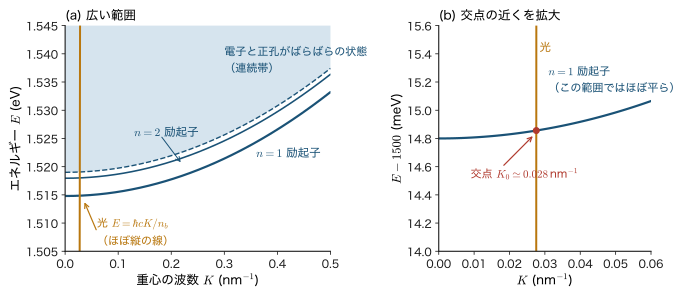
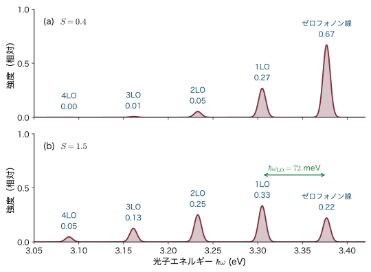
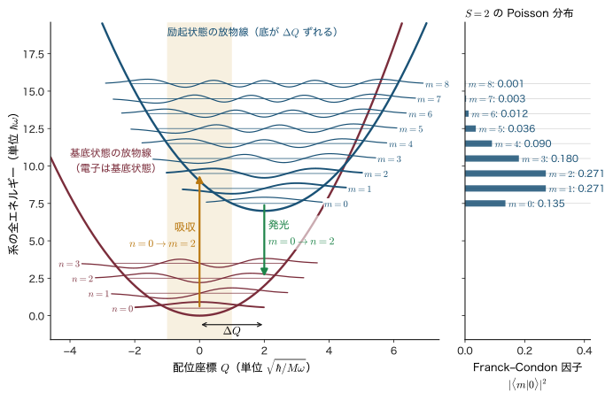
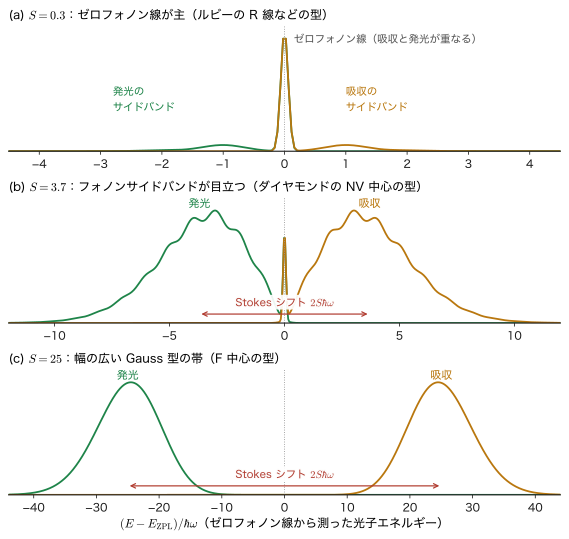
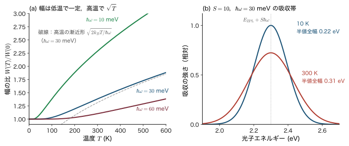
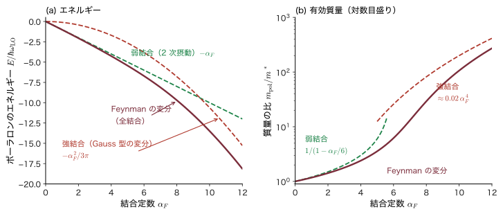
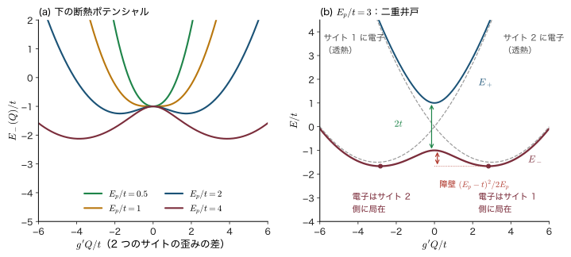
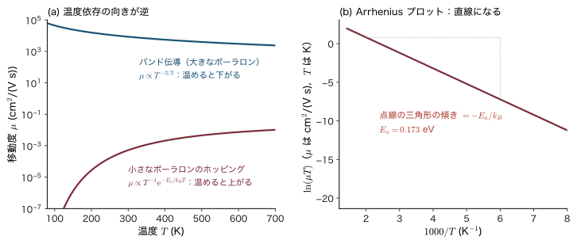
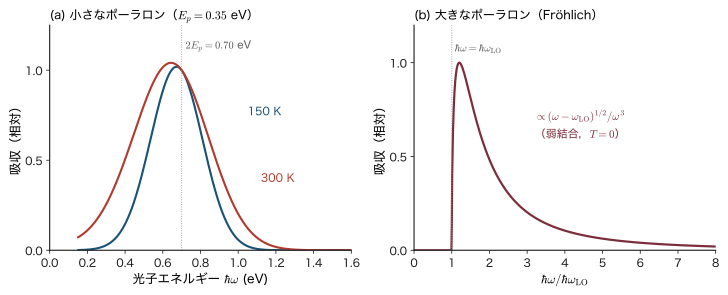

第31章励起子とポーラロン — 励起状態と格子緩和，Franck–Condon 原理
半導体や絶縁体に光を当てて電子を価電子帯から伝導帯へ上げると，あとには電子の抜けた穴，すなわち正孔が残る．第17章や第33章の前半では，こうしてできた電子と正孔を互いに無関係な粒子として扱ってきた．しかし実際には，電子（電荷 $-e$）と正孔（電荷 $+e$）は Coulomb（クーロン）力で引き合い，水素原子の陽子と電子のように束縛し合うことがある．これが励起子（exciton）である．さらに，電子や正孔，励起子がある場所では，まわりのイオンが引かれたり押されたりして，結晶の構造が局所的に歪む．電荷や励起がその歪みをまとったまま動くとき，それをポーラロン（polaron）と呼ぶ．
本章は，この 2 つの現象を「励起状態で何が起こるか」という 1 本の筋でつなぐ．中心に置くのは配位座標図である．横軸に原子の配置を表す一般化座標，縦軸に系の全エネルギーをとり，電子の基底状態と励起状態のエネルギーを 2 本の放物線で描く．励起状態では原子の平衡位置がずれる（＝結晶が局所的に歪む）ので，2 本の放物線の底は横にずれている．光の吸収と発光は原子が動くよりはるかに速く起こるので，この図の上で縦の矢印になる．これが Franck–Condon（フランク・コンドン）原理である．この 1 枚の図から，発光が吸収より低いエネルギーに現れること（Stokes シフト），発光帯の幅と形，フォノンレプリカの強さの比，温度を上げると光らなくなること（熱消光）が，すべて導かれる．
後半ではポーラロンを 2 つに分けて論じる．イオン結晶や極性半導体の伝導電子は，遠くまで届く Coulomb 力でまわりの多数のイオンを少しずつ分極させ，格子定数よりずっと大きな歪みの雲をまとう．これが大きなポーラロンで，Fröhlich（フレーリッヒ）の模型で記述される．一方，遷移金属酸化物などでは，電子が 1 個のイオンの上に閉じ込められ，そのイオンのまわりだけが大きく歪むことがある．これが小さなポーラロンで，Holstein（ホルスタイン）の模型で記述される．大きなポーラロンは少し重くなった電子として結晶の中を進むが，小さなポーラロンは熱の助けを借りて隣のイオンへ跳び移る．移動度の温度依存は両者で逆向きになる．小さなポーラロンは本書の既存の章にも姉妹編にも書かれていないので，2 つのサイトだけの模型から 1 行ずつ導く．
本章は，第27章で導入した「準粒子＝衣を着た粒子」の最も具体的な例でもある．励起子は電子と正孔が互いを衣にした準粒子，ポーラロンは電子がフォノンを衣にした準粒子である．第29章の電子格子相互作用（静的な歪みと動的な衣）を，励起状態と余分な電荷に当てはめたのが本章だと言ってもよい．励起子の誘電関数や吸収スペクトルの詳しい計算は第33章 33.7 に，半導体の発光の全体像は第25章 25.2 にあるので，それらとの重複は要点の再掲とリンクにとどめ，本章では配位座標図，Franck–Condon 因子，Huang–Rhys 因子とスペクトルの形，2 種類のポーラロン，自己束縛励起子を新しく書く．次の第32章では，ここで大きなポーラロンを作った「縦波の光学フォノンが作る電場」そのものを詳しく調べる．
- 光で励起された結晶で起こる 2 つのこと（電子と正孔の束縛＝励起子，格子の局所的な歪み＝格子緩和・ポーラロン）と，その時間スケール（fs，ps，ns）
- Wannier–Mott 励起子の水素様模型 $E_n=E_g-R^*/n^2$ と，物質ごとの束縛エネルギー・半径，室温で励起子が残るかの判断，Frenkel 励起子・電荷移動励起子との違い
- 励起子の重心運動の分散，2 次元の励起子の束縛エネルギーが 4 倍になること，励起子分子・トリオン・電子正孔液滴・Bose 凝縮・Mott 転移
- 励起子の吸収と発光（自由励起子・束縛励起子），フォノンレプリカ
- 配位座標図の読み方と Franck–Condon 原理：遷移が縦になる理由（古典と量子），電子の行列要素と振動の重なり積分への分解
- 放物線の式から，吸収・発光のピーク，緩和エネルギー $E_R=S\hbar\omega$，Stokes シフト $2S\hbar\omega$ を導く
- Huang–Rhys 因子 $S$ と，ゼロ温度のスペクトルの強度が Poisson 分布 $\ee^{-S}S^n/n!$ になることの完全な導出，幅の温度依存 $\sqrt{\coth(\hbar\omega/2k_BT)}$，無輻射遷移と熱消光
- ポーラロンの考え方と，大きなポーラロン（Fröhlich）と小さなポーラロン（Holstein）の違い
- Fröhlich ポーラロンのエネルギー $-\alpha_F\hbar\omega_{\rm LO}$・有効質量・衣のフォノン数を 2 次摂動で導く．強結合と Feynman の理論の要点
- 2 サイト Holstein 模型を断熱近似で解き，自己束縛の条件，バンドの狭まり $t\,\ee^{-S}$，ホッピングの活性化エネルギー（非断熱で $E_p/2$，断熱で $(E_p-t)^2/2E_p\approx E_p/2-t$）を導く．自己束縛励起子と，これらを観測する方法
31.1 励起状態で何が起こるか
ZnO の結晶を紫外光で照らすと，低温では吸収端のすぐ下に鋭い発光線が現れ，そのさらに下に一定の間隔で弱い線が並ぶ．KCl などのアルカリハライドに色中心を作って可視光で照らすと，吸収した光よりはるかに長い波長の，幅の広い発光帯が出る．ハライドペロブスカイトの一部は，紫外光で照らすと白く光る．これらはどれも「光を吸った直後の結晶の中で何が起こるか」を映した現象である．本節では，その全体像を先に描いておく．
記号の約束：本章で使う記号と，他の章との対応
（ここで先にまとめておくが，各記号は使う節で改めて定義する．配位座標の記号は 31.4 節，ポーラロンの記号は 31.6〜31.8 節で出てくる．）
- 配位座標（一般化座標）は $Q$，その振動の角振動数は $\omega$（エネルギー $\hbar\omega$），この振動に対応する質量（モードの有効質量）は $M$ と書く．基底状態と励起状態の放物線の底のずれを $\Delta Q$，2 つの底のエネルギー差（ゼロフォノン線のエネルギー）を $E_{\rm ZPL}$，緩和エネルギーを $E_R$ と書く．第25章 25.2.7 項は同じものを $\hbar\Omega$，$Q_0$，$E_{00}$ と書いている（$\hbar\Omega\leftrightarrow\hbar\omega$，$Q_0\leftrightarrow\Delta Q$，$E_{00}\leftrightarrow E_{\rm ZPL}$）．
- LO フォノンのエネルギーは $\hbar\omega_{\rm LO}$，Holstein 模型の分散のない光学フォノンのエネルギーは $\hbar\omega_0$．
- Huang–Rhys（ホアン・リース）因子は $S$．Fröhlich の結合定数は $\alpha_F$（第22章と同じ．文献では $\alpha$）で，吸収係数 $\alpha$ とは別である．ポーラロンの束縛エネルギーは $E_p$，ホッピングの活性化エネルギーは $E_a$．
- 励起子の束縛エネルギー（有効 Rydberg（リュードベリ）エネルギー）は $R^*$，有効 Bohr（ボーア）半径は $a_{\rm ex}$（第33章は $a^*$ と書く）．水素原子の Bohr 半径は $a_B=0.0529\,\mathrm{nm}$．励起子の全質量（重心運動の質量）は $M_X$（第33章は $M$ と書く．本章の $M$ は配位座標の質量）．電子と正孔の換算質量は $m_r$．
- 電子の飛び移り積分は $t$ で，本章では時間に $t$ を使わない（時間は $\tau$ と書く）．1 つのサイトの最近接のサイトの数は $z$．
- 系の全エネルギーを $E$ とし，特定のエネルギーは $E_{\rm abs}$（吸収のピーク），$E_{\rm em}$（発光のピーク）のように添字で区別する．$E_g$ はバンドギャップである．
- 本章の中で 2 つの意味に使う記号（文脈で区別する）：$K$ は励起子の重心の波数（31.2 節）とばね定数（31.4 節以降．$K=M\omega^2$）．$m$ は電子の質量（$m$，$m^*$，$m_r$）と励起状態の振動の量子数（$m=0,1,2,\ldots$，31.4〜31.5 節）．$W$ はバンド幅（$W=2zt$，31.6・31.8 節），帯の半値全幅 $W(T)$（31.5.4 項），遷移の速さ（$W_r$，$W_0$，$W_{g,n\to e,m}$）．$\mu$ は移動度，化学ポテンシャル（$\mu_e$ など，例題31.3），遷移双極子モーメント（$\bm\mu_{eg}$，31.4.5 項）．$\ell=\sqrt{\hbar/M\omega}$ は調和振動子の長さの単位（31.5 節）で，31.7.3 項のポーラロンの広がりは $\ell_p$ と書いて区別する．$d$ は無次元のずれ $d=\Delta Q/\ell$（31.5.2 項）と空間の次元（31.9.2 項）．$\lambda$ は 2 次元の励起子の広がり $\lambda_{\rm 2D}$（31.2.5 項）と局在の度合い $\lambda=a/L$（31.9.2 項）．$B$ は 31.9.2 項でだけ励起子のバンドの半幅を表す（磁束密度ではない）．$\varepsilon_\kk=\hbar^2k^2/2m^*$ は 31.7 節の電子の運動エネルギーで，誘電率 $\epsilon_s$，$\epsilon_\infty$ とは字の形で区別する．
31.1.1 光を吸った直後の結晶 — 電子と正孔ができる
バンドギャップ $E_g$ より大きなエネルギーの光子を半導体や絶縁体が吸収すると，価電子帯の電子が 1 個，伝導帯へ上がる（第17章 17.1 節，第33章 33.5 節）．価電子帯には電子の抜けた穴が残り，これは正の電荷 $+e$ を持つ粒子，すなわち正孔（hole）としてふるまう（第17章 17.4 節）．したがって「光で励起された結晶」とは，伝導帯の電子と価電子帯の正孔が 1 個ずつ加わった結晶のことである．
電子と正孔を互いに無関係な粒子と考え，さらに原子は元の位置に止まったままと考えるのが，バンド理論の最も簡単な描像であった．この描像では，吸収は $E_g$ から始まり，発光も $E_g$ のあたりで起こるはずである．ところが冒頭の実験はどれもこの描像から外れている．外れる理由は 2 つある．
- 電子と正孔が Coulomb 力で引き合う．電荷 $-e$ の電子と $+e$ の正孔は，誘電率 $\epsilon_s$ の結晶の中で $-e^2/(4\pi\epsilon_0\epsilon_s r)$ のエネルギーで引き合う．これは水素原子の陽子と電子の関係とそっくりで，電子と正孔が束縛し合った状態ができる．これが励起子（exciton）である（31.2 節）．
- まわりの原子が動く．電子が価電子帯（結合性の軌道）から伝導帯（反結合性の軌道）へ移れば，原子どうしを結びつける力が変わる．イオン結晶なら，電子の負電荷は陽イオンを引き寄せ，陰イオンを押しのける．こうして励起状態では結晶の構造が局所的に歪む．歪みが落ち着く過程を格子緩和（lattice relaxation）といい，電荷や励起が歪みをまとったものをポーラロン（polaron）という（31.6〜31.8 節）．
この 2 つは独立ではない．励起子も歪みをまとうし（31.9 節の自己束縛励起子），歪みの大きさは光の吸収と発光のエネルギー，スペクトルの形，光るか光らないかを決める（31.4〜31.5 節）．図31.1 は本章の全体の地図である．
31.1.2 3 つの時間スケール
図31.1 の時間軸に描いたように，励起状態で起こる過程には桁違いの 3 つの時間スケールがある．本章の議論は，すべてこの時間スケールの分離の上に立っている．
- 電子の遷移（光の吸収そのもの）：1〜数 fs．エネルギー $E$ の量子状態の位相は $\ee^{-iE\tau/\hbar}$ で回るので，電子の状態が変わる時間の目安は $h/E_g$ 程度である．$E_g=1.5\,\mathrm{eV}$ なら $h/E_g\approx2.8\,\mathrm{fs}$（$1\,\mathrm{fs}=10^{-15}\,\mathrm{s}$）．
- 原子核の運動（格子の振動と緩和）：0.1〜1 ps．光学フォノンのエネルギーは $\hbar\omega=10$〜$100\,\mathrm{meV}$ 程度で，振動の周期 $2\pi/\omega$ は $40$〜$400\,\mathrm{fs}$ である．原子が新しい平衡位置へ移り，余ったエネルギーをフォノンとしてまわりへ逃がし終えるまでには，振動の数周期〜十数周期，すなわち $0.1$〜$1\,\mathrm{ps}$ かかる．
- 発光（光子の放出）：ns〜μs．直接遷移型の半導体の励起子の輻射寿命は ns 程度，禁制遷移や自己束縛励起子では μs〜ms にもなる（第25章 25.1 節）．
電子の遷移が原子の運動より 100 倍も速いので，光を吸う（または出す）一瞬のあいだ，原子は止まっていると考えてよい．これが 31.4 節の Franck–Condon 原理である．また，発光が格子緩和より 1000 倍も遅いので，光る前に格子は新しい平衡位置へ落ち着いていると考えてよい．だから発光は，歪みの落ち着いた励起状態から起こる．吸収（歪む前）と発光（歪んだ後）のエネルギーが違うのはこのためである．
例題31.1 電子の遷移と原子の振動の時間を比べる
(1) 光学フォノンのエネルギーが $\hbar\omega=30\,\mathrm{meV}$ のとき，振動の角振動数 $\omega$ と周期 $2\pi/\omega$ を求めよ．(2) $E_g=1.5\,\mathrm{eV}$ の電子遷移の時間の目安 $h/E_g$ と比べ，原子が「止まっている」とみなせる理由を述べよ．$\hbar=6.582\times10^{-16}\,\mathrm{eV\,s}$，$h=4.136\times10^{-15}\,\mathrm{eV\,s}$ を使え．
解答．(1) $$\omega=\dfrac{\hbar\omega}{\hbar}=\dfrac{0.030\,\mathrm{eV}}{6.582\times10^{-16}\,\mathrm{eV\,s}}=4.56\times10^{13}\,\mathrm{s^{-1}}$$．周期は
$$ \frac{2\pi}{\omega}=\frac{2\pi}{4.56\times10^{13}\,\mathrm{s^{-1}}}=1.38\times10^{-13}\,\mathrm{s}=138\,\mathrm{fs} $$(2) $$\dfrac{h}{E_g}=\dfrac{4.136\times10^{-15}\,\mathrm{eV\,s}}{1.5\,\mathrm{eV}}=2.8\times10^{-15}\,\mathrm{s}=2.8\,\mathrm{fs}$$．比は $138/2.8\approx50$．原子が 1 周期の 1/50 のあいだに動く距離は，振幅の $2\pi/50\approx1/8$ 程度以下である．しかも振動の折り返し点の近くでは原子はほとんど止まっている．
∎ 電子の遷移は原子の振動の 1 周期の数 % の時間で終わるので，遷移のあいだ原子の位置（配位座標 $Q$）は変わらないとみなせる．フォノンのエネルギーが大きい（軽い原子の速い振動，たとえば O–H 伸縮の $\sim0.4\,\mathrm{eV}$）ほど，この近似は少しずつ悪くなる．
31.1.3 本章の進み方
31.2〜31.3 節では，まず原子を止めたまま，電子と正孔の Coulomb 引力だけを考える（励起子）．31.4〜31.5 節では，逆に電子の状態は「基底状態」と「励起状態」の 2 つだけに単純化し，原子の動きを 1 つの座標 $Q$ で表して，吸収・発光のエネルギーとスペクトルの形を導く（配位座標図）．31.6〜31.8 節では，余分な電荷（光で作った電子や正孔，あるいはドーピングで入れた電子や正孔）が歪みをまとう現象＝ポーラロンを，大きいもの（Fröhlich）と小さいもの（Holstein）に分けて調べる．31.9 節で両者を合わせ（自己束縛励起子），31.10 節で観測の方法をまとめる．
物理的意味：「ポーラロン」は励起状態に限らない
ポーラロンという言葉は，光で作った電子や正孔に限らず，結晶に余分な電荷が 1 個入ったときに，まわりの格子がそれに応じて歪み，電荷がその歪みを連れて動く現象一般を指す．ドナーから伝導帯に出た電子も，Li を挿入した電池の正極材料で Fe や Ti の価数が変わった場所も，同じ物理である．本章では励起状態の文脈から入るが，31.6〜31.8 節の結果はドーピングされた電子や正孔にもそのまま当てはまる．準粒子の一般論（第27章 27.2 節）の言葉でいえば，ポーラロンは「フォノンの衣を着た電子」，励起子は「正孔の引力でまとまった電子と正孔の対」という準粒子である．
31.2 励起子 — 固体の中の水素原子
光で作った電子と正孔が引き合って束縛し合う——この考えは Frenkel（フレンケル，1931 年）と Wannier（ワニエ，1937 年）にさかのぼる．励起子のエネルギーと吸収スペクトルの導出は第33章 33.7 節に詳しく書いてあるので，本節では要点を再掲したうえで，励起子の種類，物質による違い，結晶の中での運動，2 次元の励起子，たくさんの励起子が集まったときの現象を見ていく．
31.2.1 電子と正孔が水素原子のように束縛する
水素原子は，陽子（電荷 $+e$）のまわりを電子（電荷 $-e$，質量 $m$）が Coulomb 力で束縛されて回る系である．光で励起された半導体では，正孔（電荷 $+e$，有効質量 $m_h^*$）と電子（電荷 $-e$，有効質量 $m_e^*$）が同じように Coulomb 力で引き合う．違いは 3 つだけである（図31.2）．
- 質量．陽子は電子の 1836 倍も重いので，水素原子では電子だけが動くと考えてよかった．励起子では電子も正孔も同じくらいの質量なので，2 つが互いのまわりを回る．相対運動の質量は換算質量 $m_r$（$1/m_r=1/m_e^*+1/m_h^*$）になる．
- 誘電率．電子と正孔のあいだには多数の原子があり，その電子雲が分極して Coulomb 力を $1/\epsilon_s$ に弱める（遮蔽する）．
- エネルギーの基準．電子と正孔を作るのに，まず $E_g$ が要る．束縛するとそこから束縛エネルギーだけ下がる．
第33章 33.7.2 項は，2 体のハミルトニアンを重心運動と相対運動に分け，相対運動が水素原子と同じ方程式に従うことを導いた．その結果を再掲する（第33章の $a^*$，$M$ を本章では $a_{\rm ex}$，$M_X$ と書く）．
ここで $n=1,2,3,\ldots$ は主量子数，$\bm K$ は励起子の重心の波数，$M_X=m_e^*+m_h^*$ は励起子の全質量である．$R^*$ と $a_{\rm ex}$ を掛けると $m_r$ が消えて
$$ R^*a_{\rm ex}=\frac{e^2}{8\pi\epsilon_0\epsilon_s} $$となる（$R^*=\hbar^2/(2m_ra_{\rm ex}^2)$ と $a_{\rm ex}=4\pi\epsilon_0\epsilon_s\hbar^2/(m_re^2)$ から $R^*a_{\rm ex}=\hbar^2/(2m_ra_{\rm ex})=e^2/(8\pi\epsilon_0\epsilon_s)$）．質量の不確かな物質では，実測の $R^*$ からこの式で $a_{\rm ex}$ を見積もる．水素の波動関数の形はシミュレーター 水素原子 ― 軌道の形とぼやけた電子雲 で見られる（励起子では長さの単位が $a_B$ から $a_{\rm ex}$ に伸びる）．
例題31.2 GaAs と ZnO の励起子 — 水素様模型と実測
(1) GaAs（$m_e^*=0.067m$，重い正孔 $m_h^*=0.45m$，$\epsilon_s=12.9$）の $R^*$ と $a_{\rm ex}$ を式 \eqref{eq:31-exciton} で求めよ．(2) ZnO（$m_e^*=0.24m$，$m_h^*=0.59m$，$\epsilon_s=8.5$，$\epsilon_\infty=3.7$）について，$\epsilon_s$ を使った場合と $\epsilon_\infty$ を使った場合の $R^*$ を求め，実測の $60\,\mathrm{meV}$ と比べよ．
解答．(1) 換算質量は
$$ m_r=\frac{m_e^*m_h^*}{m_e^*+m_h^*}=\frac{0.067\times0.45}{0.067+0.45}\,m=\frac{0.03015}{0.517}\,m=0.0583\,m $$ $$ \begin{aligned} &R^*=13.6\,\mathrm{eV}\times\frac{0.0583}{12.9^2}=13.6\,\mathrm{eV}\times\frac{0.0583}{166.4}=4.8\,\mathrm{meV},\\ &a_{\rm ex}=0.0529\,\mathrm{nm}\times\frac{12.9}{0.0583}=11.7\,\mathrm{nm} \end{aligned} $$実測の $4.2\,\mathrm{meV}$ よりやや大きい（第33章の例題33.17 と同じ結果．価電子帯の重い正孔と軽い正孔が混ざるため）．
(2) $m_r=\dfrac{0.24\times0.59}{0.83}\,m=0.171\,m$．$\epsilon_s=8.5$ なら $R^*=13.6\,\mathrm{eV}\times0.171/72.25=32\,\mathrm{meV}$，$\epsilon_\infty=3.7$ なら $R^*=13.6\,\mathrm{eV}\times0.171/13.69=170\,\mathrm{meV}$．実測の $60\,\mathrm{meV}$ は両者のあいだにある．
∎ ZnO の $R^*$（$60\,\mathrm{meV}$）は LO フォノンのエネルギー（$72\,\mathrm{meV}$）に近い．電子と正孔の相対運動の速さ（$\sim R^*/\hbar$）が格子のイオンの振動（$\omega_{\rm LO}$）と同じ程度なので，イオンの分極は追いつけたり追いつけなかったりし，有効な誘電率が $\epsilon_\infty$ と $\epsilon_s$ の中間になる．イオンが電子や正孔に「ついてくる」かどうかは，31.7 節のポーラロンの問題そのものである．
31.2.2 物質による違いと，室温で励起子が生き残るか
式 \eqref{eq:31-exciton} によれば，$R^*$ は $m_r$ に比例し $\epsilon_s^2$ に反比例する．ギャップの大きい物質ほど有効質量が大きく誘電率が小さい傾向があるので，ギャップの大きい物質ほど励起子は強く束縛され，小さくなる．表31.1 に代表的な値を示す（第33章の表33.4 と同じ値に，いくつかの物質を加えた）．
| 物質 | $E_g$（eV，低温） | $R^*$ | $a_{\rm ex}$ の目安 | $R^*/k_BT$（300 K） | 種類・特徴 |
|---|---|---|---|---|---|
| GaAs | 1.52 | $4.2\,\mathrm{meV}$ | $12$〜$13\,\mathrm{nm}$ | 0.16 | Wannier–Mott．低温でのみ鋭い線 |
| Si（間接） | 1.17 | $14.7\,\mathrm{meV}$ | $\sim4\,\mathrm{nm}$ | 0.57 | Wannier–Mott．吸収端の段 |
| GaN | 3.5 | $\sim25\,\mathrm{meV}$ | $\sim3\,\mathrm{nm}$ | $\sim1$ | Wannier–Mott |
| CdS | 2.58 | $\sim29\,\mathrm{meV}$ | $\sim3\,\mathrm{nm}$ | $\sim1.1$ | Wannier–Mott |
| ZnO | 3.44 | $60\,\mathrm{meV}$ | $\sim1.4\,\mathrm{nm}$ | 2.3 | 室温でも励起子発光 |
| Cu$_2$O（黄色系列） | 2.17 | $\sim92\,\mathrm{meV}$ | $\sim1\,\mathrm{nm}$ | 3.6 | Rydberg 系列（$n=25$ 程度まで） |
| CuCl | 3.4 | $\sim0.19\,\mathrm{eV}$ | $\sim0.7\,\mathrm{nm}$ | $\sim7$ | 励起子分子が安定 |
| MoS$_2$ など単原子層 | $\sim2$（光学） | $0.2$〜$0.5\,\mathrm{eV}$ | $\sim1\,\mathrm{nm}$ | 10 前後 | 2 次元．遮蔽が弱い（31.2.5） |
| KCl，KBr | $\sim8$ | $\sim1\,\mathrm{eV}$ | 格子定数程度 | 数十 | Frenkel 型（31.2.3） |
| アントラセン（分子結晶） | $\sim4$ | $\sim1\,\mathrm{eV}$ | 分子 1 個 | 数十 | Frenkel 型 |
$R^*$ が $k_BT$ より十分大きければ，熱で励起子が壊れることは少ない．GaAs（$R^*/k_BT=0.16$）では室温で励起子はすぐ壊れ，ZnO（2.3）や Cu$_2$O（3.6），単原子層（10 前後）では室温でも励起子が光学的な性質を支配する．ただし，正確には「何割が励起子として残るか」は密度にもよる．次の例題で確かめよう．
例題31.3 室温で励起子は生き残るか — 電子・正孔・励起子の化学平衡
電子・正孔・励起子の 3 種の粒子が熱平衡にあるとき，反応 $e+h\rightleftarrows X$ のつり合いから，Saha（サハ）の式
$$ \frac{n_en_h}{n_X}=\left(\frac{m_rk_BT}{2\pi\hbar^2}\right)^{3/2}\ee^{-R^*/k_BT}\equiv n^*(T) $$を導け（$n_e$，$n_h$，$n_X$ は電子・正孔・励起子の数密度，いずれも縮退していないとし，励起子は $n=1$ だけを考える）．光で作った電子–正孔対の全密度を $n$，そのうちばらばらの電子と正孔になっている割合を $x$（$n_e=n_h=xn$，$n_X=(1-x)n$）とし，GaAs（$m_r=0.058m$，$R^*=4.2\,\mathrm{meV}$）と ZnO（$m_r=0.17m$，$R^*=60\,\mathrm{meV}$）について，$300\,\mathrm{K}$，$n=10^{17}\,\mathrm{cm^{-3}}$ での $x$ を求めよ．
解答．化学平衡の条件．反応 $e+h\rightleftarrows X$ が平衡にあるとき，化学ポテンシャルは $\mu_e+\mu_h=\mu_X$ を満たす（両辺の自由エネルギーが等しい）．
各粒子の密度．縮退していない粒子の密度は，第17章 17.5 節と同じ計算で $n_i=g_i\left(\dfrac{m_ik_BT}{2\pi\hbar^2}\right)^{3/2}\exp\left(\dfrac{\mu_i-E_i}{k_BT}\right)$ と書ける．$g_i$ はスピンの縮重度，$E_i$ はその粒子のエネルギーの底である．電子の底を $E_c$，正孔の底（正孔のエネルギーで測る）を $-E_v$ とすると $E_e+E_h=E_c-E_v=E_g$，励起子の底は $E_X=E_g-R^*$，質量は $M_X=m_e^*+m_h^*$ である．縮重度は電子・正孔が 2，励起子が $2\times2=4$．
比をとる．
$$ \frac{n_en_h}{n_X}=\frac{g_eg_h}{g_X}\left(\frac{k_BT}{2\pi\hbar^2}\right)^{3/2}\left(\frac{m_e^*m_h^*}{M_X}\right)^{3/2}\exp\left(\frac{\mu_e+\mu_h-\mu_X-E_g+(E_g-R^*)}{k_BT}\right) $$$g_eg_h/g_X=4/4=1$，$m_e^*m_h^*/M_X=m_r$，指数の中は $\mu_e+\mu_h-\mu_X=0$ により $-R^*/k_BT$ だけが残るので，Saha の式が得られる．
割合 $x$．$n_e=n_h=xn$，$n_X=(1-x)n$ を入れると $\dfrac{x^2n}{1-x}=n^*$，すなわち $nx^2+n^*x-n^*=0$ で，正の解は $x=\dfrac{-n^*+\sqrt{n^{*2}+4nn^*}}{2n}$．
GaAs．$\left(\dfrac{mk_BT}{2\pi\hbar^2}\right)^{3/2}=1.25\times10^{19}\,\mathrm{cm^{-3}}$（$300\,\mathrm{K}$，自由電子の質量）なので，$$\left(\dfrac{m_rk_BT}{2\pi\hbar^2}\right)^{3/2}=1.25\times10^{19}\times0.0583^{3/2}\,\mathrm{cm^{-3}}=1.77\times10^{17}\,\mathrm{cm^{-3}}$$．$\ee^{-4.2/25.85}=\ee^{-0.162}=0.850$ を掛けて $n^*=1.50\times10^{17}\,\mathrm{cm^{-3}}$．$n=10^{17}$ なら $$x=\dfrac{-1.50+\sqrt{1.50^2+4\times1\times1.50}}{2}=\dfrac{-1.50+2.87}{2}=0.69$$．
ZnO．$1.25\times10^{19}\times0.17^{3/2}\,\mathrm{cm^{-3}}=8.8\times10^{17}\,\mathrm{cm^{-3}}$，$\ee^{-60/25.85}=\ee^{-2.32}=0.098$ で $n^*=8.6\times10^{16}\,\mathrm{cm^{-3}}$．$$x=\dfrac{-0.86+\sqrt{0.86^2+4\times0.86}}{2}=\dfrac{-0.86+2.05}{2}=0.59$$．
∎ 意外なことに，$10^{17}\,\mathrm{cm^{-3}}$ では両者の差は小さい（$n=10^{18}\,\mathrm{cm^{-3}}$ まで上げると ZnO では $x\approx0.25$ になり励起子が多数派になるが，GaAs ではその前に Mott 転移（31.2.6）で励起子が溶けてしまう）．低密度ほど $x$ は 1 に近づく．ばらばらの電子と正孔のほうが取りうる状態の数（エントロピー）が多いからである．それでも ZnO が「室温で励起子が生きている物質」と呼ばれるのは，(i) $\ee^{-R^*/k_BT}$ が 1 桁小さく，Mott 密度が高い（$a_{\rm ex}$ が小さい）ので，高い密度で励起子が多数派になれること，(ii) 光でできた電子と正孔が熱平衡に達する前に，まず励起子を作って光ることによる．
Cu$_2$O の Rydberg 系列．Cu$_2$O では，伝導帯の底と価電子帯の頂上がどちらも偶パリティで，$s$ 励起子への遷移が双極子禁制になるため，$p$ 励起子（$n\ge2$）の吸収線 $E_n=E_g-R^*/n^2$ が水素原子の Lyman 系列のようにきれいに並ぶ（第33章 33.7.5 項）．2014 年には，天然の Cu$_2$O の結晶で $n=25$ 程度までの線が観測された（Kazimierczuk ら）．励起子の半径は $n^2a_{\rm ex}$ に比例するので，$n=25$ の励起子は $\mu$m に近い大きさを持つ．固体の中に，原子物理の「Rydberg 原子」と同じものが作れるのである（演習31.1）．
31.2.3 Wannier 励起子と Frenkel 励起子，電荷移動励起子
水素様模型が使えるのは，$a_{\rm ex}$ が格子定数 $a$ より十分大きく，電子と正孔のあいだの結晶を誘電率 $\epsilon_s$ の連続体とみなせるときに限られる．この型を Wannier–Mott（ワニエ・モット）励起子という．反対の極限が Frenkel（フレンケル）励起子である（図31.3）．
- Frenkel 励起子．分子性結晶（アントラセン，ペンタセン，有機半導体），希ガス固体，アルカリハライドでは，励起は 1 個の分子やイオンの中の電子の励起（たとえば Cl$^-$ の $3p$ 電子が $4s$ 的な軌道へ上がる）としてほぼ閉じ込められている．電子と正孔は同じ分子の上にいて，束縛エネルギーは $0.1$〜$1\,\mathrm{eV}$ 程度と大きい．Frenkel 励起子が結晶の中を動くのは，電子と正孔が一緒に跳ぶからではなく，励起エネルギーが隣の分子へ受け渡されるからである（励起された分子 A* と基底状態の分子 B のあいだで，A*B → AB* という双極子–双極子相互作用によるエネルギーの移動．Förster 移動と同じしくみ）．
- 電荷移動励起子．中間の型として，電子と正孔が隣り合った分子やイオンに分かれて乗っているものがある．電荷移動励起子（charge-transfer exciton）という．有機太陽電池のドナー分子とアクセプター分子の界面や，遷移金属酸化物の O $2p$ から金属の $3d$ への電荷移動（第28章 28.7 節）の励起がこれにあたる．電子と正孔が離れているので大きな電気双極子を持ち，電場で位置が大きく変わる．
Wannier 型か Frenkel 型かを分ける目安は，$a_{\rm ex}$ と格子定数 $a$ の比，あるいは同じことだが，$R^*$ とバンド幅の比である．$R^*$ がバンド幅よりずっと小さいとき，電子と正孔はバンドの底の近くの状態だけを使って束縛状態を作れるので，有効質量近似が成り立ち，励起子は大きくなる．$R^*$ がバンド幅と同程度以上になると，Brillouin（ブリルアン）域全体の状態を混ぜなければ束縛状態が作れず，実空間では 1 つの原子程度に縮む．
31.2.4 励起子は結晶の中を動く準粒子 — 重心運動と分散
式 \eqref{eq:31-exciton} の最後の項 $\hbar^2K^2/2M_X$ は，励起子が全体として結晶の中を進む運動のエネルギーである．励起子は電荷を持たない（電気的に中性）が，エネルギーを運ぶ準粒子であり，重心の波数 $\bm K$ を持つ平面波として結晶の中を伝わる．この分散を図31.4 に描いた．

図31.4(a) から読み取れることは 2 つある．第一に，光の分散の傾き $\hbar c/n_b$ は励起子の分散よりけた違いに急である．したがって，光が作れるのは $K\simeq0$ の励起子だけである（光子の運動量はほとんどゼロ．第17章 17.1 節）．第二に，光の直線と励起子の放物線は 1 点 $K_0$ で交わる．交点の近くでは，光と励起子が同じエネルギーと同じ波数を持つので，両者は強く混ざり合い，励起子ポラリトン（exciton polariton）という新しい準粒子を作る．励起子ポラリトンは第33章 33.10 節（33.10.3 項「励起子ポラリトン」）で，フォノンポラリトンと合わせて統一的に扱う．
例題31.4 光が作る励起子の運動エネルギー
GaAs の $n=1$ 励起子（$E=1.515\,\mathrm{eV}$）と同じエネルギーの光の，結晶の中での波数 $K_0$ を求めよ（$n_b=3.59$，$\hbar c=197.3\,\mathrm{eV\,nm}$）．その波数を持つ励起子の重心運動のエネルギー $\hbar^2K_0^2/2M_X$ を $M_X=0.517m$ として求め，励起子の束縛エネルギー $4.2\,\mathrm{meV}$ や Brillouin 域の大きさ $2\pi/a$（$a=0.565\,\mathrm{nm}$）と比べよ．$\hbar^2/2m=0.0381\,\mathrm{eV\,nm^2}$ を使え．
解答．光の分散 $E=\hbar cK/n_b$ を $K$ について解いて
$$ K_0=\frac{n_bE}{\hbar c}=\frac{3.59\times1.515\,\mathrm{eV}}{197.3\,\mathrm{eV\,nm}}=0.0276\,\mathrm{nm^{-1}} $$ $$ \frac{\hbar^2K_0^2}{2M_X}=\frac{\hbar^2}{2m}\cdot\frac{m}{M_X}K_0^2=0.0381\,\mathrm{eV\,nm^2}\times\frac{1}{0.517}\times(0.0276\,\mathrm{nm^{-1}})^2=5.6\times10^{-5}\,\mathrm{eV}=56\,\mu\mathrm{eV} $$$2\pi/a=11.1\,\mathrm{nm^{-1}}$ なので $K_0$ はその $1/400$ にすぎない．
∎ 光が作る励起子の運動エネルギーは束縛エネルギーの $1/75$ 程度で，吸収線の幅（低温でも $0.1\,\mathrm{meV}$ 程度）と同じくらいである．光で作る励起子は「ほぼ止まっている」と考えてよい．逆に，止まった励起子しか光にならないので，熱で運動エネルギーを持った励起子（$K\gg K_0$）は，そのままでは光を出せない（フォノンや欠陥で $K$ を捨てる必要がある）．これが 31.3 節の束縛励起子の線やフォノンレプリカが目立つ理由の 1 つである．
31.2.5 2 次元の励起子 — 束縛エネルギーが 4 倍になる
厚さ数 nm の量子井戸（第24章 24.7 節）や，MoS$_2$，WSe$_2$ などの遷移金属ダイカルコゲナイドの単原子層では，電子と正孔は面内でしか動けない．2 次元の水素原子のエネルギー準位は，第33章 33.7.6 項で変分法と動径方程式の書き換えによって導いた．結果を再掲する．
導出の要点は次の 2 つである．(i) 2 次元のラプラシアンを $\varphi=u(\rho)\ee^{im\phi}/\sqrt\rho$ に作用させると，$u$ の方程式は 3 次元の動径方程式の $l(l+1)$ を $(\abs m-\frac12)(\abs m+\frac12)$ に替えたもの，すなわち $l\to\abs m-\frac12$ としたものになる．3 次元の $E=-R^*/(n_r+l+1)^2$ に $l=\abs m-\frac12$ を入れると，主量子数 $n=n_r+\abs m+1$ で $E=-R^*/(n-\frac12)^2$ になる．(ii) 基底状態 $n=1$ では $(1-\frac12)^2=\frac14$ なので束縛エネルギーは $4R^*$，波動関数の広がり $\lambda$ は $a_{\rm ex}/2$ に縮む．図31.5 に 3 次元と 2 次元の準位を並べた．
量子井戸．実際の量子井戸には有限の幅があるので，束縛エネルギーは $R^*$ と $4R^*$ のあいだになる（GaAs の幅 $10\,\mathrm{nm}$ の井戸で $10\,\mathrm{meV}$ 前後）．束縛が強く線が鋭いので，室温でも励起子の吸収が見え，電場で吸収をずらす量子閉じ込め Stark 効果を使った光変調器に利用される（第33章 33.8 節）．
遷移金属ダイカルコゲナイドの単原子層．MoS$_2$ や WSe$_2$ の単原子層では，束縛エネルギーが $0.2$〜$0.5\,\mathrm{eV}$ にも達する．理由は 2 つある．(i) 厚さが 1 層なので理想的な 2 次元に近く，束縛エネルギーが 4 倍になる．(ii) 層の外は真空（または誘電率の小さい基板）なので，電子と正孔のあいだの電気力線の大部分が層の外を通り，遮蔽が弱い．距離が離れるほど遮蔽が効かなくなるので，Coulomb 力は単純な $1/(\epsilon_s r)$ ではなくなり，励起子の系列は水素様の $1/(n-\frac12)^2$ からずれる（Keldysh（ケルディッシュ）型の相互作用）．
例題31.5 量子井戸と単原子層の励起子
(1) GaAs の理想的な 2 次元の量子井戸での $n=1$ と $n=2$ の束縛エネルギーを，3 次元の $R^*=4.2\,\mathrm{meV}$ から求めよ．(2) 単原子層の MoS$_2$ について，換算質量 $m_r=0.25m$，有効な誘電率 $\epsilon=4.5$ の 2 次元水素模型で束縛エネルギーを見積もり，実測の $0.2$〜$0.5\,\mathrm{eV}$ と比べよ．
解答．(1) 式 \eqref{eq:31-2d} より $n=1$ は $4R^*=16.8\,\mathrm{meV}$，$n=2$ は $R^*/(2-\frac12)^2=4R^*/9=1.9\,\mathrm{meV}$．
(2) 3 次元の値は $$R^*=13.6\,\mathrm{eV}\times0.25/4.5^2=13.6\times0.25/20.25\,\mathrm{eV}=0.168\,\mathrm{eV}$$，2 次元の基底状態はその 4 倍で $0.67\,\mathrm{eV}$．
∎ 2 次元水素模型は実測よりやや大きい値を与える．単原子層の電子雲が作る遮蔽は短い距離ほど強く効く（距離 $r$ が層の「遮蔽長」より短いと Coulomb 力は対数的にしか増えない）ので，近距離の引力が水素模型より弱くなるためである．それでも桁は合い，「室温の $k_BT$ の 10 倍以上」という結論は変わらない．単原子層の光学的性質が室温でも励起子で決まるのはこのためである．
31.2.6 たくさんの励起子 — 多体効果
強い光で励起子をたくさん作ると，励起子どうしの相互作用によって，原子や分子の物理と統計物理の両方にまたがる現象が現れる．それぞれ要点だけを述べる．
- 励起子分子（biexciton）．2 個の励起子が，水素原子 2 個が H$_2$ 分子を作るように結合したもの．束縛エネルギーは励起子の束縛エネルギーの数分の 1（CuCl で約 $30\,\mathrm{meV}$，GaAs では $1\,\mathrm{meV}$ にも満たない）．励起子分子が 1 個の光子を出して励起子に戻る発光線は，励起子の線より低いエネルギーに現れ，励起光の強さの 2 乗に比例して強くなる．
- トリオン（trion，荷電励起子）．励起子に電子か正孔がもう 1 個付いたもの（$X^-=eeh$，$X^+=ehh$）で，水素の負イオン H$^-$ にあたる．ドープした量子井戸や単原子層で，励起子の線の数 meV〜数十 meV 下に現れる．
- 電子正孔液滴（electron–hole droplet）．間接ギャップの Ge や Si を低温で強く励起すると，電子と正孔が金属の液体のような高密度の滴（Ge で約 $2\times10^{17}\,\mathrm{cm^{-3}}$）に凝縮する．気体（励起子）と液体（滴）の相転移であり，滴は $\mu$m 程度の大きさを持つ．
- 励起子の Bose（ボース）凝縮．励起子は 2 個の Fermi（フェルミ）粒子からなるので，密度が低いうちは Bose 粒子としてふるまう．質量が小さい（電子の質量程度）ので，同じ密度の原子気体よりずっと高い温度で Bose–Einstein 凝縮が起こるはずである．寿命が短い（すぐ光って消える）ことが実験の難しさで，Cu$_2$O の長寿命の励起子，結合した 2 層の量子井戸の空間的に分かれた励起子，共振器の励起子ポラリトン（第33章 33.10 節）で，凝縮やそれに近い現象が報告されている．
- Mott 転移．密度が上がって励起子どうしの距離が $a_{\rm ex}$ 程度になると，まわりの自由なキャリアが Coulomb 引力を遮蔽して束縛状態が消え，励起子は電子と正孔のプラズマに溶ける．目安は $n_M^{1/3}a_{\rm ex}\simeq0.25$ で，GaAs では $10^{16}\,\mathrm{cm^{-3}}$ 程度である（第33章 33.7.8 項）．ドナーの Mott 転移（第36章 36.6 節）と同じ物理であり，電子相関による Mott 転移（第28章 28.6 節）とも関係が深い．
31.3 励起子を見る — 吸収と発光
励起子は，光の吸収と発光のスペクトルに，バンド間遷移だけでは説明できない鋭い線として現れる．吸収は第33章 33.7 節で，発光は第25章 25.2 節で詳しく扱ったので，本節では両者を 1 枚の図にまとめ（図31.6），本章の後半につながる 2 つの点——フォノンレプリカと Stokes シフト——を付け加える．
31.3.1 吸収に現れる励起子と，励起子の誘電関数
図31.6(a) の要点は次の 3 つである．詳しい導出は第33章 33.7.3〜33.7.4 項にある．
- ギャップの下の鋭い線．光が作れるのは $\bm K\simeq0$ の励起子だけなので，吸収は $E_n=E_g-R^*/n^2$ の位置の離散的な線になる．線の強さは電子と正孔が同じ場所にいる確率 $\abs{\varphi_n(0)}^2=1/(\pi a_{\rm ex}^3n^3)$ に比例し，$1/n^3$ で弱くなる．
- Sommerfeld 増強．$E_g$ より上の連続帯でも Coulomb 引力は電子と正孔を近づけるので，吸収は引力のないときの値に Sommerfeld（ゾンマーフェルト）因子 $2\pi x/(1-\ee^{-2\pi x})$（$x=\sqrt{R^*/(\hbar\omega-E_g)}$）を掛けた大きさになる（Elliott（エリオット）の式，第33章 33.7.4 項）．吸収端は $\sqrt{\hbar\omega-E_g}$ でゼロから立ち上がるのではなく，有限の値から階段状に始まる．
- 線と連続帯のつながり．$n$ の大きい線は $E_g$ の直前で密集し，その「単位エネルギーあたりの強さ」は $E_g$ の直上の連続帯の値になめらかにつながる．
補足：励起子の誘電関数
吸収係数 $\alpha$ は誘電関数 $\epsilon(\omega)=\epsilon_1+i\epsilon_2$ の虚部から決まる（第33章 33.1 節）．励起子の 1 本の線は，誘電関数に Lorentz（ローレンツ）振動子の形の項を加える：
$$ \epsilon(\omega)=\epsilon_b+\frac{f}{\omega_T^2-\omega^2-i\gamma\omega} $$$\epsilon_b$ は他のすべての遷移からの寄与（背景），$\hbar\omega_T$ は $\bm K=0$ の励起子のエネルギー，$f$ は振動子強度に比例する定数（$\abs{\varphi(0)}^2$ に比例），$\gamma$ は線幅である．$\epsilon_2$ は $\omega_T$ の近くで幅 $\gamma$ の山になり，$\epsilon_1$ は分散形に変わる．$\epsilon(\omega_L)=0$ になる $\omega_L$ が縦励起子のエネルギーで，$\omega_L-\omega_T$ を縦横分裂という．これは LO フォノンと TO フォノンの分裂（第32章）とまったく同じ構造で，光の分散 $c^2K^2/\omega^2=\epsilon(\omega)$ に入れると図31.4 の交点の近くで励起子ポラリトンの 2 本の分枝が得られる．詳しくは第33章 33.7.8 項と 33.10 節を見よ．Kramers–Kronig（クラマース・クローニッヒ）の関係（第33章 33.2 節）により，$\epsilon_2$ の鋭い線は $\epsilon_1$ にも，したがって屈折率にも，線の近くで大きな変化を生む．
31.3.2 励起子発光 — 自由励起子と束縛励起子
半導体の発光（ルミネセンス）の全体像，測り方，再結合の速度式は第25章 25.2 節にある．励起子発光は 25.2.3 項で扱われているので，ここでは要点をまとめる．
- 自由励起子（free exciton，FX）．結晶の中を自由に動く励起子が光子を出して消える発光．$\bm K\simeq0$ の励起子しか光れないので，線の位置は $E_g-R^*$ にあり，幅は励起子の運動エネルギーの分布（$k_BT$ 程度）で決まる．
- 束縛励起子（bound exciton）．励起子が中性ドナー（D$^0$X），中性アクセプター（A$^0$X），イオン化ドナー（D$^+$X）などに捕まって動けなくなったもの．捕まるときにエネルギーが下がるので，自由励起子の線より数 meV 低いところに現れる．Si では，その下がり幅がドナーやアクセプターのイオン化エネルギーの約 $1/10$ になるという経験則（Haynes（ヘインズ）則）が知られる．
- 純度の指標．束縛励起子は動かないので運動エネルギーの広がりがなく，線は $0.1\,\mathrm{meV}$ 以下ととても鋭い．しかも線の位置は不純物の種類ごとにわずかずつ違う．したがって低温の発光スペクトルを見れば，どの不純物がどれくらい入っているかが分かる．自由励起子の線が束縛励起子の線より強く，線が鋭いことは，結晶の純度と完全性の最も敏感な指標の 1 つで，Si では $10^{11}\,\mathrm{cm^{-3}}$ という超微量の不純物の定量に使われている．
ドナーに捕まった電子とアクセプターに捕まった正孔の再結合（ドナー–アクセプター対発光）や，深い準位の発光は第25章 25.2.4〜25.2.5 項を見よ．
31.3.3 フォノンレプリカ — LO フォノンを放出しながら光る
ZnO，CdS，GaN などの極性の結晶の低温の発光では，励起子の線の下に $\hbar\omega_{\rm LO}$（ZnO で $72\,\mathrm{meV}$，GaN で $92\,\mathrm{meV}$，CdS で約 $38\,\mathrm{meV}$）の等間隔で弱い線が並ぶ（図31.7）．これをフォノンレプリカ（phonon replica）という（第25章 25.2 節の 25.2.6 項にも，フォノンレプリカの位置と強さの要点がある）．励起子が光子を出して消えるとき，同時に LO フォノンを $1$ 個，$2$ 個，$\ldots$ 放出すれば，光子のエネルギーはそのぶん $\hbar\omega_{\rm LO}$，$2\hbar\omega_{\rm LO}$，$\ldots$ だけ下がる．光子を出す瞬間に格子が揺さぶられ，フォノンが残るのである．
なぜ極性の結晶でレプリカが強いのか．励起子は全体として中性だが，電子と正孔の電荷分布は同じではない（質量が違うので波動関数の広がりが違う）．このわずかな電荷の偏りが，LO フォノンの作る電場（Fröhlich 相互作用，第22章 22.3 節）と結合する．励起子がいるあいだ格子は少し歪んでおり，光って励起子が消えると歪みが不要になって，格子はフォノンを残して振動を始める．この「歪みとその解放」が，本章の 31.4〜31.5 節の主題そのものである．

レプリカの強さの比は，31.5 節で導く Poisson 分布
$$ \frac{I_n}{I_0}=\frac{S^n}{n!}\qquad\left(I_n=I_{\rm tot}\,\ee^{-S}\frac{S^n}{n!}\right) $$に従う．$S$ は Huang–Rhys 因子で，光る瞬間に放出されるフォノンの平均の個数である（31.4.6 項で，格子の緩和エネルギー $E_R$ をフォノンのエネルギーで割った $S=E_R/\hbar\omega$ として定義し直す）．したがって，レプリカの強さの比を測れば，励起子と格子の結合の強さ $S$ が分かる．
例題31.6 フォノンレプリカの強さから Huang–Rhys 因子を求める
ある極性の半導体の束縛励起子の低温の発光で，ゼロフォノン線，1LO レプリカ，2LO レプリカの積分強度の比が $1:0.40:0.08$ であった．(1) Huang–Rhys 因子 $S$ を求めよ．(2) この比が Poisson 分布と矛盾しないことを確かめ，3LO レプリカの強さを予想せよ．(3) 全発光のうちゼロフォノン線に入る割合を求めよ．
解答．(1) Poisson 分布では $I_1/I_0=\dfrac{\ee^{-S}S}{\ee^{-S}}=S$ なので $S=0.40$．
(2) Poisson 分布の予言は $I_2/I_0=S^2/2!=0.40^2/2=0.080$ で，測定値 $0.08$ と一致する．3LO は $I_3/I_0=S^3/3!=0.064/6=0.011$．
(3) 全強度に対するゼロフォノン線の割合は $\ee^{-S}=\ee^{-0.40}=0.67$．
∎ $S\lt1$ の励起子では，光のおよそ 2/3 がフォノンを伴わないゼロフォノン線に入る．$S$ の値は励起子と LO フォノンの結合の強さで，同じ物質でも自由励起子と束縛励起子では違う（束縛励起子は空間的に小さいので結合が強いことが多い）．レプリカの強さの比が Poisson 分布に乗るかどうかは，31.4〜31.5 節の「1 つの振動モードと線形に結合した 2 準位」という模型が成り立つかどうかの試金石になる．
31.3.4 発光が吸収より低いエネルギーに現れる — Stokes シフト
バンド端の自由励起子では，吸収線と発光線はほぼ同じ位置にある．ところが，深い不純物，色中心，分子性結晶，有機半導体，ハライドペロブスカイトの自己束縛励起子などでは，発光のピークが吸収のピークより大きく低エネルギー側にずれ，しかも発光帯の幅がとても広い（$0.1$〜$1\,\mathrm{eV}$）．このずれを Stokes（ストークス）シフトという．KCl の F 中心（陰イオンの空孔に電子が 1 個捕まった色中心）では，吸収は緑（$2.3\,\mathrm{eV}$ 付近）なのに，発光は近赤外（$1.2\,\mathrm{eV}$ 付近）に出る．
図31.6 のように吸収と発光がほぼ同じ位置に出るのは，励起状態になっても格子がほとんど歪まない（$S\ll1$）場合である．格子が大きく歪む（$S\gg1$）と，吸収と発光のエネルギーは大きく違ってくる．その理由を説明するのが，次節の配位座標図と Franck–Condon 原理である．
31.4 配位座標図と Franck–Condon 原理
本節が本章の中心である．励起状態で結晶が局所的に歪むことを，1 本の座標と 2 本の放物線だけで表す図——配位座標図——を作り，その上で光の吸収と発光を考える．第25章 25.2.7 項でも同じ図（図25.5）を使って Stokes シフトと熱消光を導いたが，本節では図をもっと丁寧に描き，振動の準位と波動関数を書き込み，Franck–Condon 原理を古典と量子の両方から導く．
31.4.1 一般化座標（配位座標）とは何か
結晶の中の欠陥や局在した励起のまわりでは，何個もの原子が少しずつ動く．すべての原子の変位 $\uu_1,\uu_2,\ldots$ を追うのは大変なので，励起によって実際に動く変位のパターンを 1 つ選び，その大きさを 1 つの数 $Q$ で表す．これを配位座標（configuration coordinate），あるいは一般化座標という．
最も簡単な例は，点欠陥のまわりの呼吸モード（breathing mode）である（図31.8）．欠陥のまわりの $N$ 個の最近接原子が，そろって外向き（または内向き）に同じ距離 $u$ だけ動く変位を考える．このとき
$$ Q=\sqrt{N}\,u $$と定義すると，$N$ 個の原子の運動エネルギーの和は $N\cdot\tfrac12M_{\rm at}\dot u^2=\tfrac12M_{\rm at}\dot Q^2$ となり，$Q$ は質量 $M=M_{\rm at}$（原子 1 個の質量）の 1 つの粒子の座標のようにふるまう．一般には，変位のパターンを規格化して $Q$ を定義し，それに対応する質量をモードの有効質量 $M$ と呼ぶ．$Q$ は長さの次元を持つ．
31.4.2 配位座標図 — 吸収・格子緩和・発光を 1 枚の図でたどる
31.1 節で見たように，電子は原子核よりずっと速く動く．そこで，原子核をある配置 $Q$ に止めたまま電子の固有状態を求め，そのエネルギーに原子核どうしの相互作用を足したものを「$Q$ における系のエネルギー」とみなす．これを断熱近似（Born–Oppenheimer（ボルン・オッペンハイマー）近似．第13章の調和近似の前提でもある）といい，得られるエネルギーの関数 $E(Q)$ を断熱ポテンシャル（多次元なら断熱ポテンシャル面）という．電子が基底状態にいるときの断熱ポテンシャルを $E_{\rm gs}(Q)$，励起状態にいるときのものを $E_{\rm es}(Q)$ と書く（添字 gs，es は ground state，excited state．バンドギャップ $E_g$ とは別）．原子核は，電子が作るこのポテンシャルの上を動く．
この断熱ポテンシャルを，電子が基底状態にいる場合と励起状態にいる場合の 2 本，横軸を一般化座標（配位座標）$Q$，縦軸を系の全エネルギー（電子のエネルギー＋原子の運動と位置のエネルギー）にとって描いたものが配位座標図（configuration coordinate diagram）である（図31.9）．どちらも平衡位置のまわりでは放物線になるが，電子が励起状態にいると原子に働く力が変わるので，励起状態の放物線の底は横に $\Delta Q$ だけずれる．その理由と式は次の 31.4.3 項で導くことにして，先に図の読み方を身につけよう．
図31.9(a) を，黒丸の出発点から矢印の番号の順に（図の上では時計回りに）たどっていこう．
- 出発点（黒丸）．低温では，系は基底状態の放物線の底（$Q=0$，振動の量子数 $n=0$）にいる．
- ① 吸収（縦の上向き矢印）．光を吸うと，電子は励起状態に移る．電子の遷移は fs で終わり，そのあいだ原子は動く暇がない（31.1.2 項）．だから $Q$ は $0$ のままで，矢印は真上を向き，系は励起状態の放物線の斜面の上に乗る．矢印の長さが吸収のエネルギー $E_{\rm abs}$ である．
- ② 励起状態での格子緩和．斜面にいる系は，振り子のように放物線の底へ向かって転がり落ちる．余ったエネルギー $E_R$ はフォノンとしてまわりの結晶へ逃げ（0.1〜1 ps），系は励起状態の底 $Q=\Delta Q$ で落ち着く．原子の位置が $\Delta Q$ だけずれた——結晶が局所的に歪んだ——状態である．
- ③ 発光（縦の下向き矢印）．ns 程度の時間がたつと光子を出して電子は基底状態へ戻る．このときも原子は動けないので，$Q=\Delta Q$ のまま真下へ下り，系は基底状態の放物線の斜面に乗る．矢印の長さが発光のエネルギー $E_{\rm em}$ である．
- ④ 基底状態での格子緩和．斜面から底へ転がり落ち，再びエネルギー $E_R$ をフォノンとして放出して出発点に戻る．
1 周するあいだに，系は光のエネルギー $E_{\rm abs}$ を受け取り，$E_{\rm em}$ を光として返し，残りの $E_{\rm abs}-E_{\rm em}=2E_R$ を熱（フォノン）として結晶に渡した．図31.9(a) の右端に吸収と発光の矢印を並べたように，吸収の矢印は発光の矢印より $2E_R$ だけ長い．これが Stokes シフトである．2 本の放物線の底のずれ $\Delta Q$ が大きいほど，2 つの斜面は高くなり，Stokes シフトも大きくなる．
図31.9(b) は，同じ図に量子力学的な振動の準位と波動関数を書き込んだものである．吸収の矢印は $n=0$ の準位から真上に上がり，励起状態の $m=3$ の準位に届いている．どの準位にどれだけ強く届くか（右の棒）は，31.4.5 項の Franck–Condon 因子で決まる．ここではまず，「縦の矢印の先には，波動関数が出発点の真上に大きな山を持つ準位がある」ことだけを眺めておこう．
31.4.3 放物線の式 — 励起状態で平衡位置がずれる理由
図31.9 の 2 本の放物線を式で表そう．
導出：励起状態の放物線の底が $\Delta Q=A/K$ だけずれ，緩和エネルギーが $E_R=A^2/2K$ になる
ステップ1：基底状態．基底状態の平衡位置を $Q=0$ にとり，そのまわりで調和近似を使う（第13章 13.1 節）．エネルギーの原点も基底状態の底にとると
$$ E_{\rm gs}(Q)=\frac12KQ^2,\qquad K=M\omega^2 $$$K$ はこのモードのばね定数，$\omega$ は角振動数である．
ステップ2：励起状態のエネルギーを $Q$ で展開する．原子を $Q$ に止めたまま電子を励起するのに要するエネルギー（電子だけのエネルギー差）を $E_{\rm el}(Q)$ と書くと $E_{\rm es}(Q)=E_{\rm gs}(Q)+E_{\rm el}(Q)$ である．$E_{\rm el}(Q)$ を $Q=0$ のまわりで 1 次まで展開する：
$$ E_{\rm el}(Q)=E_{\rm el}(0)-AQ,\qquad A\equiv-\left.\frac{\dd E_{\rm el}}{\dd Q}\right|_{Q=0} $$$A$ は「原子を $Q$ の向きに動かすと，励起のエネルギーがどれだけ下がるか」を表す量で，電子が励起されたときに原子に働く力の大きさにあたる（反結合性の軌道に電子が入ると，原子どうしを押し広げる力が働く，など）．2 次の項（ばね定数の変化）は，簡単のため無視する．すると
$$ E_{\rm es}(Q)=E_{\rm el}(0)+\frac12KQ^2-AQ $$ステップ3：平方完成．
$$ \frac12KQ^2-AQ=\frac12K\left(Q^2-\frac{2A}{K}Q\right)=\frac12K\left(Q-\frac AK\right)^2-\frac{A^2}{2K} $$なので
$$ E_{\rm es}(Q)=\left(E_{\rm el}(0)-\frac{A^2}{2K}\right)+\frac12K\left(Q-\frac AK\right)^2 $$ステップ4：記号を定める．放物線の底の位置のずれ $\Delta Q$，緩和エネルギー $E_R$，2 つの底のエネルギー差 $E_{\rm ZPL}$ を
$$ \Delta Q\equiv\frac AK,\qquad E_R\equiv\frac{A^2}{2K}=\frac12K\Delta Q^2,\qquad E_{\rm ZPL}\equiv E_{\rm el}(0)-E_R $$と定めると
∎ 励起状態の放物線は，基底状態と同じ形（同じ $K$）のまま，横に $\Delta Q$，縦に $E_{\rm ZPL}$ だけずれている．
この導出の意味は大きい．電子の励起によって原子に力 $A$ が働くので，原子は新しい平衡位置 $\Delta Q=A/K$（力 ÷ ばね定数）まで動く．これが依頼された問いの「励起状態では結晶構造が局所的に歪む」の正体であり，その歪みの大きさが $\Delta Q$ である．歪むことで系はエネルギー $E_R=\frac12K\Delta Q^2$ だけ得をする．この「電荷や励起がまわりを歪ませて得をする」構造は，31.6 節以降のポーラロンでもそのまま現れる．
31.4.4 Franck–Condon 原理 (1) — 古典的な説明
定義：Franck–Condon 原理
電子の遷移（光の吸収・放出）は，原子核の運動に比べてはるかに速く起こるので，遷移のあいだ原子核の位置と速度は変わらない．したがって配位座標図の上で，光学遷移は縦（$Q$ が一定）の矢印で表される．
この原理は，Franck（フランク，1926 年）が分子の光解離を説明するために古典的な議論として述べ，同じ年に Condon（コンドン）が量子力学的な形に整えた．古典的な説明は振り子のたとえが分かりやすい．
振り子（原子）がゆれていると，折り返し点では速さがゼロになり，いちばん長い時間とどまる．中央では速く通り過ぎる．光の吸収は一瞬で起こるので，「吸収の瞬間に原子がどこにいるか」の確率は，原子がその位置に滞在する時間に比例する．しかも遷移の前後で原子の位置も速度も変わらないので，
- 遷移の前の位置エネルギー $E_{\rm gs}(Q)$ と運動エネルギーはそのまま引き継がれ，
- 遷移でエネルギーが変わるのは電子の部分 $E_{\rm es}(Q)-E_{\rm gs}(Q)$ だけである．
したがって位置 $Q$ で起こる遷移の光子エネルギーは $\hbar\omega_{\rm photon}=E_{\rm es}(Q)-E_{\rm gs}(Q)$，すなわちその $Q$ での 2 本の放物線の縦の差である．原子が $Q=0$ のまわりで小さくゆれていれば，吸収のエネルギーは $Q=0$ での縦の差のまわりに分布する．これがスペクトルの幅の古典的な起源で，31.5.4 項で温度依存とともに定量化する．
31.4.5 Franck–Condon 原理 (2) — 量子力学的な説明と Franck–Condon 因子
量子力学では，原子核の運動も振動の準位に量子化されている．光学遷移の強さは，始状態と終状態のあいだの電気双極子の行列要素の 2 乗で決まる（Fermi の黄金律．姉妹編『量子力学』第51・52章，本書第33章 33.5 節）．その行列要素が，電子の部分と振動の部分の積に分かれることを示そう．
導出：遷移の行列要素 $=$（電子の行列要素）$\times$（振動の波動関数の重なり積分）
ステップ1：断熱近似の波動関数．電子の座標をまとめて $\bm r$，配位座標を $Q$ と書く．断熱近似では，系の状態は「$Q$ を止めたときの電子の波動関数 $\psi_i(\bm r;Q)$」と「その電子状態の断熱ポテンシャルの中での振動の波動関数 $\chi_{i,n}(Q)$」の積で書ける：
$$ \Psi_{g,n}(\bm r,Q)=\psi_g(\bm r;Q)\,\chi_{g,n}(Q),\qquad \Psi_{e,m}(\bm r,Q)=\psi_e(\bm r;Q)\,\chi_{e,m}(Q) $$$\chi_{g,n}$ は放物線 $E_{\rm gs}(Q)$ の中の調和振動子の $n$ 番目の固有関数，$\chi_{e,m}$ は放物線 $E_{\rm es}(Q)$ の中の $m$ 番目の固有関数である（中心が $\Delta Q$ だけずれている）．
ステップ2：双極子の演算子．光と結合するのは電気双極子 $\hat{\bm\mu}=-e\sum_j\bm r_j+(\text{原子核の電荷}\times\text{位置})$ である．原子核の部分は電子の状態を変えないので，$\psi_g$ と $\psi_e$ の直交性によって遷移の行列要素には効かない．電子の部分 $\hat{\bm\mu}_{\rm el}$ だけを考える．
ステップ3：電子の座標で先に積分する．
$$ \begin{aligned} \bra{\Psi_{e,m}}\hat{\bm\mu}_{\rm el}\ket{\Psi_{g,n}} &=\int\dd Q\,\chi_{e,m}^*(Q)\left[\int\dd\bm r\,\psi_e^*(\bm r;Q)\,\hat{\bm\mu}_{\rm el}\,\psi_g(\bm r;Q)\right]\chi_{g,n}(Q)\\ &=\int\dd Q\,\chi_{e,m}^*(Q)\,\bm\mu_{eg}(Q)\,\chi_{g,n}(Q) \end{aligned} $$ここで $\bm\mu_{eg}(Q)\equiv\int\dd\bm r\,\psi_e^*\hat{\bm\mu}_{\rm el}\psi_g$ は，原子を $Q$ に止めたときの電子の遷移双極子モーメントである．
ステップ4：Condon 近似．$\bm\mu_{eg}(Q)$ は，振動の波動関数が広がっている範囲（零点振動の振幅 $\sim\sqrt{\hbar/M\omega}$ の数倍，原子間距離の数 % 程度）ではほとんど変わらない．原子核が原子間距離の数 % 動いても，電子の軌道の形や広がりはほとんど変わらないからである．そこで $\bm\mu_{eg}(Q)\simeq\bm\mu_{eg}(Q_0)$（$Q_0$ は遷移が起こる付近の代表的な値）と置いて積分の外に出す：
ステップ5：遷移の強さ．黄金律の遷移確率は行列要素の 2 乗に比例するので
$$ W_{g,n\to e,m}\propto\abs{\bm\mu_{eg}}^2\,\abs{\langle\chi_{e,m}|\chi_{g,n}\rangle}^2 $$∎ 遷移の強さは，電子の部分 $\abs{\bm\mu_{eg}}^2$（どの電子状態のあいだの遷移か．選択則はここで決まる）と，振動の部分 $\abs{\langle\chi_{e,m}|\chi_{g,n}\rangle}^2$ の積になる．後者を Franck–Condon 因子という．
Franck–Condon 因子は「始状態の振動の波動関数と，終状態の振動の波動関数がどれだけ重なっているか」である．図31.9(b) の右の棒がその値で，重なりが大きい準位へ遷移が強く起こる．$\{\chi_{e,m}\}$ は完全系をなすので，$\sum_m\abs{\langle\chi_{e,m}|\chi_{g,n}\rangle}^2=1$ が成り立つ．つまり電子遷移の全体の強さ $\abs{\bm\mu_{eg}}^2$ は変わらず，それがさまざまな振動の終状態 $m$ に分配される．分配の仕方を決めるのが Franck–Condon 因子である．

図31.10 から読み取れることは次のとおりである．励起状態の $m=0$ の波動関数は $Q=\Delta Q$ の近くにあり，基底状態の $n=0$ の波動関数（$Q=0$ の近く）とあまり重ならない．$m$ が大きくなると，励起状態の波動関数は左右に広がり，その左の折り返し点（古典的に滞在時間の長い場所）が $Q=0$ に近づく．左の折り返し点が $Q=0$ の近くに来る準位，すなわち $Q=0$ から真上に上がった矢印の先の準位（$m\approx S$）で重なりが最大になる．図31.9(b)（$S=3$）では，吸収の矢印の先の $m=3$ と，そのすぐ下の $m=2$ の波動関数が黄色の帯の中に大きな山を持ち，右の棒が最も長い（どちらも $0.22$）．一方，$m=0$ の波動関数は帯の外の $Q=\Delta Q$ のまわりにあって，重なりは $0.05$ しかない．これが古典的な「縦の遷移」の量子力学的な意味である．さらに $m$ が大きくなると，波動関数は $Q=0$ の付近で細かく振動し，基底状態の滑らかな Gauss 関数との積分は打ち消し合って小さくなる．
31.4.6 吸収と発光のピーク，緩和エネルギー，Stokes シフト
放物線の式 \eqref{eq:31-cc} から，吸収と発光のピークの位置を導こう．ここで Huang–Rhys 因子を
$$ S\equiv\frac{E_R}{\hbar\omega}=\frac{\frac12K\Delta Q^2}{\hbar\omega}=\frac{M\omega\Delta Q^2}{2\hbar} $$と定義する（最後の等号は $K=M\omega^2$ を使った）．$S$ は「緩和エネルギーがフォノン何個分か」を表す無次元の数で，31.5 節で見るように，遷移で放出されるフォノンの平均個数でもある．
導出：$E_{\rm abs}=E_{\rm ZPL}+S\hbar\omega$，$E_{\rm em}=E_{\rm ZPL}-S\hbar\omega$，Stokes シフト $=2S\hbar\omega$
吸収．低温の系は基底状態の底 $Q=0$ にいる．Franck–Condon 原理により $Q=0$ のまま縦に上がるので，吸収のピークのエネルギーは $Q=0$ での 2 本の放物線の差である：
$$ E_{\rm abs}=E_{\rm es}(0)-E_{\rm gs}(0)=\left[E_{\rm ZPL}+\frac12K(0-\Delta Q)^2\right]-0=E_{\rm ZPL}+\frac12K\Delta Q^2=E_{\rm ZPL}+E_R $$緩和．吸収直後の系は励起状態の放物線の上で底より $E_{\rm es}(0)-E_{\rm es}(\Delta Q)=\frac12K\Delta Q^2=E_R$ だけ高い位置にある．格子緩和でこの $E_R$ がフォノンとして放出される．
発光．緩和した系は $Q=\Delta Q$ にいる．縦に下りるので
$$ E_{\rm em}=E_{\rm es}(\Delta Q)-E_{\rm gs}(\Delta Q)=E_{\rm ZPL}-\frac12K\Delta Q^2=E_{\rm ZPL}-E_R $$発光の直後の系は基底状態の放物線の上で底より $E_R$ だけ高く，これもフォノンとして放出される．
まとめ．$E_R=S\hbar\omega$ を入れて
∎ Stokes シフトの式は第25章 25.2.7 項の $E_{abs}-E_{em}=2S\hbar\Omega$ と同じものである（記号の対応は 31.1 節の囲み）．
式 \eqref{eq:31-peaks} から 3 つのことが読み取れる．
- ゼロフォノン線は真ん中．$E_{\rm ZPL}=(E_{\rm abs}+E_{\rm em})/2$．吸収と発光のピークは，ゼロフォノン線から等しい距離 $S\hbar\omega$ だけ上と下にある．
- Stokes シフトは歪みの 2 乗に比例する．$2S\hbar\omega=K\Delta Q^2$．励起状態で結晶が大きく歪む（$\Delta Q$ が大きい）ほど，吸収と発光は離れる．歪まなければ（$\Delta Q=0$）吸収と発光は一致する．
- 吸収と発光の鏡像関係．2 本の放物線が同じ形（同じ $K$）なら，吸収のスペクトルと発光のスペクトルは，ゼロフォノン線を軸にして左右反転した形になる．吸収はゼロフォノン線から $+\hbar\omega$，$+2\hbar\omega$，$\ldots$ の位置に，発光は $-\hbar\omega$，$-2\hbar\omega$，$\ldots$ の位置に，同じ強度の比で線が並ぶからである（$T=0$ の強度がどちらも同じ Poisson 分布になることを 31.5 節と演習31.3 で示す）．分子の蛍光でよく知られた「鏡像則」はこれである．励起状態のばね定数が基底状態と違うと，鏡像関係は崩れる．
動かして確かめる：配位座標図と吸収・発光スペクトル
上の配位座標図では，玉が ①吸収 → ②格子緩和 → ③発光 → ④格子緩和 の順に図31.9(a) と同じ道を 1 周する（「一時停止」で止められる）．下には吸収（琥珀）と発光（緑）のスペクトルが出る．つまみは Huang–Rhys 因子 $S$，フォノンのエネルギー $\hbar\omega$，ゼロフォノン線 $E_{\rm ZPL}$，温度 $T$，線幅 $\Gamma$（半値半幅）の 5 つで，既定は図31.9 と同じ $S=3$ である．
- $S$ を大きくすると放物線の底のずれ $\Delta Q=\sqrt{2S\hbar/M\omega}$ が広がり，吸収と発光の矢印の長さの差と，下のスペクトルの 2 つの帯の間隔（Stokes シフト $2S\hbar\omega$，式 \eqref{eq:31-peaks}）が広がる．
- プリセット「$S=0.3$」ではゼロフォノン線だけが目立つ形（図31.11(a)），「NV 中心」（$S\approx3.7$）ではフォノンサイドバンドが主になる形（例題31.9），「F 中心」（$S=27$，例題31.7 の KCl）では大きく離れた 2 つの幅広い帯になる（31.5.3 項）．「例題31.10」は $S=10$，$\hbar\omega=30\,\mathrm{meV}$ の帯である．
- $\hbar\omega$ を変えると振動の準位の間隔とレプリカの間隔が変わる．温度を上げると帯が太くなる（31.5.4 項で導く式 \eqref{eq:31-width}）．
例題31.7 KCl の F 中心 — Stokes シフトから歪みを見積もる
KCl の F 中心（Cl$^-$ の空孔に電子が 1 個捕まった色中心）の吸収帯のピークは $2.31\,\mathrm{eV}$，発光帯のピークは $1.22\,\mathrm{eV}$ である．1 つの振動モード（$\hbar\omega=20\,\mathrm{meV}$ と仮定）の配位座標模型で，(1) Stokes シフト，Huang–Rhys 因子 $S$，緩和エネルギー $E_R$，ゼロフォノン線の位置 $E_{\rm ZPL}$ を求めよ．(2) このモードの質量を Cl 原子 1 個の質量（$35.45\,\mathrm{u}$）として，歪み $\Delta Q$ を求め，零点振動の振幅 $\sqrt{\hbar/2M\omega}$ と比べよ．
解答．(1) Stokes シフトは $2.31-1.22=1.09\,\mathrm{eV}$．式 \eqref{eq:31-peaks} より $2S\hbar\omega=1.09\,\mathrm{eV}$ なので
$$ \begin{aligned} &S=\frac{1.09\,\mathrm{eV}}{2\times0.020\,\mathrm{eV}}=27,\qquad E_R=S\hbar\omega=\frac{1.09}{2}\,\mathrm{eV}=0.55\,\mathrm{eV},\\ &E_{\rm ZPL}=\frac{2.31+1.22}{2}\,\mathrm{eV}=1.77\,\mathrm{eV} \end{aligned} $$(2) $S=M\omega\Delta Q^2/(2\hbar)$ を $\Delta Q$ について解くと $\Delta Q=\sqrt{2S\hbar/(M\omega)}$．数値は $$M=35.45\times1.661\times10^{-27}\,\mathrm{kg}=5.89\times10^{-26}\,\mathrm{kg}$$，$\omega=0.020\,\mathrm{eV}/\hbar=3.04\times10^{13}\,\mathrm{s^{-1}}$ で
$$ \frac{\hbar}{M\omega}=\frac{1.055\times10^{-34}}{5.89\times10^{-26}\times3.04\times10^{13}}\,\mathrm{m^2}=5.89\times10^{-23}\,\mathrm{m^2} $$ $$ \begin{aligned} &\Delta Q=\sqrt{2\times27\times5.89\times10^{-23}}\,\mathrm{m}=5.6\times10^{-11}\,\mathrm{m}=0.056\,\mathrm{nm},\\ &\sqrt{\frac{\hbar}{2M\omega}}=\sqrt{2.95\times10^{-23}}\,\mathrm{m}=0.0054\,\mathrm{nm} \end{aligned} $$∎ 歪みは $0.06\,\mathrm{nm}$ 程度で，最近接距離（$0.31\,\mathrm{nm}$）の 2 割弱，零点振動の振幅の約 10 倍である．「$\Delta Q$ が零点振動の振幅の何倍か」の 2 乗のおよそ半分が $S$ になる（$S=\frac12(\Delta Q/\sqrt{\hbar/M\omega})^2$）．$S\gg1$ の中心では，励起で結晶が「量子的なゆらぎよりずっと大きく」歪むのである．なお，実際の F 中心では緩和した励起状態の電子が大きく広がるなど，1 つのモードの模型は単純化しすぎであり，ここでの $S$ と $\Delta Q$ は桁の目安と考えてほしい．
例題31.8 鏡像関係からゼロフォノン線を読む
ある蛍光体の発光中心で，低温の吸収帯のピークが $2.80\,\mathrm{eV}$，発光帯のピークが $2.20\,\mathrm{eV}$ で，両者はほぼ鏡像の形をしていた．発光帯の低エネルギー側には $40\,\mathrm{meV}$ 間隔のかすかな構造が見える．$E_{\rm ZPL}$，$S$，$E_R$ を求め，2 本の放物線の交点の高さ（31.5.5 項で使う活性化エネルギー $E_a=(E_{\rm ZPL}-E_R)^2/4E_R$）を見積もれ．
解答．鏡像関係からゼロフォノン線は 2 つのピークの真ん中で $E_{\rm ZPL}=(2.80+2.20)/2=2.50\,\mathrm{eV}$．構造の間隔から $\hbar\omega=0.040\,\mathrm{eV}$ とみなせる．Stokes シフトは $0.60\,\mathrm{eV}=2S\hbar\omega$ なので $S=0.60/(2\times0.040)=7.5$，$E_R=S\hbar\omega=0.30\,\mathrm{eV}$．交点の高さは
$$ E_a=\frac{(E_{\rm ZPL}-E_R)^2}{4E_R}=\frac{(2.50-0.30)^2}{4\times0.30}\,\mathrm{eV}=\frac{4.84}{1.20}\,\mathrm{eV}=4.0\,\mathrm{eV} $$∎ 交点は励起状態の底から $4\,\mathrm{eV}$ も上にあるので，熱で越えることはまずなく，この中心は高温まで効率よく光るはずである（31.5.5 項）．$S$ が大きくても $E_{\rm ZPL}$ が $E_R$ よりずっと大きければ，2 本の放物線は離れたまま交わらない．
31.5 Huang–Rhys 因子とスペクトルの形
31.4 節で，遷移の強さが Franck–Condon 因子 $\abs{\langle\chi_{e,m}|\chi_{g,n}\rangle}^2$ で振動の終状態に分配されることを見た．本節ではこの因子を実際に計算し，スペクトルの形が Huang–Rhys 因子 $S$ ただ 1 つで決まることを示す（Huang（黄昆）と Rhys，1950 年）．
31.5.1 Huang–Rhys 因子の意味
定義：Huang–Rhys 因子 $S$
$$ S\equiv\frac{E_R}{\hbar\omega}=\frac{M\omega\,\Delta Q^2}{2\hbar}=\frac12\left(\frac{\Delta Q}{\ell}\right)^2,\qquad \ell\equiv\sqrt{\frac{\hbar}{M\omega}} $$$E_R$ は格子の緩和エネルギー，$\hbar\omega$ は配位座標のモードのフォノンのエネルギー，$\Delta Q$ は励起による平衡位置のずれ，$\ell$ は調和振動子の長さの単位（零点振動の広がりの目安）である．
$S$ には 3 つの読み方がある．(i) 緩和エネルギーがフォノン何個分か．(ii) 歪み $\Delta Q$ が零点振動の広がり $\ell$ の何倍かの 2 乗の半分．(iii) 次項で示すように，光学遷移のときに放出（または吸収）されるフォノンの平均個数．$S\ll1$ を弱結合，$S\gg1$ を強結合と呼ぶ．
31.5.2 $T=0$ の強度分布 — Poisson 分布の導出
低温（$T=0$）の吸収を考える．始状態は基底状態の振動の最低準位 $\chi_{g,0}$，終状態は励起状態の振動の準位 $\chi_{e,m}$（$m=0,1,2,\ldots$）である．$m$ 番目の遷移の光子エネルギーは
$$ E_m=\left[E_{\rm ZPL}+\left(m+\tfrac12\right)\hbar\omega\right]-\tfrac12\hbar\omega=E_{\rm ZPL}+m\hbar\omega $$（零点エネルギー $\frac12\hbar\omega$ は両方の放物線で同じなので打ち消す）で，その強さは Franck–Condon 因子 $I_m=\abs{\langle\chi_{e,m}|\chi_{g,0}\rangle}^2$ に比例する．第25章 25.2.7 項ではコヒーレント状態を使ってこれを求めたが，ここでは Hermite 多項式の母関数を使って，重なり積分を直接計算する（姉妹編『量子力学』第60章 60.6 節には，一定の力を受けた振動子の厳密解としての別の導出がある）．
導出：$I_m=\abs{\langle\chi_{e,m}|\chi_{g,0}\rangle}^2=\ee^{-S}\dfrac{S^m}{m!}$（Poisson 分布）
ステップ1：無次元の座標．$\xi=Q/\ell$（$\ell=\sqrt{\hbar/M\omega}$）とし，励起状態の放物線の中心を $d=\Delta Q/\ell$ と書く．$S=\frac12d^2$ である．調和振動子の規格化された固有関数は（姉妹編『量子力学』第13章）
$$ \phi_m(\xi)=\frac{1}{\sqrt{2^mm!\sqrt\pi}}H_m(\xi)\,\ee^{-\xi^2/2},\qquad \phi_0(\xi)=\pi^{-1/4}\ee^{-\xi^2/2} $$で，$H_m$ は Hermite（エルミート）多項式，$\int\abs{\phi_m}^2\dd\xi=1$ である．基底状態の放物線の $n=0$ の波動関数は $\phi_0(\xi)$，励起状態の放物線の $m$ 番目の波動関数は中心を $d$ にずらした $\phi_m(\xi-d)$ である．
ステップ2：求める積分．$\xi$ を $\xi+d$ に置き換えても積分の値は変わらないので，ずらす側を入れ替えて
$$ c_m\equiv\langle\chi_{e,m}|\chi_{g,0}\rangle=\int_{-\infty}^{\infty}\phi_m(\xi-d)\,\phi_0(\xi)\,\dd\xi=\int_{-\infty}^{\infty}\phi_m(\xi)\,\phi_0(\xi+d)\,\dd\xi $$（波動関数は実数なので複素共役は省いた）．$\phi_0(\xi+d)$ を中心 $-d$ の Gauss 関数と見るのは不便なので，以下では $d\to-d$ と置いた積分 $J_m(d)\equiv\int\phi_m(\xi)\phi_0(\xi-d)\dd\xi$ を計算し，最後に $c_m=J_m(-d)$ とする．
ステップ3：Hermite 多項式の母関数．Hermite 多項式は母関数
$$ \ee^{2\xi s-s^2}=\sum_{m=0}^\infty H_m(\xi)\frac{s^m}{m!} $$で定義できる（$s$ は補助の変数）．そこで，$J_m$ の中の $H_m$ を母関数でまとめた量
$$ G(s)\equiv\sum_{m=0}^\infty\frac{s^m}{m!}\int H_m(\xi)\,\ee^{-\xi^2/2}\,\ee^{-(\xi-d)^2/2}\,\dd\xi=\int\ee^{2\xi s-s^2}\,\ee^{-\xi^2/2}\,\ee^{-(\xi-d)^2/2}\,\dd\xi $$を計算する．
ステップ4：指数をまとめて平方完成．指数の部分は
$$ 2\xi s-s^2-\frac{\xi^2}{2}-\frac{(\xi-d)^2}{2}=2\xi s-s^2-\frac{\xi^2}{2}-\frac{\xi^2}{2}+\xi d-\frac{d^2}{2}=-\xi^2+\xi(2s+d)-s^2-\frac{d^2}{2} $$$-\xi^2+\xi(2s+d)=-\left(\xi-s-\frac d2\right)^2+\left(s+\frac d2\right)^2$ なので，
$$ \begin{aligned} -\xi^2+\xi(2s+d)-s^2-\frac{d^2}{2}&=-\left(\xi-s-\frac d2\right)^2+s^2+sd+\frac{d^2}{4}-s^2-\frac{d^2}{2}\\ &=-\left(\xi-s-\frac d2\right)^2+sd-\frac{d^2}{4} \end{aligned} $$ステップ5：Gauss 積分．$\int_{-\infty}^\infty\ee^{-(\xi-a)^2}\dd\xi=\sqrt\pi$（付録A）を使うと
$$ G(s)=\sqrt\pi\,\ee^{-d^2/4}\,\ee^{sd}=\sqrt\pi\,\ee^{-d^2/4}\sum_{m=0}^\infty\frac{(sd)^m}{m!} $$ステップ6：$s^m$ の係数を比べる．$G(s)$ の定義と比べると，$s^m/m!$ の係数どうしが等しいので
$$ \int H_m(\xi)\,\ee^{-\xi^2/2}\,\ee^{-(\xi-d)^2/2}\,\dd\xi=\sqrt\pi\,\ee^{-d^2/4}\,d^m $$ステップ7：規格化の因子を付ける．$$\phi_m(\xi)\phi_0(\xi-d)=\dfrac{1}{\sqrt{2^mm!\sqrt\pi}}\cdot\pi^{-1/4}\,H_m(\xi)\ee^{-\xi^2/2}\ee^{-(\xi-d)^2/2}$$ なので
$$ J_m(d)=\frac{\pi^{-1/4}}{\sqrt{2^mm!}\,\pi^{1/4}}\cdot\sqrt\pi\,\ee^{-d^2/4}\,d^m=\frac{d^m}{\sqrt{2^mm!}}\,\ee^{-d^2/4} $$（$\pi^{-1/4}\cdot\pi^{-1/4}\cdot\pi^{1/2}=1$）．したがって $c_m=J_m(-d)=\dfrac{(-d)^m}{\sqrt{2^mm!}}\ee^{-d^2/4}$．
ステップ8：2 乗する．
$$ I_m=c_m^2=\frac{d^{2m}}{2^mm!}\,\ee^{-d^2/2}=\frac{1}{m!}\left(\frac{d^2}{2}\right)^m\ee^{-d^2/2} $$$d^2/2=S$ を入れて
∎ これは平均 $S$ の Poisson（ポアソン）分布である．
Poisson 分布の性質から，次のことがすぐに分かる（演習31.2）．
- 全部足すと 1．$\sum_m\ee^{-S}S^m/m!=\ee^{-S}\ee^{S}=1$．電子遷移の強さは振動の終状態に分配されるだけである（31.4.5 項）．
- 平均のフォノン数は $S$．$\langle m\rangle=\sum_mm\,\ee^{-S}S^m/m!=S$．したがって吸収のスペクトルの重心は $E_{\rm ZPL}+S\hbar\omega=E_{\rm abs}$ で，式 \eqref{eq:31-peaks} の古典的な結果と一致する．
- 分散も $S$．$\langle m^2\rangle-\langle m\rangle^2=S$．スペクトルの幅（標準偏差）は $\sqrt S\,\hbar\omega$．
- ゼロフォノン線の割合は $\ee^{-S}$．これを Debye–Waller（デバイ・ワラー）因子と呼ぶことがある．
発光についても同じ計算ができる．始状態が励起状態の振動の最低準位，終状態が基底状態の振動の準位 $n$ で，光子エネルギーは $E_{\rm ZPL}-n\hbar\omega$，強さは同じ $\ee^{-S}S^n/n!$ である（演習31.3）．これが 31.4.6 項の鏡像関係の量子力学的な理由である．図31.10 の棒グラフは，重なり積分を数値計算した結果が式 \eqref{eq:31-poisson} と一致することを示している．
31.5.3 $S$ によるスペクトルの 3 つの型
式 \eqref{eq:31-poisson} の分布を，実際のスペクトルの線幅でぼかして描いたのが図31.11 である．$S$ の大きさによって，スペクトルの見た目はまったく変わる．

- $S\ll1$：ゼロフォノン線が主．励起でほとんど歪まない中心．代表例はルビー（Al$_2$O$_3$:Cr$^{3+}$）の R 線（$694.3\,\mathrm{nm}$，$1.786\,\mathrm{eV}$）で，Cr$^{3+}$ の $3d$ 電子のスピンだけが変わる遷移（$^2E\to{}^4A_2$）なので，電子の空間的な分布がほとんど変わらず，原子も動かない．鋭い線なのでレーザー（最初のレーザー，1960 年）や圧力計（線の位置が圧力で動く）に使われる．バンド端の自由励起子も多くはこの型である．
- $S\sim1$〜$5$：フォノンサイドバンドが目立つ．代表例はダイヤモンドの NV 中心（窒素–空孔中心）の負に帯電した状態で，ゼロフォノン線は $637\,\mathrm{nm}$（$1.945\,\mathrm{eV}$），$S\approx3.7$ 程度と見積もられる．光の大部分は $650$〜$800\,\mathrm{nm}$ の幅広いサイドバンドに出る．
- $S\gg1$：幅の広い Gauss 型の帯．代表例はアルカリハライドの F 中心で，$S$ は数十に達する（例題31.7）．ゼロフォノン線は事実上見えず，吸収と発光は大きく離れた 2 つの幅広い帯になる．Poisson 分布は $S$ が大きいと平均 $S$，分散 $S$ の Gauss 分布に近づく（中心極限定理）．
例題31.9 NV 中心のゼロフォノン線とフォノンサイドバンド
ダイヤモンドの NV 中心のゼロフォノン線は $637\,\mathrm{nm}$ にある．(1) このエネルギーを eV で求めよ．(2) $S=3.7$ として，$T=0$ の発光のうちゼロフォノン線に入る割合，最も強い線（フォノン何個の線か）とその割合を求めよ．(3) 量子情報の光源として使うには，ゼロフォノン線に光が集まっているほうがよい．$S=3.7$ のままゼロフォノン線に入る割合を上げる工夫を考えよ．
解答．(1) $$E=hc/\lambda=1239.84\,\mathrm{eV\,nm}/637\,\mathrm{nm}=1.946\,\mathrm{eV}$$．
(2) ゼロフォノン線の割合は $I_0=\ee^{-3.7}=0.025$，すなわち $2.5\%$．Poisson 分布の比 $I_{n+1}/I_n=S/(n+1)$ が 1 より大きいあいだは強さが増えるので，最大は $n+1\le S$ を満たす最大の $n+1$，すなわち $n=3$（$S/3=1.23\gt1$，$S/4=0.93\lt1$）．$$I_3=\ee^{-3.7}\times3.7^3/3!=0.025\times50.65/6=0.209$$．フォノン 3 個を伴う線が最も強く，全体の約 21% である．
(3) 光の出る先を制御する．ゼロフォノン線の波長に共鳴する微小な光共振器に NV 中心を入れると，その波長への自然放出だけが速くなり（Purcell（パーセル）効果），ゼロフォノン線に入る光の割合が増える．
∎ 実測のゼロフォノン線の割合は $3$〜$4\%$ 程度で，1 つのモードの模型の $2.5\%$ とおおむね合う（$S$ の値は見積もり方によって $3$〜$4$ 程度の幅がある）．NV 中心のゼロフォノン線は，単一の光子を出す量子光源や，磁場を測る量子センサーの読み出しに使われている．
31.5.4 温度依存 — 帯の幅は $\sqrt{\coth(\hbar\omega/2k_BT)}$ に比例する
温度を上げると，始状態がすでに振動している（$n\ge1$ の準位にも分布する）ので，スペクトルの帯は太くなる．幅の温度依存を，スペクトルの 2 次モーメント（分散）から導こう．
導出：吸収帯の分散 $\sigma^2(T)=S(\hbar\omega)^2\coth\left(\dfrac{\hbar\omega}{2k_BT}\right)$
ステップ1：位置 $Q$ での遷移エネルギー．Franck–Condon 原理により，位置 $Q$ で起こる吸収の光子エネルギーは 2 本の放物線の縦の差である．式 \eqref{eq:31-cc} より
$$ \Delta E(Q)=E_{\rm es}(Q)-E_{\rm gs}(Q)=E_{\rm ZPL}+\frac12K(Q-\Delta Q)^2-\frac12KQ^2=E_{\rm ZPL}+\frac12K\Delta Q^2-K\Delta Q\,Q $$$\frac12K\Delta Q^2=S\hbar\omega$ なので $\Delta E(Q)=E_{\rm ZPL}+S\hbar\omega-K\Delta Q\,Q$．遷移エネルギーは $Q$ の 1 次関数である．
ステップ2：平均と分散．基底状態の振動子は熱平衡にあり，$Q$ は $\langle Q\rangle=0$ のまわりにゆらいでいる．1 次関数なので
$$ \langle\Delta E\rangle=E_{\rm ZPL}+S\hbar\omega,\qquad \sigma^2\equiv\langle(\Delta E-\langle\Delta E\rangle)^2\rangle=(K\Delta Q)^2\langle Q^2\rangle $$ステップ3：量子的な振動子の $\langle Q^2\rangle$．調和振動子の $n$ 番目の状態では，位置エネルギーの平均は全エネルギーの半分（ビリアル定理）なので $\frac12K\langle Q^2\rangle_n=\frac12\left(n+\frac12\right)\hbar\omega$，すなわち $\langle Q^2\rangle_n=\dfrac{\hbar}{M\omega}\left(n+\dfrac12\right)$．温度 $T$ では $n$ を Bose 分布の平均 $\bar n=1/(\ee^{\hbar\omega/k_BT}-1)$ で置き換えて
$$ \langle Q^2\rangle_T=\frac{\hbar}{2M\omega}\,(2\bar n+1) $$ステップ4：$2\bar n+1=\coth(\hbar\omega/2k_BT)$．$x=\hbar\omega/k_BT$ と書くと
$$ 2\bar n+1=\frac{2}{\ee^x-1}+1=\frac{\ee^x+1}{\ee^x-1}=\frac{\ee^{x/2}+\ee^{-x/2}}{\ee^{x/2}-\ee^{-x/2}}=\coth\frac x2 $$（分子と分母を $\ee^{x/2}$ で割った）．
ステップ5：代入．$K=M\omega^2$ を使って
$$ \sigma^2=(M\omega^2\Delta Q)^2\cdot\frac{\hbar}{2M\omega}\coth\frac{\hbar\omega}{2k_BT}=\frac12M\omega^2\Delta Q^2\cdot\hbar\omega\cdot\coth\frac{\hbar\omega}{2k_BT}=S\hbar\omega\cdot\hbar\omega\coth\frac{\hbar\omega}{2k_BT} $$∎ $W$ は半値全幅（Gauss 型の帯で $2\sqrt{2\ln2}\,\sigma=2.355\,\sigma$），$W(0)=2.355\sqrt S\,\hbar\omega$ である．$T=0$ の値 $\sigma^2=S(\hbar\omega)^2$ は Poisson 分布の分散 $S$（単位 $\hbar\omega$）と一致する．
この「位置 $Q$ のゆらぎを遷移エネルギーのゆらぎに写す」計算は半古典的に見えるが，2 次モーメントについては 2 本の放物線の模型で厳密な結果になっている（Lax（ラックス），1952 年）．極限を見ておこう．
- 低温 $k_BT\ll\hbar\omega$．$\coth\to1$ で，幅は零点振動で決まる一定値 $W(0)=2.355\sqrt S\,\hbar\omega$．
- 高温 $k_BT\gg\hbar\omega$．$\coth(x/2)\simeq2/x$ なので $\sigma^2\simeq2S\hbar\omega\,k_BT=2E_Rk_BT$，幅は $\sqrt T$ に比例して太る．古典的な振動子の熱ゆらぎ $\langle Q^2\rangle=k_BT/K$ の結果と同じである．

例題31.10 発光帯の幅の温度依存からフォノンのエネルギーを求める
(1) $S=10$，$\hbar\omega=30\,\mathrm{meV}$ の中心の $T=0$ の半値全幅を求めよ．(2) $300\,\mathrm{K}$ での幅は $T=0$ の何倍か．(3) 逆に，ある発光帯の半値全幅が $10\,\mathrm{K}$ で $0.20\,\mathrm{eV}$，$300\,\mathrm{K}$ で $0.28\,\mathrm{eV}$ であった．$\hbar\omega$ と $S$ を求めよ．
解答．(1) $$W(0)=2.355\sqrt{10}\times0.030\,\mathrm{eV}=2.355\times3.162\times0.030\,\mathrm{eV}=0.223\,\mathrm{eV}$$．
(2) $\hbar\omega/2k_BT=0.030/(2\times0.02585)=0.580$．$\tanh0.580=0.523$ なので $\coth0.580=1.913$，$\sqrt{1.913}=1.383$．幅は $1.38$ 倍（$0.31\,\mathrm{eV}$）になる．
(3) $10\,\mathrm{K}$ ではほぼ $W(0)$ とみなせるので（後で確かめる），$\coth(\hbar\omega/2k_BT)=(0.28/0.20)^2=1.96$ を $T=300\,\mathrm{K}$ について解く．$\tanh y=1/1.96=0.510$ より $$y=\tanh^{-1}0.510=\frac12\ln\frac{1.510}{0.490}=\frac12\ln3.08=0.563$$．$$\hbar\omega=2yk_BT=2\times0.563\times0.02585\,\mathrm{eV}=0.0291\,\mathrm{eV}=29\,\mathrm{meV}$$．$W(0)=2.355\sqrt S\hbar\omega$ より $\sqrt S=0.20/(2.355\times0.0291)=2.92$，$S=8.5$．$10\,\mathrm{K}$ では $\hbar\omega/2k_BT=17$ で $\coth=1.000$ なので，最初の仮定は正しい．
∎ 幅の温度変化から「実効的なフォノンのエネルギー」が，低温の幅から $S$ が分かる．$S$ はさらに Stokes シフト $2S\hbar\omega$（ここでは $0.50\,\mathrm{eV}$ になるはず）と照らし合わせて，1 つのモードの模型が妥当かどうかを確かめられる．
31.5.5 無輻射遷移と熱消光
温度を上げると発光が弱まる現象（熱消光）は，第25章 25.2.7 項で式 \eqref{eq:31-quench} の形（Mott–Seitz（モット・ザイツ）の式）として導入した．ここでは，その活性化エネルギーが配位座標図の2 本の放物線の交点で決まることを導く（図31.13）．
導出：交点の高さ $E_a=\dfrac{(E_{\rm ZPL}-E_R)^2}{4E_R}$
ステップ1：交点の条件．交点 $Q_c$ では $E_{\rm gs}(Q_c)=E_{\rm es}(Q_c)$：
$$ \frac12KQ_c^2=E_{\rm ZPL}+\frac12K(Q_c-\Delta Q)^2=E_{\rm ZPL}+\frac12KQ_c^2-K\Delta Q\,Q_c+\frac12K\Delta Q^2 $$両辺の $\frac12KQ_c^2$ が消えて $K\Delta Q\,Q_c=E_{\rm ZPL}+E_R$（$\frac12K\Delta Q^2=E_R$）．
ステップ2：励起状態の底から測った高さ．$$Q_c-\Delta Q=\dfrac{E_{\rm ZPL}+E_R}{K\Delta Q}-\Delta Q=\dfrac{E_{\rm ZPL}+E_R-K\Delta Q^2}{K\Delta Q}=\dfrac{E_{\rm ZPL}-E_R}{K\Delta Q}$$．したがって
$$ E_a=E_{\rm es}(Q_c)-E_{\rm ZPL}=\frac12K(Q_c-\Delta Q)^2=\frac12K\frac{(E_{\rm ZPL}-E_R)^2}{K^2\Delta Q^2}=\frac{(E_{\rm ZPL}-E_R)^2}{2K\Delta Q^2} $$∎ （$2K\Delta Q^2=4E_R$ を使った．）
式 \eqref{eq:31-Ea} の意味は明快である．$E_R$（歪みの大きさ）が $E_{\rm ZPL}$ に近づくほど交点は低くなり，$E_R=E_{\rm ZPL}$ では交点が励起状態の底そのものになって（$E_a=0$），励起状態は光る前に必ず無輻射で戻ってしまう．強く歪む中心ほど光りにくいのである．ギャップの小さい中心（$E_{\rm ZPL}$ が小さい）も同じ理由で光りにくい．
輻射の速さ $W_r$（温度によらない）と，交点を越える熱活性型の速さ $W_0\ee^{-E_a/k_BT}$ が競争するので，発光の量子効率は
となる（第25章 25.2.7 項の式と同じ．そこでは $C_q$ と書いた）．
補足：多フォノン放出とエネルギーギャップ則
交点が高くて熱では越えられない場合でも，励起状態から基底状態の高い振動準位へ，トンネル効果のように直接移る無輻射遷移が起こりうる．このとき電子のエネルギー $E_{\rm ZPL}$ をすべてフォノンに変えなければならないので，$p=E_{\rm ZPL}/\hbar\omega$ 個ものフォノンを一度に放出する多フォノン放出になる．その確率は，Franck–Condon 因子 $\ee^{-S}S^p/p!$ と同じ形の因子で決まり，$p\gg S$ では $p$ とともにほぼ指数関数的に小さくなる．これをエネルギーギャップ則といい，「ギャップ（$E_{\rm ZPL}$）が大きく，フォノンのエネルギーが小さいほど無輻射遷移は起こりにくい」ことを意味する．希土類のイオンをフォノンのエネルギーの小さいフッ化物の結晶に入れると効率よく光るのはこのためである．
例題31.11 放物線の交点から消光温度を予想する
ある発光中心で $E_{\rm ZPL}=1.2\,\mathrm{eV}$，$E_R=S\hbar\omega=0.40\,\mathrm{eV}$ であった．(1) 交点の高さ $E_a$ を求めよ．(2) $C=W_0/W_r=10^5$ として，量子効率 $\eta$ が $1/2$ になる温度 $T_{1/2}$ を求め，$300\,\mathrm{K}$ と $500\,\mathrm{K}$ での $\eta$ を計算せよ．
解答．(1) 式 \eqref{eq:31-Ea} より $$E_a=(1.2-0.40)^2/(4\times0.40)\,\mathrm{eV}=0.64/1.6\,\mathrm{eV}=0.40\,\mathrm{eV}$$．
(2) $\eta=1/2$ は $C\ee^{-E_a/k_BT}=1$，すなわち $k_BT_{1/2}=E_a/\ln C$：
$$ T_{1/2}=\frac{0.40\,\mathrm{eV}}{8.617\times10^{-5}\,\mathrm{eV/K}\times\ln10^5}=\frac{0.40}{8.617\times10^{-5}\times11.51}\,\mathrm{K}=403\,\mathrm{K} $$$300\,\mathrm{K}$：$E_a/k_BT=0.40/0.02585=15.47$，$C\ee^{-15.47}=10^5\times1.91\times10^{-7}=0.019$，$\eta=1/1.019=0.98$．$500\,\mathrm{K}$：$E_a/k_BT=0.40/0.04309=9.28$，$C\ee^{-9.28}=10^5\times9.3\times10^{-5}=9.3$，$\eta=1/10.3=0.097$．
∎ 室温では 98% の効率で光るが，$400\,\mathrm{K}$ を超えると急に暗くなる．白色 LED の蛍光体は動作中に $100$〜$150\,$°C に温まるので，交点が十分高い（$E_a$ が大きい）材料が選ばれる．
31.5.6 応用 — 蛍光体，色中心，量子光源
- 白色 LED の蛍光体．青色 LED（InGaN，約 $450\,\mathrm{nm}$）の光の一部を，Y$_3$Al$_5$O$_{12}$:Ce$^{3+}$（Ce:YAG）が吸収して黄色の幅広い光（$530$〜$580\,\mathrm{nm}$ 付近を中心とする幅 $100\,\mathrm{nm}$ 程度の帯）に変え，混ぜて白にする．Ce$^{3+}$ の $4f\to5d$ 遷移は $5d$ 軌道が周囲の酸素と強く相互作用するので $S$ が大きく，Stokes シフトの大きい幅広い帯になる．この「幅広さ」が演色性（自然な色の見え方）に効く．
- 色中心．F 中心のように，空孔や不純物に捕まった電子・正孔は強く格子と結合し，大きな Stokes シフトを持つ．かつては波長可変レーザー（色中心レーザー）にも使われた．Stokes シフトが大きいと自分の出した光を自分で吸収しないので，4 準位レーザーの条件が自然に満たされる．
- 量子光源と量子センサー．ダイヤモンドの NV 中心や SiC の色中心は，室温で単一の光子を出し，電子スピンの状態を光で読み出せる．ゼロフォノン線の割合 $\ee^{-S}$ が性能を左右するので，$S$ の小さい色中心の探索（ダイヤモンドの SiV 中心など）が進んでいる．
31.6 ポーラロンとは何か — 電荷が格子の歪みをまとう
31.4 節では，励起された電子（と正孔）が原子に力を及ぼし，結晶が局所的に歪むことを見た．同じことは，光で作った励起状態に限らず，結晶に余分な電子や正孔が 1 個入れば必ず起こる．余分な電荷はまわりのイオンを引いたり押したりして歪ませ，その歪みが作るポテンシャルの穴に自分自身が落ち込む．電荷がこの歪みを連れて動く複合体をポーラロン（polaron）という．
31.6.1 歪みの衣を着た電子
ポーラロンの考えは Landau（ランダウ，1933 年）が「電子が自分で作った格子の歪みに捕まる（自己束縛される）」可能性として述べ，Pekar（ペカール，1946 年）がイオン結晶の連続体模型で定量化した．「ポーラロン」という名前は，イオン結晶の分極（polarization）から来ている．
イオン結晶の中の電子を考えよう（図31.14(a)）．電子の負電荷は，まわりの陽イオンを引き寄せ，陰イオンを押しのける．イオンがずれると分極が生じ，その分極が作る電場は，電子の位置に電子にとってエネルギーの低いくぼみ（ポテンシャルの井戸）を作る（負の電荷の電子にとって，陽イオンが近づいた場所はポテンシャルエネルギーが低い）．電子はこの穴に落ちて安定になる．電子が動くと，分極も一緒についていく．これが「分極の衣を着た電子」である．
第27章（27.2 節）の言葉でいえば，ポーラロンは電子がフォノンの衣を着た準粒子であり，その衣の分だけ (i) エネルギーが下がり（ポーラロン束縛エネルギー $E_p$），(ii) 重くなる（衣を引きずるので有効質量が増える）．第29章 29.5 節で見た「電子がフォノンの衣を着る」効果のうち，最も強くて目に見えるものである．
31.6.2 大きなポーラロンと小さなポーラロン
ポーラロンは，歪みの広がり（ポーラロン半径 $r_p$）が格子定数 $a$ より大きいか小さいかで 2 つに分けられる．
- 大きなポーラロン（large polaron，$r_p\gg a$）．電子はバンドの中を動く普通の伝導電子に近く，そのまわりに広い範囲の弱い分極をまとう．格子を連続体として扱ってよく，Fröhlich 模型（31.7 節）で記述される．結合は LO フォノンが作る長距離の Coulomb 力による．
- 小さなポーラロン（small polaron，$r_p\lesssim a$）．電子は 1 個のイオン（あるいは 1 本の結合）の上に閉じ込められ，そのまわりだけが大きく歪む．格子の離散性が本質的で，Holstein 模型（31.8 節）で記述される．結合は電子がいるサイトだけに効く短距離の相互作用による．
どちらになるかを決めるのは，次の量の競争である．
- 電子の運動エネルギー（バンド幅 $W=2zt$）．電子を 1 か所に閉じ込めると，不確定性関係により運動エネルギーがバンド幅の半分 $zt$ 程度損をする．バンド幅が広い（$t$ が大きい，有効質量が小さい）ほど，電子は広がりたがる．
- 歪みで得をするエネルギー（ポーラロン束縛エネルギー $E_p$）．電子を 1 か所に集めるほど，そこを強く歪ませて大きく得をする．結合が強いほど，フォノンが柔らかいほど $E_p$ は大きい．
- 結合の到達距離．長距離の Coulomb 力（Fröhlich）は，広がった電子とも結合できるので大きなポーラロンを作りやすい．短距離の結合（Holstein，変形ポテンシャル，Jahn–Teller）は，電子が局在したときに特に大きく効くので，小さなポーラロンを作りやすい．
- フォノンのエネルギー $\hbar\omega_0$．格子が電子の動きにどれだけ速く追従できるか（断熱か非断熱か）を決める．
大まかには $E_p\gt zt$ なら小さなポーラロン（自己束縛），$E_p\lt zt$ なら大きなポーラロン（あるいは衣の軽い普通の電子）になる（図31.14(c)．31.8 節で 2 サイトの模型から導く）．
注意：「結合が強い・弱い」と「ポーラロンが大きい・小さい」は別の軸
ポーラロンを分ける軸は 2 本ある．1 本は結合の強さ（Fröhlich 模型なら $\alpha_F$，Holstein 模型なら $S=E_p/\hbar\omega_0$ の大小．弱結合・強結合），もう 1 本は歪みの広がり（ポーラロン半径と格子定数 $a$ の大小．大きなポーラロン・小さなポーラロン）である．両者は同じではない．たとえば Fröhlich 模型の強結合（31.7.3 項）では電子は自分の作った分極の井戸に閉じ込められるが，その広がりが格子定数より大きければ，連続体として扱える大きなポーラロンのままである．逆に Holstein 模型でも $E_p\lt zt$ なら電子は広がり，小さなポーラロンにはならない．大まかな対応は次のとおりである：GaAs の電子は「弱結合・大きい」，KCl の伝導電子は「中間結合・大きい」（例題31.12），ルチル型 TiO$_2$ の電子や KCl の正孔は「強結合・小さい」．
| 大きなポーラロン | 小さなポーラロン | |
|---|---|---|
| 模型 | Fröhlich（連続体，LO フォノン，長距離の結合．強結合でも広がりが格子定数より大きければこちら） | Holstein（格子点，局所的な振動，短距離の結合．$E_p\lt zt$ なら広がって小さなポーラロンにはならない） |
| 結合の強さの目安 | $\alpha_F$（31.7 節） | $E_p/zt$，$S=E_p/\hbar\omega_0$（31.8 節） |
| 半径 | $r_p\gg a$（例：GaAs で約 $4\,\mathrm{nm}$） | $r_p\approx a$（1 個のイオンか結合） |
| 有効質量 | $m^*(1+\alpha_F/6)$ 程度にやや重い | $\ee^{S}$ 倍（桁違いに重い） |
| 伝導の様子 | バンド伝導（波として進み，フォノンで散乱される） | 低温：とても狭いバンド．高温：熱活性型のホッピング |
| 移動度の温度依存 | 温度とともに下がる（$\mu\propto T^{-n}$ など） | 温度とともに上がる（$\mu\propto T^{-1}\ee^{-E_a/k_BT}$） |
| 移動度の大きさ | $1$〜$10^4\,\mathrm{cm^2/(V\,s)}$ | $\lesssim1\,\mathrm{cm^2/(V\,s)}$（しばしば $10^{-2}$ 以下） |
| 光吸収 | $\hbar\omega_{\rm LO}$ から立ち上がる赤外の吸収 | $\sim2E_p$ を中心とする幅広い帯（近赤外〜可視） |
| 代表的な物質 | 極性半導体（GaAs，CdTe，ZnO），アルカリハライドやハロゲン化銀の伝導電子，アナターゼ TiO$_2$ の電子，SrTiO$_3$ の電子 | ルチル TiO$_2$ の電子（Ti$^{3+}$），$\alpha$-Fe$_2$O$_3$，BiVO$_4$，LiFePO$_4$，CeO$_2$，NiO の正孔，アルカリハライドの自己束縛正孔（$V_K$ 中心），マンガン酸化物 |
表31.2 の最も重要な違いは，移動度の温度依存の向きである．大きなポーラロンは「少し重い電子」なので，温度が上がってフォノンが増えるほど散乱されて動きにくくなる．小さなポーラロンは，熱の助けを借りて隣のサイトへ跳び移るので，温度が上がるほど動きやすくなる．
例題31.12 ポーラロン半径から大きいか小さいかを判定する
大きなポーラロンの半径の目安は，LO フォノンのエネルギーに相当する運動エネルギーを持つ電子の波長，$r_p=\sqrt{\hbar/(2m^*\omega_{\rm LO})}$ である（31.7 節で導く）．(1) GaAs（$m^*=0.067m$，$\hbar\omega_{\rm LO}=36\,\mathrm{meV}$，格子定数 $0.565\,\mathrm{nm}$）と (2) KCl の伝導電子（$m^*\approx0.5m$，$\hbar\omega_{\rm LO}\approx26.5\,\mathrm{meV}$，格子定数 $0.629\,\mathrm{nm}$）について $r_p$ を求め，格子定数と比べよ．$\hbar^2/2m=0.0381\,\mathrm{eV\,nm^2}$．
解答．$$r_p^2=\dfrac{\hbar}{2m^*\omega_{\rm LO}}=\dfrac{\hbar^2}{2m^*\cdot\hbar\omega_{\rm LO}}=\dfrac{\hbar^2}{2m}\cdot\dfrac{m}{m^*}\cdot\dfrac{1}{\hbar\omega_{\rm LO}}$$．
(1) $r_p^2=0.0381\times\dfrac{1}{0.067}\times\dfrac{1}{0.036}\,\mathrm{nm^2}=15.8\,\mathrm{nm^2}$，$r_p=4.0\,\mathrm{nm}$．格子定数の約 7 倍．
(2) $r_p^2=0.0381\times\dfrac{1}{0.5}\times\dfrac{1}{0.0265}\,\mathrm{nm^2}=2.88\,\mathrm{nm^2}$，$r_p=1.7\,\mathrm{nm}$．格子定数の約 3 倍．
∎ GaAs の伝導電子は文句なく大きなポーラロンである．KCl の伝導電子も半径は格子定数より大きく，大きなポーラロン（ただし $\alpha_F\approx3.5$〜$4$ の中間結合．31.7 節）として扱われる．一方，KCl の正孔は価電子帯が狭く（Cl $3p$），2 個の Cl$^-$ のあいだに閉じ込められて Cl$_2^-$ 分子イオンを作る小さなポーラロン（$V_K$ 中心）になる．同じ結晶でも，電子と正孔でポーラロンの型が違うことがある．
31.7 大きなポーラロン — Fröhlich 模型
極性の結晶の伝導電子は，LO フォノンが作る電場と結合する．この結合は第22章 22.3.1 項で導いた Fröhlich 相互作用で，そこでは散乱（移動度）の計算に使った．本節では同じ相互作用を使って，電子がまとう衣——大きなポーラロン——のエネルギー，質量，衣のフォノン数を導く．
31.7.1 Fröhlich のハミルトニアンと結合定数 $\alpha_F$
第22章で導いた結果を再掲する．LO フォノン（角振動数 $\omega_{\rm LO}$，分散は無視する）を吸収・放出するときの行列要素の 2 乗は（第22章 22.3.1 項の Fröhlich 相互作用の行列要素の式から，フォノンの数の因子 $n(\omega_{\rm LO})$ または $n(\omega_{\rm LO})+1$ を除いたもの．SI 単位）
$$ \abs{V_\qq}^2=\frac{e^2\hbar\omega_{\rm LO}}{2\epsilon_0Vq^2}\left(\frac{1}{\epsilon_\infty}-\frac{1}{\epsilon_s}\right) $$で，$V$ は結晶の体積である．これを使うと，1 個の電子と LO フォノンの系のハミルトニアンは
と書ける（Fröhlich，1954 年）．$a_\qq^\dagger$，$a_\qq$ は波数 $\qq$ の LO フォノンの生成・消滅演算子（第27章 27.4 節：$a_\qq^\dagger$ はフォノンを 1 個増やし，$a_\qq$ は 1 個減らす），$\rr$ と $\hat{\pp}$ は電子の位置と運動量である．第 3 項の $a_\qq\ee^{i\qq\cdot\rr}$ は「電子がフォノン $\qq$ を吸収して運動量 $\hbar\qq$ を受け取る」過程，$a_\qq^\dagger\ee^{-i\qq\cdot\rr}$ は「電子がフォノン $\qq$ を放出して運動量 $\hbar\qq$ を失う」過程を表す．
結合の強さは，第22章で定義した無次元の Fröhlich 結合定数
でまとめられる．長さの目安として
$$ r_p\equiv\sqrt{\frac{\hbar}{2m^*\omega_{\rm LO}}}\qquad\left(\frac{\hbar^2}{2m^*r_p^2}=\hbar\omega_{\rm LO}\right) $$を導入すると（運動エネルギーがちょうど $\hbar\omega_{\rm LO}$ になる波数の逆数），行列要素は次のようにきれいに書ける．
導出：$\abs{V_\qq}^2=\dfrac{4\pi\alpha_F}{V}\,\dfrac{(\hbar\omega_{\rm LO})^2\,r_p}{q^2}$
式 \eqref{eq:31-alphaF} を $\dfrac{e^2}{\epsilon_0}\left(\dfrac1{\epsilon_\infty}-\dfrac1{\epsilon_s}\right)$ について解くと
$$ \frac{e^2}{\epsilon_0}\left(\frac{1}{\epsilon_\infty}-\frac{1}{\epsilon_s}\right)=4\pi\hbar\alpha_F\sqrt{\frac{2\hbar\omega_{\rm LO}}{m^*}} $$これを $\abs{V_\qq}^2$ に入れて
$$ \abs{V_\qq}^2=\frac{\hbar\omega_{\rm LO}}{2Vq^2}\cdot4\pi\hbar\alpha_F\sqrt{\frac{2\hbar\omega_{\rm LO}}{m^*}}=\frac{4\pi\alpha_F}{Vq^2}\,\hbar^2\omega_{\rm LO}\cdot\frac12\sqrt{\frac{2\hbar\omega_{\rm LO}}{m^*}} $$$$\frac12\sqrt{2\hbar\omega_{\rm LO}/m^*}=\sqrt{\hbar\omega_{\rm LO}/(2m^*)}=\omega_{\rm LO}\sqrt{\hbar/(2m^*\omega_{\rm LO})}=\omega_{\rm LO}r_p$$ なので
$$ \abs{V_\qq}^2=\frac{4\pi\alpha_F}{Vq^2}\,\hbar^2\omega_{\rm LO}^2\,r_p=\frac{4\pi\alpha_F}{V}\,\frac{(\hbar\omega_{\rm LO})^2r_p}{q^2} $$∎
なぜ：結合の強さが $1/\epsilon_\infty-1/\epsilon_s$ で決まるのか
電子のまわりの電荷は 2 種類の遮蔽を受ける．電子雲の分極（応答は速い）と，イオンの変位による分極（応答は LO フォノンの振動数程度で遅い）である．電子雲だけが遮蔽すると Coulomb 力は $1/\epsilon_\infty$ 倍に，イオンも遮蔽すると $1/\epsilon_s$ 倍になる．その差 $1/\epsilon_\infty-1/\epsilon_s$ が「イオンの変位だけが担う遮蔽」の分である．電子雲の分極は電子に瞬時に追従して有効質量 $m^*$ や $\epsilon_\infty$ にすでに取り込まれているので，ポーラロンの衣として新たに数えるべきは，遅いイオンの変位の寄与だけである．Si のように単位胞の原子が同じで有効電荷が無い結晶では $\epsilon_s=\epsilon_\infty$ となり，Fröhlich のポーラロンはできない．
31.7.2 弱結合 — 2 次摂動でポーラロンのエネルギーを導く
$\alpha_F\ll1$（GaAs など多くの III–V 族半導体）では，結合を摂動として扱える．状態 $\ket{\kk;0}$（波数 $\kk$ の電子＋フォノンなし）のエネルギーの 2 次の補正が，ポーラロンの自己エネルギーの実部（エネルギーのずれ．第27章 27.5 節）にあたる．ファインマン図でいえば，電子がフォノンを 1 個放出し，すぐに吸収し直す過程である．
導出1：ポーラロンのエネルギー $\Delta E=-\alpha_F\hbar\omega_{\rm LO}$（$\kk=0$）
ステップ1：2 次摂動の式．1 次の補正は，フォノンの数を 1 個変える項しかないのでゼロである．2 次の補正は，中間状態 $\ket{\kk-\qq;1_\qq}$（電子が $\hbar\qq$ を失い，フォノン $\qq$ が 1 個ある状態）を経由する：
$$ \Delta E(\kk)=\sum_\qq\frac{\abs{\bra{\kk-\qq;1_\qq}\Ham'\ket{\kk;0}}^2}{E_\kk^{(0)}-E_{\kk-\qq,1_\qq}^{(0)}}=-\sum_\qq\frac{\abs{V_\qq}^2}{\hbar\omega_{\rm LO}+\varepsilon_{\kk-\qq}-\varepsilon_\kk} $$ここで $\varepsilon_\kk=\hbar^2k^2/2m^*$ は電子の運動エネルギー（1 電子のエネルギーで，化学ポテンシャルとは関係しない），行列要素は $\bra{\kk-\qq;1_\qq}V_\qq^*a_\qq^\dagger\ee^{-i\qq\cdot\rr}\ket{\kk;0}=V_\qq^*$ である．分母は「中間状態の余分なエネルギー」で正なので，2 次の補正は必ず負（エネルギーが下がる）．
ステップ2：$\kk=0$ で和を積分に．$\kk=0$ では分母は $\hbar\omega_{\rm LO}+\hbar^2q^2/2m^*=\hbar\omega_{\rm LO}(1+q^2r_p^2)$．和は $\sum_\qq\to\dfrac{V}{(2\pi)^3}\displaystyle\int\dd^3q$ と置き換える（第14章の状態の数え方）．$\abs{V_\qq}^2$ を入れて
$$ \Delta E(0)=-\frac{V}{(2\pi)^3}\int\dd^3q\,\frac{4\pi\alpha_F(\hbar\omega_{\rm LO})^2r_p}{Vq^2}\cdot\frac{1}{\hbar\omega_{\rm LO}(1+q^2r_p^2)}=-\frac{4\pi\alpha_F\hbar\omega_{\rm LO}r_p}{(2\pi)^3}\int\frac{\dd^3q}{q^2(1+q^2r_p^2)} $$ステップ3：角度の積分．被積分関数は $q=\abs\qq$ だけの関数なので $\dd^3q=4\pi q^2\dd q$．$q^2$ が打ち消して
$$ \Delta E(0)=-\frac{4\pi\alpha_F\hbar\omega_{\rm LO}r_p\cdot4\pi}{8\pi^3}\int_0^\infty\frac{\dd q}{1+q^2r_p^2}=-\frac{2\alpha_F\hbar\omega_{\rm LO}r_p}{\pi}\int_0^\infty\frac{\dd q}{1+q^2r_p^2} $$ステップ4：残りの積分．$x=qr_p$ と置くと $$\displaystyle\int_0^\infty\frac{\dd q}{1+q^2r_p^2}=\frac1{r_p}\int_0^\infty\frac{\dd x}{1+x^2}=\frac1{r_p}\Big[\tan^{-1}x\Big]_0^\infty=\frac{\pi}{2r_p}$$．
∎ ポーラロンのエネルギーの下がり（ポーラロン束縛エネルギー）は，結合定数とフォノンのエネルギーの積という簡単な形になる．
積分を見ると，効いているのは $x=qr_p\lesssim1$，すなわち $q\lesssim1/r_p$ のフォノンである．波長が $r_p$ より長いフォノンが衣を作るので，衣の広がりは $r_p$ 程度である．これが $r_p$ をポーラロン半径と呼ぶ理由で，例題31.12 の GaAs では $4\,\mathrm{nm}$ と格子定数よりずっと大きい．
導出2：有効質量 $m_{\rm pol}=\dfrac{m^*}{1-\alpha_F/6}\simeq m^*\left(1+\dfrac{\alpha_F}{6}\right)$
ステップ1：分母を $\kk$ で展開する．$\varepsilon_{\kk-\qq}-\varepsilon_\kk=\dfrac{\hbar^2}{2m^*}(q^2-2\kk\cdot\qq)$ なので，無次元の $x=qr_p$，$\kappa=kr_p$，$c=\cos\theta$（$\theta$ は $\kk$ と $\qq$ のなす角）を使うと，分母は $\hbar\omega_{\rm LO}(1+x^2-2\kappa xc)$ となる．$\kappa$ の 2 次まで展開する：
$$ \frac{1}{1+x^2-2\kappa xc}=\frac{1}{1+x^2}\cdot\frac{1}{1-\frac{2\kappa xc}{1+x^2}}=\frac{1}{1+x^2}\left[1+\frac{2\kappa xc}{1+x^2}+\frac{4\kappa^2x^2c^2}{(1+x^2)^2}+\cdots\right] $$ステップ2：角度で平均する．$\dd^3q=2\pi q^2\dd q\,\dd c$（$c$ は $-1$ から $1$）．$c$ の 1 次の項は平均すると 0，$c^2$ の平均は $\frac12\int_{-1}^1c^2\dd c=\frac13$．したがって導出1 のステップ3 と同じ前因子で
$$ \Delta E(\kk)=-\frac{2\alpha_F\hbar\omega_{\rm LO}}{\pi}\int_0^\infty\dd x\left[\frac{1}{1+x^2}+\frac{4\kappa^2}{3}\frac{x^2}{(1+x^2)^3}\right] $$ステップ3：積分．$\displaystyle\int_0^\infty\frac{x^2\,\dd x}{(1+x^2)^3}=\frac{\pi}{16}$（$x=\tan\phi$ と置くと $\int_0^{\pi/2}\sin^2\phi\cos^2\phi\,\dd\phi=\frac14\int_0^{\pi/2}\sin^22\phi\,\dd\phi=\frac{\pi}{16}$）．よって
$$ \Delta E(\kk)=-\alpha_F\hbar\omega_{\rm LO}-\frac{2\alpha_F\hbar\omega_{\rm LO}}{\pi}\cdot\frac{4\kappa^2}{3}\cdot\frac{\pi}{16}=-\alpha_F\hbar\omega_{\rm LO}-\frac{\alpha_F}{6}\hbar\omega_{\rm LO}k^2r_p^2 $$ステップ4：質量．$\hbar\omega_{\rm LO}r_p^2=\hbar^2/2m^*$ なので第 2 項は $-\dfrac{\alpha_F}{6}\dfrac{\hbar^2k^2}{2m^*}$．全エネルギーは
$$ E(\kk)=\frac{\hbar^2k^2}{2m^*}+\Delta E(\kk)=-\alpha_F\hbar\omega_{\rm LO}+\frac{\hbar^2k^2}{2m^*}\left(1-\frac{\alpha_F}{6}\right)\equiv-\alpha_F\hbar\omega_{\rm LO}+\frac{\hbar^2k^2}{2m_{\rm pol}} $$∎ $m_{\rm pol}=m^*/(1-\alpha_F/6)\simeq m^*(1+\alpha_F/6)$．衣を引きずるぶん，ポーラロンは重くなる．
導出3：衣の中の仮想フォノンの平均個数 $N=\alpha_F/2$
1 次の摂動で，ポーラロンの状態は $\ket{\Psi}\simeq\ket{0;0}+\sum_\qq c_\qq\ket{-\qq;1_\qq}$，$c_\qq=-\dfrac{V_\qq^*}{\hbar\omega_{\rm LO}+\varepsilon_\qq}$ と書ける（$\kk=0$）．フォノンの平均個数は $N=\sum_\qq\abs{c_\qq}^2$ で，導出1 と同じ手順で
$$ \begin{aligned} N&=\frac{V}{(2\pi)^3}\int\dd^3q\,\frac{4\pi\alpha_F(\hbar\omega_{\rm LO})^2r_p}{Vq^2}\cdot\frac{1}{(\hbar\omega_{\rm LO})^2(1+q^2r_p^2)^2}\\ &=\frac{2\alpha_F}{\pi}\int_0^\infty\frac{\dd x}{(1+x^2)^2}=\frac{2\alpha_F}{\pi}\cdot\frac{\pi}{4}=\frac{\alpha_F}{2} \end{aligned} $$（$\int_0^\infty\dd x/(1+x^2)^2=\int_0^{\pi/2}\cos^2\phi\,\dd\phi=\pi/4$）．∎ 「仮想」とは，このフォノンが実際に放出されて飛び去ることはなく，電子のまわりに束縛された衣として存在することを指す．
例題31.13 GaAs の大きなポーラロン
GaAs（$m^*=0.067m$，$\epsilon_s=12.9$，$\epsilon_\infty=10.9$，$\hbar\omega_{\rm LO}=36\,\mathrm{meV}$）について，(1) $\alpha_F$，(2) ポーラロンのエネルギーの下がり，(3) 有効質量の増え方，(4) 衣のフォノン数を求めよ．微細構造定数 $e^2/(4\pi\epsilon_0\hbar c)=1/137.0$，$mc^2=0.511\,\mathrm{MeV}$ を使え．
解答．(1) 式 \eqref{eq:31-alphaF} を $\alpha_F=\dfrac{1}{137.0}\sqrt{\dfrac{m^*c^2}{2\hbar\omega_{\rm LO}}}\left(\dfrac1{\epsilon_\infty}-\dfrac1{\epsilon_s}\right)$ と書き直す（第22章の例題22.11 と同じ）．$$m^*c^2=0.067\times0.511\times10^6\,\mathrm{eV}=3.42\times10^4\,\mathrm{eV}$$，$\sqrt{3.42\times10^4/0.072}=690$，$1/10.9-1/12.9=0.0917-0.0775=0.0142$ なので $\alpha_F=690\times0.0142/137.0=0.072$．
(2) $$\Delta E=-\alpha_F\hbar\omega_{\rm LO}=-0.072\times36\,\mathrm{meV}=-2.6\,\mathrm{meV}$$．
(3) $$m_{\rm pol}/m^*=1/(1-0.072/6)=1/0.988=1.012$$．1.2% 重くなる．
(4) $N=\alpha_F/2=0.036$．
∎ GaAs の伝導電子は「ほとんど裸」で，衣はごく薄い．バンド計算の有効質量とサイクロトロン共鳴で測った質量の差はこの 1% 程度の補正の範囲に入る．それでも $\alpha_F$ は散乱率に比例して入るので，移動度（第22章）にとっては決定的である．
31.7.3 強結合 — 電子が自分で作った穴に閉じ込められる
$\alpha_F$ が大きいと摂動は使えない．逆の極限では，電子は重い（遅い）格子が作った分極の穴の中で，まず局在した波動関数を作り，格子はその電荷分布に合わせて静的に歪む，と考えることができる．格子が電子の平均の電荷分布にだけ応答するという意味で，これも断熱近似の一種である（Landau–Pekar の描像）．
導出：強結合のエネルギー $E\simeq-\dfrac{\alpha_F^2}{3\pi}\hbar\omega_{\rm LO}\approx-0.106\,\alpha_F^2\hbar\omega_{\rm LO}$（Gauss 型の試行関数）
ステップ1：電子の波動関数を固定して，格子の歪みを最適にする．電子の波動関数を $\psi(\rr)$，その電荷分布の Fourier 成分を $\rho_\qq=\int\abs{\psi}^2\ee^{i\qq\cdot\rr}\dd^3r$ とする．電子の位置で平均した式 \eqref{eq:31-frohlichH} のフォノンの部分は，各 $\qq$ ごとに $\hbar\omega_{\rm LO}a_\qq^\dagger a_\qq+V_\qq\rho_\qq a_\qq+V_\qq^*\rho_\qq^*a_\qq^\dagger$ である．これは「一定の力を受けた振動子」で，$b_\qq=a_\qq+V_\qq^*\rho_\qq^*/\hbar\omega_{\rm LO}$ と置いて平方完成すると
$$ \hbar\omega_{\rm LO}b_\qq^\dagger b_\qq-\frac{\abs{V_\qq}^2\abs{\rho_\qq}^2}{\hbar\omega_{\rm LO}} $$となる（31.4.3 項の放物線の平方完成と同じ操作で，$b_\qq$ はずれた位置のまわりの振動を表す）．最低のエネルギーは $b_\qq^\dagger b_\qq=0$ のときで，歪みで得をするエネルギーは $-\sum_\qq\abs{V_\qq}^2\abs{\rho_\qq}^2/\hbar\omega_{\rm LO}$ である．
ステップ2：エネルギーの汎関数．電子の運動エネルギーを加えて
$$ E[\psi]=\int\frac{\hbar^2}{2m^*}\abs{\nabla\psi}^2\dd^3r-\sum_\qq\frac{\abs{V_\qq}^2\abs{\rho_\qq}^2}{\hbar\omega_{\rm LO}} $$電子を狭く閉じ込めるほど第 2 項は得をするが，第 1 項は損をする．その釣り合いで大きさが決まる．
ステップ3：Gauss 型の試行関数．$\abs{\psi}^2=(\pi\ell_p^2)^{-3/2}\ee^{-r^2/\ell_p^2}$（$\ell_p$ は広がりの変分パラメータ）とすると，運動エネルギーは $\dfrac{3\hbar^2}{4m^*\ell_p^2}=\dfrac32\hbar\omega_{\rm LO}\dfrac{r_p^2}{\ell_p^2}$，Gauss 関数の Fourier 変換は $\rho_\qq=\ee^{-q^2\ell_p^2/4}$．第 2 項は導出1 と同じ手順で
$$ -\frac{2\alpha_F\hbar\omega_{\rm LO}r_p}{\pi}\int_0^\infty\ee^{-q^2\ell_p^2/2}\dd q=-\frac{2\alpha_F\hbar\omega_{\rm LO}r_p}{\pi}\cdot\frac{1}{\ell_p}\sqrt{\frac{\pi}{2}}=-\alpha_F\hbar\omega_{\rm LO}\sqrt{\frac2\pi}\,\frac{r_p}{\ell_p} $$ステップ4：最小化．$y=r_p/\ell_p$ と置くと $E(y)=\hbar\omega_{\rm LO}\left(\frac32y^2-\alpha_F\sqrt{2/\pi}\,y\right)$．$\dd E/\dd y=0$ より $y=\dfrac{\alpha_F}{3}\sqrt{\dfrac2\pi}$，代入して
$$ E_{\min}=\hbar\omega_{\rm LO}\left[\frac32\cdot\frac{2\alpha_F^2}{9\pi}-\frac{2\alpha_F^2}{3\pi}\right]=-\frac{\alpha_F^2}{3\pi}\hbar\omega_{\rm LO}=-0.106\,\alpha_F^2\hbar\omega_{\rm LO} $$∎ 試行関数を改良した Pekar の値は $-0.1085\,\alpha_F^2\hbar\omega_{\rm LO}$ で，Gauss 型でも 2% 以内で合う．広がりは $\ell_p=r_p/y\propto r_p/\alpha_F$ で，結合が強いほど電子は小さく閉じ込められる．ただし $\ell_p$ が格子定数より大きいあいだは，連続体の扱いが成り立つ大きなポーラロンである（31.6.2 項の注意）．たとえば $\alpha_F=4$ でも $\ell_p\approx r_p/1.06$ で，KCl の伝導電子（$r_p\approx1.7\,\mathrm{nm}$，例題31.12）では格子定数 $0.63\,\mathrm{nm}$ より大きい．
強結合のポーラロンは，電子が局在した電荷分布のまわりに大きな静的な歪みを抱えているので，動かすには歪み全体を動かさなければならず，とても重い．質量は $\alpha_F^4$ に比例して増える（係数は $0.02$ 程度）．
Feynman の全結合の理論．弱結合と強結合をつなぐ理論は Feynman（ファインマン，1955 年）が経路積分の変分法で作った．電子を「ばねでつながれた仮想の粒子」と組にした模型で近似し，その 2 つのパラメータを変分で決める．結果は，弱結合で $-\alpha_F-\alpha_F^2/81$（単位 $\hbar\omega_{\rm LO}$），強結合で $-\alpha_F^2/3\pi-3\ln2-\frac34$ となり，全域で精密な数値計算とよく合う（図31.15）．

31.7.4 物質ごとの $\alpha_F$ と，ポーラロン質量の測定
| 物質 | $\alpha_F$ | 区分 | 備考 |
|---|---|---|---|
| InSb | 0.02 | 弱結合 | 有効質量がとても小さい |
| GaAs | 0.07 | 弱結合 | 例題31.13 |
| CdTe | 約 0.3 | 弱結合 | |
| GaN | 約 0.4〜0.5 | 弱結合 | 第22章の例題22.11 |
| ZnO | 約 1 | 中間 | 励起子にも効く（例題31.2） |
| AgBr，AgCl | 約 1.5〜2 | 中間 | 写真乳剤の電子 |
| KCl，KBr（伝導電子） | 約 3〜4 | 中間〜強 | 正孔は小さなポーラロン（$V_K$ 中心） |
| SrTiO$_3$（電子） | 2〜4 程度（諸説） | 中間 | $\epsilon_s$ が非常に大きい |
ポーラロンの質量は，サイクロトロン共鳴（第21章 21.2 節）で直接測れる．弱結合の物質では，測った質量はバンドの質量の $1+\alpha_F/6$ 倍になる．さらに，磁場を強くしてサイクロトロンのエネルギー $\hbar\omega_c$ が $\hbar\omega_{\rm LO}$ に近づくと，「Landau 準位 $n=1$ の電子」と「$n=0$ の電子＋LO フォノン 1 個」の 2 つの状態が同じエネルギーになって混ざり合い，共鳴の位置が反発して分かれる（共鳴ポーラロン効果）．これはポーラロンの衣を分光で直接見た例である．
例題31.14 KCl の伝導電子 — 中間結合ではどの近似を使うか
KCl の伝導電子について $m^*=0.5m$，$\epsilon_\infty=2.19$，$\epsilon_s=4.68$，$\hbar\omega_{\rm LO}=26.5\,\mathrm{meV}$ として，(1) $\alpha_F$ を求めよ．(2) ポーラロンのエネルギーを弱結合の式と強結合の式（Gauss 型）で求め，Feynman の理論の値 $-4.1\hbar\omega_{\rm LO}$（図31.15 から読む）と比べよ．(3) 質量を弱結合の式で求めよ．
解答．(1) $m^*c^2=0.5\times0.511\times10^6\,\mathrm{eV}=2.555\times10^5\,\mathrm{eV}$，$\sqrt{2.555\times10^5/0.053}=2.20\times10^3$，$1/2.19-1/4.68=0.4566-0.2137=0.243$ なので $\alpha_F=2.20\times10^3\times0.243/137.0=3.9$．
(2) 弱結合：$-3.9\times26.5\,\mathrm{meV}=-103\,\mathrm{meV}$．強結合：$$-\dfrac{3.9^2}{3\pi}\times26.5\,\mathrm{meV}=-1.61\times26.5\,\mathrm{meV}=-43\,\mathrm{meV}$$．Feynman：$-4.1\times26.5\,\mathrm{meV}=-110\,\mathrm{meV}$．
(3) $m_{\rm pol}/m^*=1/(1-3.9/6)=1/0.35=2.9$（$1+\alpha_F/6$ なら $1.65$）．
∎ $\alpha_F\approx4$ ではエネルギーは弱結合の式のほうが Feynman の値に近く，強結合の式（$\alpha_F\gtrsim10$ で有効）は大きく外れる．質量は近似の取り方で 1.6〜2.9 倍と幅があり（Feynman の模型では約 2.3 倍），中間結合では精密な理論が必要になる．文献の $\alpha_F$ は KCl で $3.4$〜$3.9$ 程度と幅がある．
31.8 小さなポーラロン — Holstein 模型
遷移金属酸化物の $d$ 電子のようにバンドが狭く，しかも電子がいるイオンのまわりの結合の長さを強く変える系では，電荷はたった 1 個のイオンの上に閉じ込められ，そのイオンのまわりだけが大きく歪む．ルチル型の TiO$_2$ に余分な電子を入れると，それは伝導帯に広がらず，1 個の Ti の上に Ti$^{3+}$ として居座り，まわりの O を押しのける．これが小さなポーラロンで，電荷が自分の作った歪みに閉じ込められることを自己束縛（self-trapping）という．本節では，その最も簡単な模型を 2 つのサイトだけで解き，バンドの狭まりとホッピング伝導を導く．
31.8.1 Holstein 模型
Holstein（1959 年）は，分子が 1 列に並んだ結晶を考え，各分子 $i$ に 1 つの振動（変位 $x_i$，質量 $M$，角振動数 $\omega_0$）を持たせ，分子にいる電子のエネルギーがその分子の変位だけに比例して変わる，という模型を立てた．
- 第 1 項：電子が隣のサイトへ飛び移る（飛び移り積分 $t\gt0$，$\langle ij\rangle$ は最近接の組）．$c_i^\dagger$，$c_i$ はサイト $i$ の電子の生成・消滅演算子，$n_i=c_i^\dagger c_i$ はサイト $i$ の電子の数（0 か 1）．これだけなら幅 $W=2zt$ のバンドになる（$z$ は最近接のサイトの数．第16章の強束縛模型）．
- 第 2 項：各サイトの振動（分散のない光学フォノン，Einstein（アインシュタイン）模型）．$a_i^\dagger$，$a_i$ はサイト $i$ の振動の量子の生成・消滅演算子．
- 第 3 項：電子がいるサイト（$n_i=1$）でだけ，そのサイトの変位 $x_i=\sqrt{\hbar/2M\omega_0}\,(a_i+a_i^\dagger)$ に比例してエネルギーが変わる．短距離（同じサイトだけ）の結合で，$g$ はエネルギーの次元を持つ結合の強さである．
古典的な言葉で書き直しておくと分かりやすい．変位 $x_i$ を使えば，第 2 項は $\sum_i\left(\frac{p_i^2}{2M}+\frac12Kx_i^2\right)$（$K=M\omega_0^2$），第 3 項は $-A\sum_in_ix_i$ と書ける．ここで $A=-g\sqrt{2M\omega_0/\hbar}$ で，以下では符号を選んで $A\gt0$（電子がいるとサイトが $+x$ の向きに歪む）とする．
31.8.2 1 つのサイトに閉じ込めたとき — ポーラロン束縛エネルギー $E_p$
導出：$t=0$ のとき，電子のいるサイトは $x_0=A/K$ だけ歪み，エネルギーが $E_p=\dfrac{A^2}{2K}=\dfrac{g^2}{\hbar\omega_0}$ 下がる
古典的に．電子がサイト 1 にいて動かない（$t=0$）とき，サイト 1 の位置エネルギーは $\frac12Kx_1^2-Ax_1=\frac12K\left(x_1-\frac AK\right)^2-\frac{A^2}{2K}$（平方完成）．最小は $x_1=x_0\equiv A/K$ で，エネルギーは $-A^2/2K$．
量子的に．第 2・3 項のサイト 1 の部分 $\hbar\omega_0a^\dagger a+g(a+a^\dagger)$ を，$b=a+g/\hbar\omega_0$ と置いて書き直すと $$\hbar\omega_0\left(b^\dagger-\frac{g}{\hbar\omega_0}\right)\left(b-\frac{g}{\hbar\omega_0}\right)+g\left(b+b^\dagger-\frac{2g}{\hbar\omega_0}\right)=\hbar\omega_0b^\dagger b-\frac{g^2}{\hbar\omega_0}$$．最低エネルギーは $-g^2/\hbar\omega_0$．
両者の一致．$A^2=g^2\cdot2M\omega_0/\hbar$ より $\dfrac{A^2}{2K}=\dfrac{g^2\cdot2M\omega_0/\hbar}{2M\omega_0^2}=\dfrac{g^2}{\hbar\omega_0}$．∎
これは 31.4.3 項の「励起状態の放物線の平方完成」とまったく同じ計算である．電子が 1 つのサイトに局在したときの，歪みによるエネルギーの得 $E_p$ をポーラロン束縛エネルギーという．このとき 1 つのサイトの振動にとっての Huang–Rhys 因子は
$$ S=\frac{E_p}{\hbar\omega_0}=\frac{g^2}{(\hbar\omega_0)^2}=\frac{M\omega_0x_0^2}{2\hbar} $$である（31.5.1 項の定義で $\Delta Q\to x_0$ としたもの）．一方，局在すると運動エネルギーの得（バンドの底 $-zt$ にいることの得）を失う．だから「局在して歪みで $E_p$ 得をする」か「広がってバンドの底で $zt$ 得をする」かの競争になる．これを 2 つのサイトの模型で正確に調べよう．
31.8.3 2 サイト模型を断熱近似で解く
サイト 1 とサイト 2，電子 1 個，2 つの振動 $x_1$，$x_2$ の系を考える．原子は遅いので断熱近似を使い，$x_1$，$x_2$ を止めて電子の固有状態を求める（31.4.2 項と同じ考え方）．
導出：2 サイト Holstein 模型の断熱ポテンシャル $E_\pm(Q)=-\dfrac{E_p}{2}+\dfrac12KQ^2\pm\sqrt{t^2+g'^2Q^2}$
ステップ1：断熱近似のエネルギー．$x_1$，$x_2$ を固定すると，格子のエネルギーは $\frac12K(x_1^2+x_2^2)$，電子のハミルトニアンは基底 $\{\ket1,\ket2\}$（電子がサイト 1，2 にいる状態）で
$$ H_{\rm el}=\begin{pmatrix}-Ax_1&-t\\-t&-Ax_2\end{pmatrix} $$ステップ2：座標を取り替える．重心の座標 $Q_+=(x_1+x_2)/\sqrt2$ と相対の座標 $Q=(x_1-x_2)/\sqrt2$ を使う．逆に $x_1=(Q_++Q)/\sqrt2$，$x_2=(Q_+-Q)/\sqrt2$ で，$x_1^2+x_2^2=Q_+^2+Q^2$ だから格子のエネルギーは $\frac12K(Q_+^2+Q^2)$．電子の行列は
$$ H_{\rm el}=-\frac{A}{\sqrt2}Q_+\begin{pmatrix}1&0\\0&1\end{pmatrix}+\begin{pmatrix}-g'Q&-t\\-t&g'Q\end{pmatrix},\qquad g'\equiv\frac{A}{\sqrt2} $$（$-Ax_1=-\frac{A}{\sqrt2}(Q_++Q)$，$-Ax_2=-\frac{A}{\sqrt2}(Q_+-Q)$ を対角に分けた）．
ステップ3：重心の座標は 1 回で片づく．$Q_+$ の部分は単位行列なので，電子の状態によらず $\frac12KQ_+^2-g'Q_+$ を加えるだけである．最小は $Q_+=g'/K$ で値は $-g'^2/2K=-A^2/4K=-E_p/2$．
ステップ4：相対の座標の 2 行 2 列を対角化する．$\begin{pmatrix}-g'Q&-t\\-t&g'Q\end{pmatrix}$ の固有値は $\lambda^2=g'^2Q^2+t^2$，すなわち $\pm\sqrt{t^2+g'^2Q^2}$．以上を合わせて
∎ 電子が下の状態にいるときの全エネルギーが $E_-(Q)$ である．
式 \eqref{eq:31-twosite} は，第29章 29.2 節の「2 準位＋格子」の模型の断熱ポテンシャル $E_\pm(Q)=\frac12KQ^2\pm\sqrt{\Delta_0^2+g^2Q^2}$（第29章 29.2.2 項の 2 準位＋格子の模型の式を再掲した．$\Delta_0$ は第29章の電子準位の間隔の半分，$g$ はそこでの結合の強さ）とまったく同じ形である．対応は，第29章の電子準位の間隔の半分 $\Delta_0$ が本章の飛び移り積分 $t$（2 つのサイトの結合・反結合の分裂が $2t$），第29章の結合 $g$（単位の歪みあたりのエネルギーの変化）が本章の $g'=A/\sqrt2$ である．第29章ではこの形から「結合が強いと単一の井戸が二重井戸になり，曲率が負になる（虚数振動数を有するフォノンが現れる）」ことを導いた．ここでは同じ数学が「電子が片方のサイトに自己束縛される」ことを意味する．
導出：自己束縛の条件 $E_p\gt t$ と，局在した状態のエネルギー
ステップ1：$E_-(Q)$ の極値．$$\dfrac{\dd E_-}{\dd Q}=KQ-\dfrac{g'^2Q}{\sqrt{t^2+g'^2Q^2}}=Q\left(K-\dfrac{g'^2}{\sqrt{t^2+g'^2Q^2}}\right)=0$$．解は $Q=0$ か $\sqrt{t^2+g'^2Q^2}=g'^2/K=E_p$．
ステップ2：二重井戸ができる条件．2 つ目の解は $g'^2Q^2=E_p^2-t^2\gt0$ が必要，すなわち
$$ E_p\gt t $$のときだけ存在する．このとき $Q=0$ は極大（上に凸）に変わり，$E_-(Q)$ は $Q=\pm Q_0$（$g'Q_0=\sqrt{E_p^2-t^2}$）に 2 つの谷を持つ二重井戸になる．$E_p\lt t$ なら $Q=0$ が唯一の最小で，電子は 2 つのサイトに等しく広がる．
ステップ3：谷のエネルギー．$\frac12KQ_0^2=\dfrac{K}{2g'^2}(E_p^2-t^2)=\dfrac{E_p^2-t^2}{2E_p}$，$\sqrt{t^2+g'^2Q_0^2}=E_p$ を入れて
$$ E_-(\pm Q_0)=-\frac{E_p}{2}+\frac{E_p^2-t^2}{2E_p}-E_p=-E_p-\frac{t^2}{2E_p} $$一方 $Q=0$（広がった状態）では $E_-(0)=-\dfrac{E_p}{2}-t$．
ステップ4：障壁．谷から $Q=0$ の峠までの高さは
$$ E_-(0)-E_-(\pm Q_0)=-\frac{E_p}{2}-t+E_p+\frac{t^2}{2E_p}=\frac{E_p^2-2tE_p+t^2}{2E_p}=\frac{(E_p-t)^2}{2E_p} $$∎ $t\ll E_p$ では $\dfrac{(E_p-t)^2}{2E_p}=\dfrac{E_p}{2}-t+\dfrac{t^2}{2E_p}\simeq\dfrac{E_p}{2}-t$．
谷 $Q=+Q_0$ では，下の状態の固有ベクトルの重みは，サイト 1 に $\frac12\left(1+g'Q_0/E_p\right)$，サイト 2 に $\frac12\left(1-g'Q_0/E_p\right)$ である（2 準位の固有ベクトルの公式）．$t\ll E_p$ なら $g'Q_0\simeq E_p$ で，電子はほぼ完全にサイト 1 にいる．電子はサイト 1 を歪ませ，その歪みがサイト 1 を電子にとって低いエネルギーにし，電子をそこに閉じ込める．これが自己束縛である．局在した状態のエネルギー $-E_p-t^2/2E_p$ は「1 サイトの束縛 $-E_p$」に「隣へ少しはみ出す 2 次摂動の得 $-t^2/2E_p$」を加えたものになっている．
多くのサイトが並んだ結晶では，広がった状態はバンドの底で $-zt$ 得をする．そこで目安の条件は
$$ E_p\gtrsim zt=\frac W2 $$となる（2 サイトでは $z=1$）．ポーラロン束縛エネルギーがバンド幅の半分を超えると，電荷は小さなポーラロンになる．$t$ の小さい（バンドの狭い）$d$ 軌道や $f$ 軌道，O $2p$ の非結合性の価電子帯の正孔などで小さなポーラロンが現れやすいのはこのためである．

例題31.15 2 サイト模型で自己束縛を確かめる
$E_p=0.30\,\mathrm{eV}$，$t=0.10\,\mathrm{eV}$ の 2 サイト模型について，(1) 自己束縛が起こるか判定せよ．(2) 局在した状態と広がった状態のエネルギーを比べよ．(3) 局在した状態で電子がサイト 1 にいる確率を求めよ．(4) 谷から峠までの障壁を正確な式と近似式 $E_p/2-t$ で求めよ．
解答．(1) $E_p=0.30\gt t=0.10$ なので二重井戸になり，自己束縛が起こる．
(2) 局在：$$-E_p-t^2/2E_p=-0.30-0.01/0.60=-0.317\,\mathrm{eV}$$．広がった状態（$Q=0$）：$-E_p/2-t=-0.15-0.10=-0.25\,\mathrm{eV}$．局在したほうが $0.067\,\mathrm{eV}$ 低い．
(3) $$g'Q_0=\sqrt{E_p^2-t^2}=\sqrt{0.09-0.01}\,\mathrm{eV}=0.283\,\mathrm{eV}$$，$g'Q_0/E_p=0.943$．サイト 1 にいる確率は $\frac12(1+0.943)=0.97$．
(4) 正確な式：$(E_p-t)^2/2E_p=0.04/0.60=0.067\,\mathrm{eV}$．近似式：$0.15-0.10=0.050\,\mathrm{eV}$．
∎ 電子は 97% の確率で一方のサイトにいる．障壁は (2) の差に等しい（峠＝広がった状態）．$t/E_p=1/3$ ではまだ近似式との差が 3 割あるので，数値を比べるときは正確な式を使う．
補足：二重井戸をシミュレーターで見る
式 \eqref{eq:31-twosite} の断熱ポテンシャルは，シミュレーター 2 準位＋格子と二重井戸のタブ（第29章 29.2 節で使ったもの）で動かして見られる．「表示する模型」を「2 サイト Holstein（$\Delta_0\to t$）」に切り替え，「本文の例」の「例題31.15」を押すと，本例題の $E_p=0.30\,\mathrm{eV}$，$t=0.10\,\mathrm{eV}$ の下の面 $E_-(Q)$ が描かれ，谷（$-0.317\,\mathrm{eV}$），峠（$-0.25\,\mathrm{eV}$），障壁（$0.067\,\mathrm{eV}$），サイト 1 にいる確率（$0.97$）が読み出される．結合を弱めて $E_p\lt t$ にすると二重井戸が単一の井戸に戻る（図31.16(a)）．
31.8.4 小さなポーラロンの動き方 (1) — 低温：バンドの狭まり $t\,\ee^{-S}$
小さなポーラロンは動けないわけではない．低温では，電子は歪みを丸ごと連れて，量子力学的に隣のサイトへトンネルし，非常に狭いバンドを作る．その実効的な飛び移り積分を求めよう．
導出：$t_{\rm eff}=t\,\ee^{-S}$（$T=0$，$t\ll\hbar\omega_0$ の非断熱の場合）
ステップ1：衣を着た状態．$t$ を小さいとして，まず $t=0$ の固有状態を作る．電子がサイト 1 にいる状態 $\ket{\Phi_1}$ は「電子がサイト 1」×「振動子 1 が $x_0$ だけずれた基底状態 $\tilde\chi_0(x_1)$」×「振動子 2 はずれていない基底状態 $\chi_0(x_2)$」である．同様に $\ket{\Phi_2}$ は「電子がサイト 2」×$\chi_0(x_1)$×$\tilde\chi_0(x_2)$．どちらもエネルギーは $-E_p$ で縮退している．
ステップ2：飛び移りの行列要素．電子を移す演算子 $-t(c_2^\dagger c_1+c_1^\dagger c_2)$ は格子には作用しないので
$$ \bra{\Phi_2}(-t)c_2^\dagger c_1\ket{\Phi_1}=-t\,\langle\chi_0|\tilde\chi_0\rangle_{x_1}\,\langle\tilde\chi_0|\chi_0\rangle_{x_2} $$電子が移っても，格子の状態が「サイト 1 が歪み，サイト 2 は歪んでいない」から「サイト 1 は歪まず，サイト 2 が歪んだ」へ変わらなければならない．その振幅が，振動の波動関数の重なりの積である．
ステップ3：重なり積分は Franck–Condon 因子．ずれた基底状態とずれていない基底状態の重なりは，31.5.2 項の $c_0=J_0=\ee^{-d^2/4}$（$d=x_0/\sqrt{\hbar/M\omega_0}$）で，$S=d^2/2$ を使うと $\ee^{-S/2}$．2 つの振動子の分を掛けて
∎ 小さなポーラロンのバンド幅は $2zt\,\ee^{-S}$ に，有効質量は $\ee^{S}$ 倍になる．
式 \eqref{eq:31-teff} の $\ee^{-S}$ は，31.5 節でゼロフォノン線の強さとして現れた $\abs{\langle\chi_{e,0}|\chi_{g,0}\rangle}^2=\ee^{-S}$ と同じ Franck–Condon 因子である．「衣どうしの重なり」が小さいほど，電子は衣を着たまま隣へ移りにくい．光の吸収・発光でゼロフォノン線が弱くなることと，小さなポーラロンのバンドが狭くなることは，同じ物理の 2 つの顔である．この結果は，ユニタリー変換でハミルトニアンから衣を取り除く Lang–Firsov（ラング・フィルソフ）変換（1962 年）で一般の場合にも導かれる．
温度が上がると，振動子の始状態が励起されて重なりはさらに小さくなり，$t_{\rm eff}(T)=t\exp\left[-S\coth(\hbar\omega_0/2k_BT)\right]$ となる（31.5.4 項の $\coth$ と同じ因子が現れる．導出は Lang–Firsov の文献を見よ）．このコヒーレントなバンドの運動は，フォノンの散乱で容易に乱されるので，実際に観測されるのは低温の非常に純粋な試料に限られる．
例題31.16 Holstein 模型のパラメータからバンドの狭まりを見積もる
ある酸化物の電子が $E_p=0.50\,\mathrm{eV}$，$\hbar\omega_0=50\,\mathrm{meV}$，$t=0.05\,\mathrm{eV}$，$z=6$ の Holstein 模型で表されるとする．(1) 自己束縛の目安 $E_p\gt zt$ を確かめよ．(2) $S$ と $t_{\rm eff}$，ポーラロンのバンド幅 $2zt_{\rm eff}$ を求め，$300\,\mathrm{K}$ の $k_BT$ と比べよ．(3) $t_{\rm eff}(T)$ の温度依存の式で $200\,\mathrm{K}$ と $300\,\mathrm{K}$ の値を求めよ．
解答．(1) $zt=0.30\,\mathrm{eV}\lt E_p=0.50\,\mathrm{eV}$ なので小さなポーラロンになる．
(2) $S=0.50/0.050=10$，$$t_{\rm eff}=0.05\,\mathrm{eV}\times\ee^{-10}=0.05\times4.54\times10^{-5}\,\mathrm{eV}=2.3\,\mu\mathrm{eV}$$．バンド幅 $2\times6\times2.3\,\mu\mathrm{eV}=27\,\mu\mathrm{eV}$ は $k_BT=26\,\mathrm{meV}$ の約 1/1000．
(3) $\hbar\omega_0/2k_BT$ は $200\,\mathrm{K}$ で $0.050/0.0345=1.45$（$\coth=1.116$），$300\,\mathrm{K}$ で $0.967$（$\coth=1.338$）．$t_{\rm eff}=0.05\,\mathrm{eV}\times\ee^{-11.16}=0.71\,\mu\mathrm{eV}$，$0.05\,\mathrm{eV}\times\ee^{-13.38}=0.077\,\mu\mathrm{eV}$．
∎ 裸の電子のバンド幅 $0.6\,\mathrm{eV}$ が，衣のために $10^{-5}$ 倍以下に縮む．バンド幅が $k_BT$ よりずっと小さいので，室温ではバンドとしての運動は意味を失い，次項のホッピングが伝導を担う．
31.8.5 小さなポーラロンの動き方 (2) — 高温：熱活性型のホッピング
温度が $\hbar\omega_0/2k_B$ 程度より高くなると，格子の熱振動によって 2 つのサイトの歪みがたまたま等しくなる瞬間が生じる．その瞬間には電子にとって 2 つのサイトのエネルギーが等しく，電子は隣へ移ることができる．電子が移ると，今度は新しいサイトのまわりが歪んで，電子はそこに閉じ込められる．これをホッピング（hopping）という．ホッピングの活性化エネルギーを配位座標図で求めよう（図31.17）．
先に結果の関係を述べておく．活性化エネルギー $E_a$（谷から峠までの高さ）には 2 つの式が現れる．(i) 電子が交点に来ても隣へ移ることがまれな非断熱の場合（$t$ が小さい）は，$t$ を無視した 2 本の放物線（透熱ポテンシャル）の交点の高さ $E_a=E_p/2$ が障壁になる．(ii) 電子が交点を通るたびに確実に下の面に沿って移る断熱の場合は，$t$ が上下の面を $2t$ だけ引き離して峠が下がり，31.8.3 項で導いた $E_a=(E_p-t)^2/2E_p$ が障壁になる．この式は $t\to0$ で $E_p/2$ に戻り，$t\ll E_p$ では $(E_p-t)^2/2E_p=E_p/2-t+t^2/2E_p\approx E_p/2-t$ である．つまり$t\ll E_p$ では両者はほぼ $E_p/2$ で，$t$ を入れると峠がおよそ $t$ だけ下がる．
導出：ホッピングの活性化エネルギー $E_a=E_p/2$（非断熱）と光学遷移のエネルギー $2E_p$
ステップ1：透熱ポテンシャル．$t$ を無視すると，電子がサイト 1 にいる状態とサイト 2 にいる状態のエネルギーは，式 \eqref{eq:31-twosite} の行列の対角成分から（定数 $-E_p/2$ は共通なので省く）
$$ E_1(Q)=\frac12KQ^2-g'Q,\qquad E_2(Q)=\frac12KQ^2+g'Q $$$E_1$ の最小は $Q=g'/K$ で値は $-g'^2/2K=-E_p/2$，$E_2$ の最小は $Q=-g'/K$ で同じ値．
ステップ2：交点．$E_1(Q)=E_2(Q)$ は $Q=0$ で，値は $0$．谷から交点までの高さは
$$ E_a=0-\left(-\frac{E_p}{2}\right)=\frac{E_p}{2} $$（図31.17 では左右の向きを入れ替えて描いた）．これは 31.5.5 項の式 \eqref{eq:31-Ea} で $E_{\rm ZPL}=0$（2 つの状態が同じエネルギー），$E_R=2E_p$（下のステップ3）とした $E_a=(0-2E_p)^2/(4\cdot2E_p)=E_p/2$ と一致する．
ステップ3：光学遷移．電子がサイト 1 にいて格子が落ち着いた状態（$Q=g'/K$）から，原子を止めたまま電子を隣へ移すのに要するエネルギーは
$$ E_{\rm op}=E_2\!\left(\frac{g'}{K}\right)-E_1\!\left(\frac{g'}{K}\right)=2g'\cdot\frac{g'}{K}=\frac{2g'^2}{K}=2E_p=4E_a $$ステップ4：断熱の場合．$t$ が十分大きく，電子が交点を通るたびに確実に下の面に沿って移る（断熱）なら，障壁は 31.8.3 項の $(E_p-t)^2/2E_p\simeq E_p/2-t$ に下がる．∎
ホッピングの速さと移動度．1 回のホッピングの速さ $w$（単位時間あたりに隣の 1 つのサイトへ移る確率）は，熱で交点に到達する確率 $\ee^{-E_a/k_BT}$ に比例する．断熱の場合，交点に向かって振動が試みる回数は $\omega_0/2\pi$ 程度なので
$$ w\simeq\frac{\omega_0}{2\pi}\ee^{-E_a/k_BT}\qquad(\text{断熱}) $$非断熱の場合は，交点に来ても電子が移る確率が $t^2$ に比例して小さく，Fermi の黄金律から $w=\dfrac{t^2}{\hbar}\sqrt{\dfrac{\pi}{4E_ak_BT}}\,\ee^{-E_a/k_BT}$ となる（化学の Marcus（マーカス）理論と同じ形）．
導出：ホッピングの移動度 $\mu=\dfrac{ea^2w}{k_BT}\propto T^{-1}\ee^{-E_a/k_BT}$
ステップ1：拡散係数．格子定数 $a$ の単純立方格子で，ポーラロンが最近接の $z=6$ 個のサイトのそれぞれへ速さ $w$ で跳ぶとする．$x$ 方向に注目すると，時間 $\tau$ のあいだに $+x$ へ $w\tau$ 回，$-x$ へ $w\tau$ 回跳ぶ（他の 4 方向は $x$ を変えない）．各回 $\pm a$ の独立な歩みなので $\langle x^2\rangle=2w\tau\cdot a^2$．拡散係数の定義 $\langle x^2\rangle=2D\tau$ と比べて $D=a^2w$．
ステップ2：Einstein の関係．縮退していない粒子では移動度と拡散係数は $\mu=eD/k_BT$ で結ばれる（第17章 17.8 節・第21章の Einstein の関係）．したがって
∎ 非断熱の場合は $w$ に $T^{-1/2}$ が付くので $\mu\propto T^{-3/2}\ee^{-E_a/k_BT}$．
式 \eqref{eq:31-hop} は，温度が上がるほど移動度が大きくなることを示している．バンド伝導（大きなポーラロンや普通の半導体）では温度が上がるとフォノンの散乱で移動度が下がるのとは正反対である（図31.18）．また前因子 $ea^2\omega_0/(2\pi k_BT)$ は，$a=0.3\,\mathrm{nm}$，$\omega_0/2\pi=10^{13}\,\mathrm{s^{-1}}$，室温で約 $0.3\,\mathrm{cm^2/(V\,s)}$ にすぎない．活性化の因子が掛かると，小さなポーラロンの移動度は $10^{-4}$〜$10^{-1}\,\mathrm{cm^2/(V\,s)}$ 程度になる．$\mu T$ の対数を $1/T$ に対して描く（Arrhenius（アレニウス）プロット）と直線になり，傾きから $E_a$ が読める．

例題31.17 移動度の温度依存からホッピングの活性化エネルギーを求める
ある酸化物の電子の移動度が，$400\,\mathrm{K}$ で $300\,\mathrm{K}$ の 4.0 倍になった．(1) 断熱ホッピングの式 \eqref{eq:31-hop} を仮定して $E_a$ を求めよ．(2) Holstein の 2 サイト模型（非断熱）で $E_p$ を見積もり，小さなポーラロンの光吸収のピーク $E_{\rm op}$ を予想せよ．(3) $a=0.30\,\mathrm{nm}$，$\omega_0/2\pi=1.21\times10^{13}\,\mathrm{s^{-1}}$ として $300\,\mathrm{K}$ の移動度を見積もれ．
解答．(1) 式 \eqref{eq:31-hop} より $\mu T\propto\ee^{-E_a/k_BT}$．2 つの温度の比をとると
$$ \frac{\mu_2T_2}{\mu_1T_1}=\exp\left[E_a\left(\frac1{k_BT_1}-\frac1{k_BT_2}\right)\right],\qquad \frac{\mu_2T_2}{\mu_1T_1}=4.0\times\frac{400}{300}=5.33 $$$$1/k_BT_1-1/k_BT_2=38.68-29.01=9.67\,\mathrm{eV^{-1}}$$ なので $$E_a=\ln5.33/9.67\,\mathrm{eV}=1.674/9.67\,\mathrm{eV}=0.173\,\mathrm{eV}$$．
(2) ここでは $t\ll E_p$ として障壁の $t$ による補正（$-t$）を無視し，2 サイト模型の $E_a=E_p/2$ を使う．$E_p\approx2E_a=0.35\,\mathrm{eV}$，$E_{\rm op}=2E_p=4E_a\approx0.69\,\mathrm{eV}$（近赤外，波長 $1.8\,\mu\mathrm{m}$）．$t$ が無視できないときは $E_a=(E_p-t)^2/2E_p$ を $E_p$ について解く．
(3) 前因子 $$\dfrac{ea^2}{k_BT}\dfrac{\omega_0}{2\pi}=\dfrac{(0.30\times10^{-9}\,\mathrm{m})^2\times1.21\times10^{13}\,\mathrm{s^{-1}}}{0.02585\,\mathrm{V}}=4.2\times10^{-5}\,\mathrm{m^2/(V\,s)}=0.42\,\mathrm{cm^2/(V\,s)}$$（$k_BT/e=0.02585\,\mathrm{V}$）．$\ee^{-0.173/0.02585}=\ee^{-6.69}=1.24\times10^{-3}$ を掛けて $\mu\approx5\times10^{-4}\,\mathrm{cm^2/(V\,s)}$．
∎ 移動度が温度とともに急に上がり，しかも値が $1\,\mathrm{cm^2/(V\,s)}$ よりずっと小さいことは，小さなポーラロン伝導の典型的な特徴である．活性化エネルギーと光吸収のピークの比 $E_{\rm op}/E_a\approx4$ を確かめることが，小さなポーラロンであることの有力な証拠になる（Austin–Mott の関係）．ただしキャリアの数そのものが温度で変わる試料では，伝導度の活性化エネルギーには生成のエネルギーも加わるので，移動度を Hall 効果や熱起電力で分けて求める必要がある．
動かして確かめる：小さなポーラロンのホッピング
10 サイトの環の格子のアニメーション（電荷の雲とまわりの歪みが一緒に跳ぶ），2 サイトの配位座標図（図31.17 と同じ．玉が峠を越える），移動度の図（図31.18 と同じ例）が並ぶ．つまみはポーラロン束縛エネルギー $E_p$，飛び移り積分 $t$，フォノンのエネルギー $\hbar\omega_0$，温度 $T$ の 4 つと，動画の「早送り」の計 5 本である．
- 「障壁 $E_a$ のとり方」は既定が断熱の式 $(E_p-t)^2/2E_p$ で，「非断熱 $E_p/2$」に切り替えられる（既定の $E_p=0.40\,\mathrm{eV}$，$t=0.03\,\mathrm{eV}$ では $0.171\,\mathrm{eV}$ と $0.200\,\mathrm{eV}$）．
- $E_p$ を大きくすると障壁が上がってホッピングがまれになり，温度を上げると跳ぶ回数が Arrhenius 型に増える（式 \eqref{eq:31-hop}）．「Arrhenius プロット」に切り替えると $\ln(\mu T)$ 対 $1000/T$ の直線の傾きから $E_a$ が読め，「統計を取る」で数えた跳ぶ頻度が $\ee^{-E_a/k_BT}$ と合うことを確かめられる．
- 「本文の例」の「図31.18」は $E_p=0.346\,\mathrm{eV}$，$t=0$ の例，「例題31.15」「例題31.16」はそれぞれの例題の値である．単一の井戸が二重井戸に変わる様子そのもの（図31.16）は，同じシミュレーターの 2 準位＋格子のタブ（31.8.3 項の補足）で確かめられる．
31.8.6 小さなポーラロンが現れる物質と，第一原理計算での扱い
- TiO$_2$．ルチル型では，余分な電子は 1 個の Ti の上に局在して Ti$^{3+}$ になり（小さな電子ポーラロン），電子スピン共鳴でその Ti$^{3+}$ が直接見える．アナターゼ型では電子はもっと広がっていて，大きなポーラロンに近い（31.10 節の ARPES）．同じ組成でも結晶構造によってポーラロンの型が変わる例である．
- $\alpha$-Fe$_2$O$_3$（ヘマタイト），BiVO$_4$．光触媒・光電極の材料で，光で作った電子や正孔が小さなポーラロンになって動きにくいことが，効率を下げる原因の 1 つになっている．
- LiFePO$_4$．リチウムイオン電池の正極．Li の出入りに伴う Fe$^{2+}$/Fe$^{3+}$ の電荷は小さなポーラロンとしてホッピングし，電子伝導度が低い．粒子を小さくし，炭素で覆う工夫はこれを補うためである．
- CeO$_2$．酸素空孔が残した電子が Ce$^{3+}$ の小さなポーラロンになり，酸素の出し入れ（触媒）に関わる．
- NiO の正孔，アルカリハライドの自己束縛正孔（$V_K$ 中心）．KCl などでは正孔が 2 個の Cl$^-$ を引き寄せて Cl$_2^-$ 分子イオンを作る．
- マンガン酸化物．(La,Sr)MnO$_3$ などでは Mn$^{3+}$ の $e_g$ 電子が Jahn–Teller（ヤーン・テラー）歪みを伴う小さなポーラロン（Jahn–Teller ポーラロン）を作り，巨大磁気抵抗の物理に関わる．
- 有機半導体．分子が弱く結合した結晶では $t$ が小さく，分子 1 個の上に局在したポーラロンのホッピングと，バンド的な伝導が競合する．
バイポーラロン．2 個の電子が同じサイト（または隣り合うサイト）を一緒に歪ませると，歪みのエネルギーを 2 人で分け合って得をする．歪みによる引力が Coulomb 斥力 $U$ に勝てば，2 個の電子が対になったバイポーラロン（bipolaron）ができる．2 サイト Holstein 模型では，2 個の電子が同じサイトにいると束縛エネルギーは $4E_p$（サイトを押す力が 2 倍なので，歪みのエネルギー $A^2/2K$ は 4 倍），別々のサイトでは $2E_p$ なので，$U\lt2E_p$ ならバイポーラロンが得である．第35章のポリアセチレンのバイポーラロン（電荷 $\pm2e$）や，超伝導の機構の候補の 1 つとして議論された．
注意：第一原理計算で小さなポーラロンを作るときの落とし穴
密度汎関数理論の通常の近似（LDA や GGA などの半局所汎関数）は，電子が自分自身と相互作用してしまう誤差（自己相互作用誤差）を持ち，電子を広げるほうがエネルギーが低く出る傾向がある．そのため，実際には小さなポーラロンになる電子も，計算では結晶全体に広がった状態になってしまうことが多い．小さなポーラロンを正しく扱うには，局在した $d$ 軌道に $U$ を加える DFT+$U$ 法や，交換エネルギーの一部を厳密な交換に置き換えるハイブリッド汎関数が必要になる（第28章 28.8 節）．さらに，最初から 1 個のサイトのまわりを少し歪ませた構造から構造最適化を始めないと，局在した解に到達しないことがある．計算で得た $E_p$ や $E_a$ は $U$ やハイブリッドの混合率に強く依存するので，実験（光吸収の $2E_p$，ホッピングの $E_a$）と照らし合わせることが重要である．
変動範囲ホッピングとの違い．アモルファス半導体や高濃度にドープした半導体の低温の伝導も「ホッピング」と呼ばれるが，その物理は別である（第36章 36.3 節）．変動範囲ホッピングでは，電子は乱れ（Anderson 局在）によってエネルギーのばらばらな局在状態に閉じ込められ，フォノンの助けを借りて遠くの局在状態へ跳ぶ．活性化エネルギーは局在状態どうしのエネルギー差で決まり，伝導度は $\exp[-(T_0/T)^{1/4}]$ という形になる．小さなポーラロンでは，局在の原因は自分の作った歪みで，結晶が完全でも起こり，活性化エネルギーは歪みのエネルギー $E_p/2$ で決まる．
31.9 自己束縛励起子と励起子ポーラロン
励起子は電気的に中性だが，電子と正孔の電荷分布は少しずつ違い，しかも励起子があるとそこの化学結合が変わる．したがって励起子もまわりの格子を歪ませ，歪みをまとう．歪みが弱ければ，励起子は少し重くなって結晶の中を動く（励起子ポーラロン，大きなポーラロンの励起子版）．歪みが強いと，励起子は自分の作った歪みに閉じ込められて動けなくなる．これが自己束縛励起子（self-trapped exciton，STE）である．
31.9.1 自己束縛励起子の例
- アルカリハライド．KCl などでは，正孔がまず 2 個の Cl$^-$ を引き寄せて Cl$_2^-$ 分子イオン（$V_K$ 中心，小さなポーラロン）を作り，そこに電子が捕まって自己束縛励起子になる．発光は吸収より数 eV も低く，帯の幅は $0.5\,\mathrm{eV}$ 以上ある．
- 希ガス固体．固体の Ar や Xe では，励起された原子が隣の原子と結合して Ar$_2^*$ のようなエキシマー（励起状態でだけ結合する 2 原子分子）を作る．真空紫外の幅広い発光が出る．
- SiO$_2$（石英）．励起子が Si–O 結合を切るほど大きく格子を歪ませ，可視光（青）の幅広い発光と，大きな Stokes シフト（数 eV）を示す．
- ハライドペロブスカイトと低次元の金属ハライド．層状や孤立した金属ハライドの八面体を持つ化合物の一部では，自己束縛励起子が可視域全体にわたる幅広い発光（白色発光）を出し，単一の材料で白色を出す蛍光体として研究されている．3 次元のペロブスカイト（MAPbI$_3$ など）では励起子は自己束縛されず，鋭いバンド端の発光を示す．
いずれの場合も，発光は (i) 吸収よりずっと低いエネルギーに出て（大きな Stokes シフト），(ii) 幅が広い．これは 31.4〜31.5 節の配位座標模型の $S\gg1$ の場合そのものである．
例題31.18 自己束縛励起子の発光帯から $S$ とフォノンのエネルギーを読む
ある金属ハライドの自己束縛励起子の発光帯は，$10\,\mathrm{K}$ で Stokes シフト（吸収のピークと発光のピークの差）が $1.0\,\mathrm{eV}$，半値全幅が $0.40\,\mathrm{eV}$ の Gauss 型であった．1 つのモードの配位座標模型で $S$ と $\hbar\omega$ を求めよ．
解答．式 \eqref{eq:31-peaks} より $2S\hbar\omega=1.0\,\mathrm{eV}$，すなわち $S\hbar\omega=0.50\,\mathrm{eV}$．低温の幅は式 \eqref{eq:31-width} で $\coth\to1$ として $W(0)=2\sqrt{2\ln2}\,\sqrt S\,\hbar\omega$ なので $\sqrt S\,\hbar\omega=0.40/2.355\,\mathrm{eV}=0.170\,\mathrm{eV}$．2 式の比をとると
$$ \sqrt S=\frac{S\hbar\omega}{\sqrt S\,\hbar\omega}=\frac{0.50}{0.170}=2.94,\qquad S=8.7,\qquad \hbar\omega=\frac{0.50\,\mathrm{eV}}{8.7}=58\,\mathrm{meV} $$∎ 励起状態で強く歪む（$S\approx9$）ので，発光は吸収から $1\,\mathrm{eV}$ も離れた幅広い帯になる．求めた $\hbar\omega$ は，金属とハロゲンの伸縮振動の目安（数十 meV）と比べてやや大きく，実際には複数のモードが関わっている可能性を示唆する．このように Stokes シフトと幅の 2 つを組み合わせると，1 つのモードの模型の妥当性を確かめられる．
31.9.2 自由励起子と自己束縛励起子の共存 — 3 次元では障壁がある
アルカリハライドの低温の発光には，鋭い自由励起子の発光と幅広い自己束縛励起子の発光が同時に見えることがある．自由な状態と自己束縛された状態が，障壁を隔てて共存しているのである．豊沢豊らは，この障壁が次元によって決まることを明らかにした．その要点を簡単な見積もりで示そう．
導出：自己束縛の断熱ポテンシャル $E(\lambda)=B\lambda^2-E_{\rm LR}\lambda^d$ と，3 次元の障壁
ステップ1：局在の度合い．励起子を半径 $L$ の領域に閉じ込めたとし，$\lambda=a/L$（$0\le\lambda\le1$．$\lambda=0$ が広がった自由励起子，$\lambda=1$ が 1 サイトに局在）とする．$a$ は格子定数．
ステップ2：運動エネルギーの損．半径 $L$ に閉じ込めると，運動エネルギーはバンドの底から $\sim\hbar^2/(2M_XL^2)$ だけ上がる．$\lambda=1$ で励起子のバンドの半幅 $B$ になるように書くと $B\lambda^2$．
ステップ3：歪みの得．短距離の結合（31.8 節の Holstein 型）では，歪みの得は「励起子がいる 1 サイトあたりの存在確率の 2 乗の和」に比例する．$d$ 次元で $L^d/a^d$ 個のサイトに均等に広がると，1 サイトの確率は $(a/L)^d$，その 2 乗の和は $(L/a)^d\times(a/L)^{2d}=(a/L)^d=\lambda^d$．$\lambda=1$ での得を $E_{\rm LR}$（格子緩和エネルギー）と書くと $-E_{\rm LR}\lambda^d$．
ステップ4：3 次元．$E(\lambda)=B\lambda^2-E_{\rm LR}\lambda^3$．$\lambda=0$ の近くでは $\lambda^2$ が勝つので $E\gt0$ に上がり，$\lambda=0$ は極小（自由励起子は安定）．$\dd E/\dd\lambda=2B\lambda-3E_{\rm LR}\lambda^2=0$ より極大は $\lambda^*=2B/3E_{\rm LR}$ で，高さ（障壁）は
$$ E(\lambda^*)=B\lambda^{*2}-E_{\rm LR}\lambda^{*3}=\lambda^{*2}\left(B-\frac{2B}{3}\right)=\frac{4B^3}{27E_{\rm LR}^2} $$$\lambda=1$ では $E(1)=B-E_{\rm LR}$ で，$E_{\rm LR}\gt B$ なら自己束縛状態のほうが低い．
ステップ5：1 次元．$E(\lambda)=B\lambda^2-E_{\rm LR}\lambda$ では，$\lambda=0$ での傾きが $-E_{\rm LR}\lt0$ なので，自由な状態は不安定で，障壁なしに必ず自己束縛される．∎
図31.19 から読み取れるように，3 次元の結晶では，光で作られた自由励起子は障壁のためにしばらく自由なままでいられる．障壁を熱やトンネル効果で越えたものから自己束縛される．だから低温で自由励起子と自己束縛励起子の発光が共存し，温度を上げると自己束縛励起子の発光が強くなる．1 次元の鎖（ポリジアセチレンなど）や低次元の金属ハライドでは障壁がなく，自己束縛が起こりやすい．同じ考え方は電子や正孔の自己束縛（31.8 節の小さなポーラロン）にもそのまま当てはまる．
31.9.3 Urbach 則 — 励起子とフォノンが作る吸収端の裾
多くのイオン結晶や半導体では，吸収端の下の吸収係数が光子エネルギーとともに指数関数的に減る：
$$ \alpha(\hbar\omega)=\alpha_0\exp\left[\frac{\sigma(\hbar\omega-E_0)}{k_BT}\right] $$これを Urbach（ウルバッハ）則（1953 年）という．$E_0$ は裾が収束する点（励起子の吸収ピーク付近），$\sigma$ は傾きを決める定数（steepness parameter）で，低温では $k_BT$ を実効的な温度に置き換える．裾の原因は，格子の熱振動による励起子のエネルギーのゆらぎである．31.5.4 項で見たように，格子の振動は遷移エネルギーをゆらがせて吸収線を太らせる．そのゆらぎのうち，まれに大きく励起子のエネルギーを下げる配置が，吸収端の下にかすかな吸収の裾を作る．豊沢豊らの理論では，$\sigma$ の大きさは励起子とフォノンの結合の強さの逆数の目安になり，$\sigma$ が小さい（裾がなだらか）物質ほど結合が強く，自己束縛が起こりやすい．アモルファス半導体の Urbach 裾（乱れによる裾）は第36章 36.1 節で扱う．
31.10 励起子とポーラロンを観測する
励起子とポーラロンは，どちらも「電子の状態」と「格子の状態」が絡み合った準粒子なので，光で電子を見る方法と，輸送や磁気共鳴で動き方を見る方法を組み合わせて調べる．本節では主な方法を，何が分かるかとともにまとめる（表31.4）．
31.10.1 光で見る — 吸収，発光，励起スペクトル，時間分解分光
- 吸収と発光のスペクトル．励起子の線の位置から $R^*$，レプリカの強さの比から $S$（31.3 節），吸収と発光のピークの差から Stokes シフト $2S\hbar\omega$，帯の幅とその温度依存から $\hbar\omega$ と $S$（31.5 節）が分かる．
- 励起スペクトル（photoluminescence excitation，PLE）．発光の 1 つの波長に注目し，励起光の波長を変えながら発光の強さを測る．その発光を生む吸収だけが選び出されるので，試料の中に何種類もの中心があるとき，どの吸収がどの発光につながっているかが分かる．鏡像関係（31.4.6 項）の確認にも使う．
- 時間分解分光．フェムト秒のパルスで励起し，その後の吸収や発光の変化を追う（ポンプ・プローブ法）．励起直後の状態から格子が緩和していく過程（31.1.2 項の 0.1〜1 ps）が直接見える．自己束縛の過程では，緩和の途中で格子が振動を続ける様子（コヒーレントなフォノンの振動）が，スペクトルの周期的な揺れとして観測されることもある．
31.10.2 ポーラロンの光吸収
ポーラロンは，それ自身が特有の光吸収を持つ．小さなポーラロンと大きなポーラロンでは形がまったく違う（図31.20）．
導出：小さなポーラロンの光吸収帯 $\propto\dfrac1\omega\exp\left[-\dfrac{(\hbar\omega-2E_p)^2}{8E_pk_BT}\right]$（高温）
ステップ1：光学遷移のエネルギーは $Q$ に依存する．図31.17 の透熱ポテンシャル $E_1(Q)=\frac12KQ^2-g'Q$ にいる電子を，原子を止めたまま隣のサイト（$E_2(Q)=\frac12KQ^2+g'Q$）へ移すのに要するエネルギーは
$$ \Delta E(Q)=E_2(Q)-E_1(Q)=2g'Q $$ステップ2：$Q$ の熱分布．電子がサイト 1 にいるとき，$Q$ は谷 $Q_1=g'/K$ のまわりにゆらぐ．高温（$k_BT\gtrsim\hbar\omega_0$）では古典的な Boltzmann 分布 $P(Q)\propto\exp[-\frac12K(Q-Q_1)^2/k_BT]$ で，平均は $Q_1$，分散は $k_BT/K$．
ステップ3：遷移エネルギーの分布．$\Delta E$ は $Q$ の 1 次関数なので，平均は $2g'Q_1=2g'^2/K=2E_p$，分散は $(2g')^2k_BT/K=4E_pk_BT$．したがって吸収の形は Gauss 関数
$$ \exp\left[-\frac{(\hbar\omega-2E_p)^2}{2\cdot4E_pk_BT}\right]=\exp\left[-\frac{(\hbar\omega-2E_p)^2}{8E_pk_BT}\right] $$になる．光学伝導度（吸収係数に比例する量）には，さらに光子 1 個あたりの因子として $1/\omega$ がかかる．∎ 半値全幅は $2\sqrt{2\ln2}\sqrt{4E_pk_BT}=4.71\sqrt{E_pk_BT}$．
これは 31.5.4 項の「位置のゆらぎを遷移エネルギーのゆらぎに写す」議論と同じである．吸収のピーク $2E_p$ は，ホッピングの活性化エネルギー $E_a=E_p/2$ の 4 倍になる（31.8.5 項）．大きなポーラロンでは，電子が LO フォノンを 1 個放出しながら光を吸うので，吸収は $\hbar\omega=\hbar\omega_{\rm LO}$ から始まり，弱結合では $(\omega-\omega_{\rm LO})^{1/2}/\omega^3$ の形で中赤外に裾を引く（Gurevich（グレビッチ）らの結果）．

例題31.19 小さなポーラロンの光吸収帯の位置と幅
例題31.17 の酸化物（$E_a=0.173\,\mathrm{eV}$）の小さなポーラロンについて，(1) 非断熱の 2 サイト模型で $E_p$ と光吸収のピーク $E_{\rm op}$ を求めよ．(2) $300\,\mathrm{K}$ の吸収帯の半値全幅を求めよ．(3) $E_{\rm op}$ を波長に直せ．
解答．(1) $E_p=2E_a=0.346\,\mathrm{eV}$，$E_{\rm op}=2E_p=0.69\,\mathrm{eV}$．
(2) 半値全幅 $$=4.71\sqrt{E_pk_BT}=4.71\sqrt{0.346\times0.02585}\,\mathrm{eV}=4.71\times0.0946\,\mathrm{eV}=0.45\,\mathrm{eV}$$．
(3) $$\lambda=1239.84\,\mathrm{eV\,nm}/0.69\,\mathrm{eV}=1.8\times10^3\,\mathrm{nm}=1.8\,\mu\mathrm{m}$$．
∎ 小さなポーラロンは近赤外に幅 $0.5\,\mathrm{eV}$ 程度の吸収帯を作る．電子や正孔をドープした遷移金属酸化物が黒っぽく色づく（可視域の端にかかる吸収）ことの一因である．吸収のピークと輸送の活性化エネルギーの比 $E_{\rm op}/E_a\approx4$ が成り立つかを確かめるのが，小さなポーラロンの標準的な検証法である．
31.10.3 電子の分散を見る — ARPES のレプリカバンド
角度分解光電子分光（ARPES）は，光で電子を叩き出し，その運動エネルギーと角度からバンドの分散 $E(\kk)$ を直接測る方法である（第27章 27.7 節）．ポーラロンの電子を ARPES で見ると，本来のバンド（準粒子のバンド）の下に，LO フォノンのエネルギー $\hbar\omega_{\rm LO}$ の間隔で，同じ形の弱い「影」のバンドが現れる．これをレプリカバンド（replica band）という．光電子が飛び出すとき，衣のフォノンが $1$ 個，$2$ 個，$\ldots$ 取り残される過程に対応し，強度の比はやはり Poisson 分布に近い形になる——31.3.3 項の発光のフォノンレプリカと同じ物理である．SrTiO$_3$ の表面の 2 次元電子やアナターゼ型 TiO$_2$ の電子で観測され，レプリカの強さからポーラロンの結合の強さが見積もられている．
31.10.4 動き方を見る — 輸送，サイクロトロン共鳴，磁気共鳴，STM
- 移動度の温度依存．温度とともに下がればバンド伝導（大きなポーラロン），上がって Arrhenius 型ならホッピング（小さなポーラロン）．Hall 効果と組み合わせてキャリアの数と移動度を分ける（31.8.5 項）．
- サイクロトロン共鳴．大きなポーラロンの質量 $m^*(1+\alpha_F/6)$ と，$\hbar\omega_c\approx\hbar\omega_{\rm LO}$ での共鳴ポーラロン効果（31.7.4 項）．
- 電子スピン共鳴（ESR）．小さなポーラロンでは不対電子が 1 個のイオンの上にいるので，そのイオンに特有の $g$ 値や，まわりの原子核との超微細相互作用が観測され，どのイオンに局在しているかが分かる（ルチル型 TiO$_2$ の Ti$^{3+}$，アルカリハライドの $V_K$ 中心）．
- 走査トンネル顕微鏡（STM）．表面の小さなポーラロンを 1 個ずつ実空間で見ることができ，ポーラロンのまわりの歪みや，探針の電圧でポーラロンを動かす様子が観測されている．
| 方法 | 見るもの | 分かること | 本章の節 |
|---|---|---|---|
| 吸収スペクトル | 励起子の線，Sommerfeld 増強，吸収帯 | $R^*$，$E_{\rm abs}$，Urbach の裾 | 31.3，31.9 |
| 発光スペクトル | FX・束縛励起子の線，レプリカ，Stokes シフト | 純度，$S$，$E_{\rm em}$ | 31.3，31.4 |
| 発光の温度依存 | 幅，強さ | $\hbar\omega$，$S$，消光の $E_a$ | 31.5 |
| 励起スペクトル（PLE） | 特定の発光を生む吸収 | 吸収と発光の対応，鏡像関係 | 31.4 |
| 時間分解分光 | fs〜ps の変化 | 格子緩和・自己束縛の速さ | 31.1，31.9 |
| 赤外〜可視の光吸収 | ポーラロンの吸収帯 | 小：$2E_p$，大：$\hbar\omega_{\rm LO}$ からの裾 | 31.10 |
| ARPES | レプリカバンド | 結合の強さ，ポーラロンの質量 | 31.10 |
| サイクロトロン共鳴 | 共鳴の位置 | ポーラロン質量 | 31.7 |
| 移動度（Hall・ドリフト） | 温度依存 | バンド伝導かホッピングか，$E_a$ | 31.8 |
| 電子スピン共鳴 | $g$ 値・超微細構造 | 局在しているイオン | 31.8 |
| STM | 表面の実空間像 | 1 個のポーラロンの形と動き | 31.10 |
補足：もっと知りたい読者へ
ポーラロンの自己エネルギーを Green 関数とファインマン図で系統的に扱う方法（電子がフォノンを放出して吸収し直す図）は，姉妹編『線形応答理論』の付録C（ファインマン図）と第14章（フォノンの関わる相互作用）で学べる．第一原理計算で電子格子相互作用からポーラロンを求める方法の総説としては，Giustino（2017 年）と Franchini ら（2021 年）が詳しい（参考文献）．
31.11 まとめと演習
31.11.1 まとめ
- 光で結晶を励起すると伝導帯の電子と価電子帯の正孔ができ，(1) 両者が Coulomb 引力で束縛する（励起子），(2) まわりの格子が局所的に歪む（格子緩和・ポーラロン），の 2 つが起こる．電子遷移（fs）≪ 格子緩和（0.1〜1 ps）≪ 発光（ns〜μs）という時間スケールの分離が，本章の議論の土台である．
- Wannier–Mott 励起子は固体の中の水素原子で，$E_n=E_g-R^*/n^2$，$R^*=13.6\,\mathrm{eV}\times(m_r/m)/\epsilon_s^2$，$a_{\rm ex}=a_B\epsilon_sm/m_r$（GaAs で約 $4\,\mathrm{meV}$，$12\,\mathrm{nm}$）．$R^*\gt k_BT$ の ZnO や単原子層では室温でも励起子が光学的性質を支配する．Frenkel 励起子は 1 分子に局在し，励起が隣へ受け渡されて動く．
- 励起子は重心の運動エネルギー $\hbar^2K^2/2M_X$ を持つ準粒子で，光と交わる点で励起子ポラリトンになる．2 次元では束縛エネルギーが $4R^*$ になり，準位は $-R^*/(n-\frac12)^2$．多数の励起子は励起子分子，トリオン，電子正孔液滴，Bose 凝縮，Mott 転移を示す．
- 励起子は吸収端の下の鋭い線と Sommerfeld 増強として吸収に，自由励起子・束縛励起子の鋭い線として発光に現れる．束縛励起子の線は純度の指標である．極性結晶では $\hbar\omega_{\rm LO}$ 間隔のフォノンレプリカが並び，強さの比から Huang–Rhys 因子が分かる．
- 配位座標図：横軸に一般化座標 $Q$，縦軸に系の全エネルギーをとると，基底状態と励起状態は同じ形の放物線で，励起状態の底は $\Delta Q=A/K$（力÷ばね定数）だけずれる．この $\Delta Q$ が「励起状態での局所的な歪み」である．系は ①吸収 → ②格子緩和 → ③発光 → ④格子緩和 の順に図の上を時計回りに 1 周し，そのあいだに $2E_R$ を熱として結晶に渡す（図31.9）．
- Franck–Condon 原理：電子遷移のあいだ原子は動かないので，遷移は配位座標図の上で縦になる．量子的には，遷移の強さが電子の行列要素と振動の波動関数の重なり（Franck–Condon 因子）の積に分かれる．
- 放物線から $E_{\rm abs}=E_{\rm ZPL}+S\hbar\omega$，$E_{\rm em}=E_{\rm ZPL}-S\hbar\omega$，Stokes シフト $2S\hbar\omega$，緩和エネルギー $E_R=\frac12M\omega^2\Delta Q^2=S\hbar\omega$ が導かれる．吸収と発光はゼロフォノン線について鏡像になる．
- $T=0$ の強度分布は Poisson 分布 $\ee^{-S}S^n/n!$（Hermite 多項式の母関数で完全に導出）．$S\ll1$ ではゼロフォノン線が主（ルビー），$S\sim1$〜$5$ ではサイドバンドが目立ち（NV 中心），$S\gg1$ では幅の広い Gauss 型の帯（F 中心）．帯の幅は $\sqrt S\hbar\omega\sqrt{\coth(\hbar\omega/2k_BT)}$ に比例する．
- 2 本の放物線の交点の高さ $E_a=(E_{\rm ZPL}-E_R)^2/4E_R$ が無輻射遷移（熱消光）の活性化エネルギーで，強く歪む中心ほど光りにくい．
- ポーラロンは格子の歪みの衣を着た電荷で，歪みの広がりで大きなポーラロン（Fröhlich，$r_p\gg a$）と小さなポーラロン（Holstein，$r_p\approx a$）に分かれる．移動度の温度依存が逆向きになる．
- Fröhlich ポーラロン（弱結合）：エネルギー $-\alpha_F\hbar\omega_{\rm LO}$，質量 $m^*/(1-\alpha_F/6)$，衣のフォノン数 $\alpha_F/2$，半径 $r_p=\sqrt{\hbar/2m^*\omega_{\rm LO}}$（2 次摂動で導出）．強結合では $-0.106\alpha_F^2\hbar\omega_{\rm LO}$，質量 $\propto\alpha_F^4$．Feynman の変分が全域をつなぐ．
- Holstein ポーラロン：2 サイト模型の断熱ポテンシャル $E_\pm=-E_p/2+\frac12KQ^2\pm\sqrt{t^2+g'^2Q^2}$（第29章の 2 準位＋格子と同じ形）から，自己束縛の条件 $E_p\gt t$（多サイトでは $E_p\gtrsim zt$），低温のバンドの狭まり $t\,\ee^{-S}$（Franck–Condon 因子），高温のホッピングの活性化エネルギー $E_p/2$（非断熱．断熱では $(E_p-t)^2/2E_p\approx E_p/2-t$），移動度 $\mu\propto T^{-1}\ee^{-E_a/k_BT}$，光吸収のピーク $2E_p=4E_a$ が導かれる．励起子も自己束縛され，3 次元では自由励起子と障壁を隔てて共存する．
31.11.2 演習問題
演習31.1 Cu$_2$O の Rydberg 励起子
Cu$_2$O の黄色系列の励起子は $R^*\approx92\,\mathrm{meV}$，$\epsilon_s\approx7.5$ である．(1) $R^*a_{\rm ex}=e^2/(8\pi\epsilon_0\epsilon_s)$ から $a_{\rm ex}$ を求めよ．(2) $n=25$ の準位はギャップの何 meV 下にあるか．$n=24$ との間隔はいくらか．(3) $n=25$ の励起子の大きさ（$n^2a_{\rm ex}$）を求めよ．(4) これらの線を分けて観測するには，試料の温度と結晶の質について何が必要か．
ヒント：$e^2/(4\pi\epsilon_0)=1.440\,\mathrm{eV\,nm}$．(1) $a_{\rm ex}\approx1.0\,\mathrm{nm}$，(2) $0.15\,\mathrm{meV}$ 下，間隔 $13\,\mu\mathrm{eV}$，(3) 約 $0.65\,\mu\mathrm{m}$．(4) 線の間隔を $k_BT$ や線幅と比べ，励起子の中に入る欠陥の数を考える．
演習31.2 Poisson 分布の性質
$I_n=\ee^{-S}S^n/n!$ について，(1) $\sum_nI_n=1$，(2) 平均 $\langle n\rangle=S$，(3) 分散 $\langle n^2\rangle-\langle n\rangle^2=S$ を示せ．(4) $I_n$ が最大になる $n$ を求めよ．(5) $S\gg1$ で，$I_n$ が平均 $S$，分散 $S$ の Gauss 分布で近似できることを，$\ln I_n$ を Stirling（スターリング）の公式で展開して示せ．
ヒント：(2)(3) は $n\,S^n/n!=S\cdot S^{n-1}/(n-1)!$ を使う（$\langle n(n-1)\rangle=S^2$）．(4) $I_{n+1}/I_n=S/(n+1)$ から，$S$ を超えない最大の整数（$S$ が整数なら $S-1$ と $S$ の 2 つ）．(5) $\ln n!\simeq n\ln n-n+\frac12\ln2\pi n$ を $n=S+x$ で $x$ の 2 次まで展開すると $\ln I_n\simeq-x^2/2S-\frac12\ln2\pi S$．
演習31.3 発光の強度分布と鏡像関係
$T=0$ の発光では，始状態が励起状態の放物線の振動の最低準位 $\chi_{e,0}$，終状態が基底状態の放物線の準位 $\chi_{g,n}$ である．(1) $\abs{\langle\chi_{g,n}|\chi_{e,0}\rangle}^2=\ee^{-S}S^n/n!$ を示し，光子エネルギーが $E_{\rm ZPL}-n\hbar\omega$ であることを確かめよ．(2) これと吸収の結果から，2 本の放物線の形が同じとき，吸収と発光のスペクトルがゼロフォノン線について鏡像になることを説明せよ．(3) 励起状態のばね定数が基底状態より小さいと，鏡像関係はどう崩れるか定性的に述べよ．
ヒント：(1) 重なりは $\int\phi_n(\xi)\,\phi_0(\xi-d)\,\dd\xi$ で，これは 31.5.2 項で計算した $J_n(d)$ そのものである（吸収の $c_m$ とは Hermite 関数の偶奇性 $\phi_n(-\xi)=(-1)^n\phi_n(\xi)$ により符号 $(-1)^m$ だけ違う）．(3) 吸収の線の間隔は励起状態の $\hbar\omega_e$，発光の線の間隔は基底状態の $\hbar\omega_g$ になる．
演習31.4 CdTe の大きなポーラロン
CdTe（$m^*=0.09m$，$\epsilon_\infty=7.1$，$\epsilon_s=10.2$，$\hbar\omega_{\rm LO}=21\,\mathrm{meV}$）について，$\alpha_F$，ポーラロンのエネルギー，有効質量の増加，衣のフォノン数，ポーラロン半径を求め，弱結合の扱いが妥当か判断せよ．
ヒント：例題31.13 と同じ手順．$\alpha_F\approx0.33$，$\Delta E\approx-6.9\,\mathrm{meV}$，質量は約 5.5% 増，$N\approx0.16$，$r_p\approx4.5\,\mathrm{nm}$．
演習31.5 小さなポーラロンになるか — 次元と温度
Holstein 模型で $E_p=0.50\,\mathrm{eV}$，$\hbar\omega_0=40\,\mathrm{meV}$，$t=0.10\,\mathrm{eV}$ とする．(1) 1 次元の鎖（$z=2$）と単純立方格子（$z=6$）のそれぞれで，目安 $E_p\gtrsim zt$ により自己束縛が起こるか判定せよ．(2) 自己束縛される場合について $S$ と $t_{\rm eff}$ を求めよ．(3) ホッピングの活性化エネルギーを，非断熱の $E_p/2$，断熱の近似 $E_p/2-t$，2 サイトの正確な式 $(E_p-t)^2/2E_p$ で比べよ．(4) バンド的な運動からホッピングに移る温度の目安 $\hbar\omega_0/2k_B$ を求めよ．
ヒント：(1) $z=2$ では $zt=0.2\lt0.5$ で自己束縛，$z=6$ では $0.6\gt0.5$ で目安の上では自己束縛されない（境界に近く，実際には中間的）．(2) $S=12.5$，$t_{\rm eff}\approx0.37\,\mu\mathrm{eV}$．(3) $0.25$，$0.15$，$0.16\,\mathrm{eV}$．(4) 約 $230\,\mathrm{K}$．
演習31.6 熱消光の測定から配位座標図を組み立てる
ある発光中心の量子効率が $300\,\mathrm{K}$ で $0.90$，$450\,\mathrm{K}$ で $0.30$ であった．(1) 式 \eqref{eq:31-quench} から $E_a$ と $C$ を求めよ．(2) 別の測定から緩和エネルギーが $E_R=0.30\,\mathrm{eV}$ と分かっている．式 \eqref{eq:31-Ea} を $E_{\rm ZPL}$ について解き，ゼロフォノン線の位置を予想せよ．(3) 効率が半分になる温度を求めよ．
ヒント：(1) $1/\eta-1$ の比をとって $C$ を消す．$E_a\approx0.24\,\mathrm{eV}$，$C\approx1.0\times10^3$．(2) $E_{\rm ZPL}=E_R+2\sqrt{E_aE_R}\approx0.83\,\mathrm{eV}$（$E_{\rm ZPL}\gt E_R$ の根を選ぶ）．(3) $T_{1/2}=E_a/(k_B\ln C)\approx400\,\mathrm{K}$．
演習31.7 自己束縛励起子の障壁
31.9.2 項の模型 $E(\lambda)=B\lambda^2-E_{\rm LR}\lambda^3$ で，$B=0.5\,\mathrm{eV}$，$E_{\rm LR}=0.8\,\mathrm{eV}$ とする．(1) 自己束縛状態は自由励起子より低いか．(2) 障壁の位置 $\lambda^*$ と高さを求めよ．(3) $10\,\mathrm{K}$，$77\,\mathrm{K}$，$300\,\mathrm{K}$ で障壁と $k_BT$ を比べ，自由励起子の発光と自己束縛励起子の発光の強さの比が温度でどう変わるか述べよ．(4) 1 次元の鎖ではどうなるか．
ヒント：(1) $E(1)=B-E_{\rm LR}=-0.3\,\mathrm{eV}$ で低い．(2) $\lambda^*=2B/3E_{\rm LR}=0.42$，高さ $4B^3/27E_{\rm LR}^2=29\,\mathrm{meV}$．(3) 障壁/$k_BT$ は約 34，4.4，1.1．低温では自由励起子が光る前に障壁を越えにくい．(4) 障壁がなく，必ず自己束縛される．
参考文献
- R. S. Knox, Theory of Excitons (Academic Press, 1963). —— 31.2 節の Wannier 励起子と Frenkel 励起子の分類．
- J. Frenkel, "On the transformation of light into heat in solids", Phys. Rev. 37, 17 (1931)；G. H. Wannier, "The structure of electronic excitation levels in insulating crystals", Phys. Rev. 52, 191 (1937). —— 31.2 節の冒頭と 31.2.3 項の Frenkel 励起子・Wannier 励起子．
- P. Y. Yu, M. Cardona, Fundamentals of Semiconductors, 4th ed. (Springer, 2010). —— 31.2〜31.3 節の励起子の吸収・発光，フォノンレプリカ，31.7 節の Fröhlich 相互作用．
- Y. Toyozawa, Optical Processes in Solids (Cambridge University Press, 2003)；豊沢豊『物質と光』（岩波書店）. —— 31.4〜31.5 節の配位座標と線形，31.9 節の自己束縛励起子と障壁，Urbach 則．
- T. Kazimierczuk, D. Fröhlich, S. Scheel, H. Stolz, M. Bayer, "Giant Rydberg excitons in the copper oxide Cu$_2$O", Nature 514, 343 (2014). —— 31.2.2 項と演習31.1 の Rydberg 系列．
- J. Franck, "Elementary processes of photochemical reactions", Trans. Faraday Soc. 21, 536 (1926)；E. Condon, "A theory of intensity distribution in band systems", Phys. Rev. 28, 1182 (1926). —— 31.4.4〜31.4.5 項の Franck–Condon 原理．
- K. Huang, A. Rhys, "Theory of light absorption and non-radiative transitions in F-centres", Proc. R. Soc. A 204, 406 (1950). —— 31.5 節の Huang–Rhys 因子と多フォノン遷移．
- M. Lax, "The Franck–Condon principle and its application to crystals", J. Chem. Phys. (1952). —— 31.5.4 項の 2 次モーメントの方法．
- L. D. Landau, Phys. Z. Sowjetunion (1933)；S. I. Pekar, Zh. Eksp. Teor. Fiz. (1946)（イオン結晶中の電子の自己束縛の連続体模型）. —— 31.6.1 項のポーラロンの考えの起こりと，31.7.3 項の強結合．
- M. W. Doherty ほか, "The nitrogen-vacancy colour centre in diamond", Phys. Rep. 528, 1 (2013). —— 例題31.9 の NV 中心のゼロフォノン線と Huang–Rhys 因子．
- H. Fröhlich, "Electrons in lattice fields", Adv. Phys. 3, 325 (1954). —— 31.7 節の Fröhlich ハミルトニアンと弱結合の結果．
- R. P. Feynman, "Slow electrons in a polar crystal", Phys. Rev. 97, 660 (1955). —— 31.7.3 項と図31.15 の全結合の変分．
- T. Holstein, "Studies of polaron motion. Part I / Part II", Ann. Phys. 8, 325 (1959)；8, 343 (1959). —— 31.8 節の Holstein 模型，バンドの狭まりとホッピング．
- I. G. Lang, Yu. A. Firsov, "Kinetic theory of semiconductors with low mobility", Sov. Phys. JETP (1963). —— 31.8.4 項の $t\,\ee^{-S}$ と温度依存．
- V. L. Gurevich, I. G. Lang, Yu. A. Firsov, Sov. Phys. Solid State (1962). —— 31.10.2 項の大きなポーラロンの光吸収．
- I. G. Austin, N. F. Mott, "Polarons in crystalline and non-crystalline materials", Adv. Phys. 18, 41 (1969). —— 31.8.5 項と 31.10.2 項の $E_{\rm op}\approx4E_a$，ホッピングの移動度．
- A. S. Alexandrov, J. T. Devreese, Advances in Polaron Physics (Springer, 2010)；D. Emin, Polarons (Cambridge University Press, 2013). —— 31.6〜31.8 節全体，$\alpha_F$ の値，バイポーラロン．
- C. Franchini, M. Reticcioli, M. Setvin, U. Diebold, "Polarons in materials", Nat. Rev. Mater. 6, 560 (2021). —— 31.8.6 項の物質例（TiO$_2$ など）と第一原理計算，31.10 節の ARPES・STM．
- F. Giustino, "Electron-phonon interactions from first principles", Rev. Mod. Phys. 89, 015003 (2017). —— 31.10 節の補足（第一原理計算によるポーラロン）．
- A. M. Stoneham, Theory of Defects in Solids (Oxford University Press, 1975). —— 31.4〜31.5 節の配位座標と無輻射遷移，エネルギーギャップ則．
- K. S. Song, R. T. Williams, Self-Trapped Excitons (Springer). —— 31.9 節の自己束縛励起子の例（アルカリハライド，希ガス固体，SiO$_2$）．
- F. Urbach, "The long-wavelength edge of photographic sensitivity and of the electronic absorption of solids", Phys. Rev. 92, 1324 (1953). —— 31.9.3 項の Urbach 則．
- R. J. Elliott, "Intensity of optical absorption by excitons", Phys. Rev. 108, 1384 (1957). —— 31.3.1 項の Elliott の式（第33章 33.7 節）．